Добавление существующего аккаунта в софт
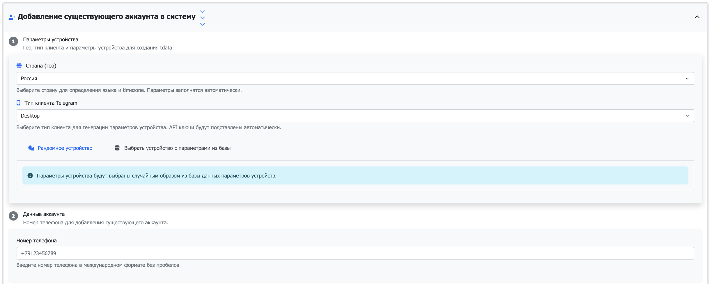
Выбор страны - для автоопределения timezone и языка системы
Тип клиента - если у вас уже выполнен вход с телефона, то выбирайте тип Desktop.
Рандомное устройство - при выборе рандомного устройства генерируются случайные параметры для Desktop (Версия ОС, Версия Telegram Desktop, Разрешение экрана, RAM) и записываются в json.
Выбрать устройство с параметрами из базы - Заранее можно сгенерировать базу параметров для Desktop версии (Версия ОС, Версия Telegram Desktop, Разрешение экрана, RAM)
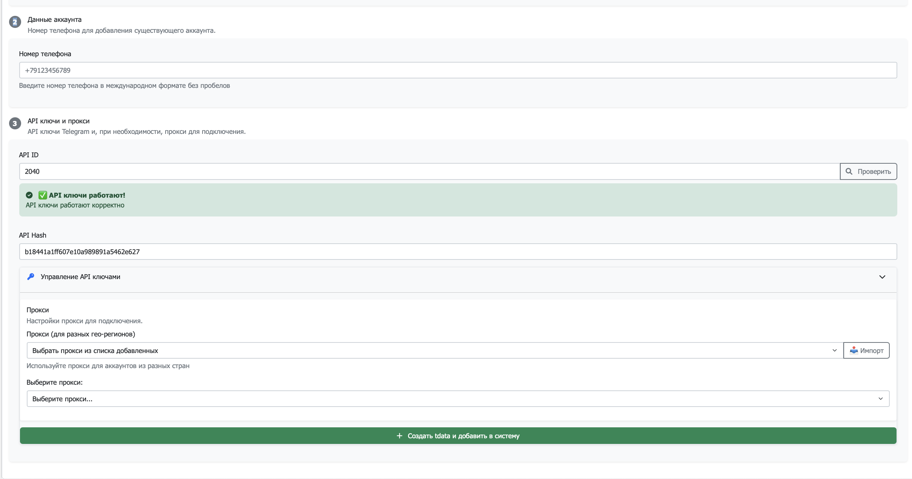
Номер телефона - в международном формате с (+)
API ключ - подставляются автоматически при выборе типа клиента Telegram.
Для Desktop версии:
- API ID: 2040
- API HASH: b18441a1ff607e10a989891a5462e627
Для Android Telegram:
- API ID: 4
- API HASH: 014b35b6184100b085b0d0572f9b5103
Для Android Telegram X:
- API ID: 21724
- API HASH: 3e0cb5efcd52300aec5994fdfc5bdc16
Прокси - можно добавить новые прямо с этого окна, либо выбрать уже добавленные прокси с модуля "Прокси"
Массовый импорт session+json
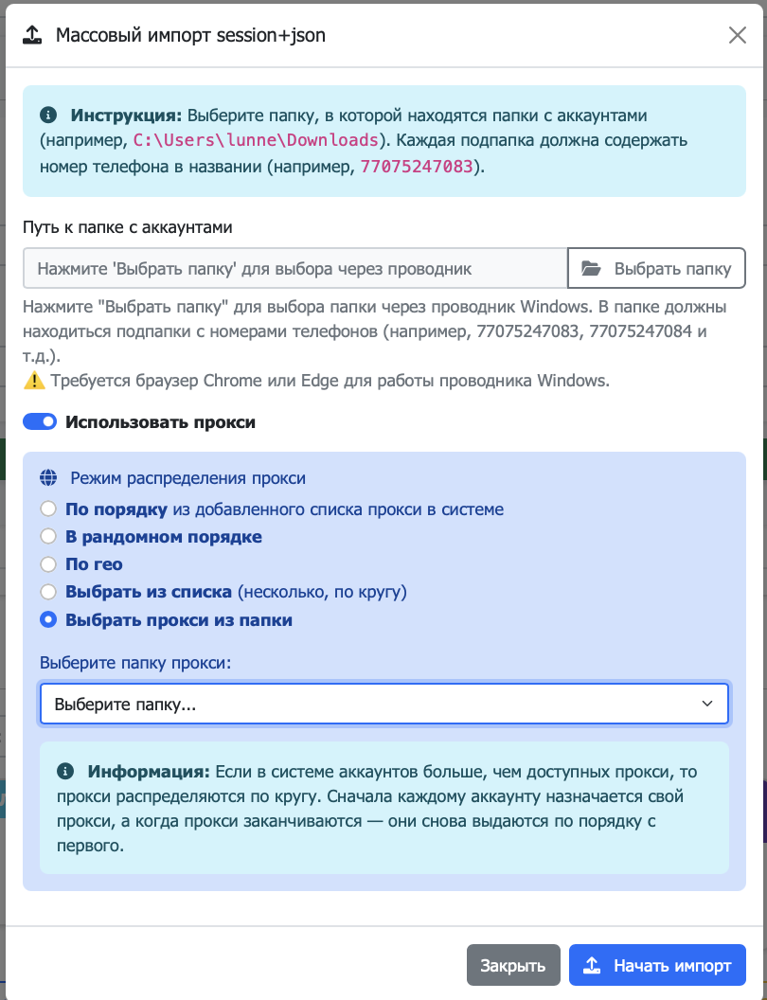
Нажмите "Выбрать папку" для выбора папки через проводник Windows. В папке должны находиться подпапки с номерами телефонов (например, 77075247083, 77075247084 и т.д.).
⚠️ Требуется браузер Chrome или Edge для работы проводника Windows или Mac.
Режим распределения прокси
- По порядку из добавленного списка - прокси в системе
- В рандомном порядке
- По гео
- Выбрать из списка (несколько, по кругу)
- Выбрать прокси из папки - должны быть заранее добавлены прокси в модуль "Прокси" и распределены по папкам.
Панель аккаунтов
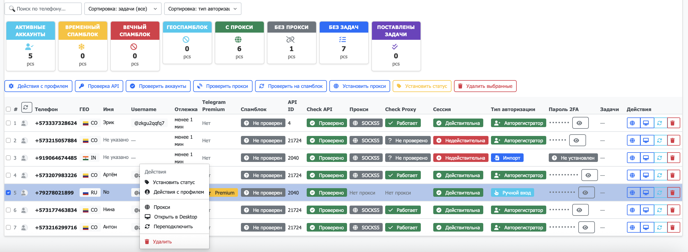
Панель действий с аккаунтами появляется в менеджере аккаунтов после выбора одного или нескольких аккаунтов (через чекбоксы). Все действия применяются к выбранным аккаунтам одновременно, что позволяет эффективно управлять большим количеством аккаунтов. Можно вызвать контекстное меню нажатием правой кнопки мыши по аккаунту.
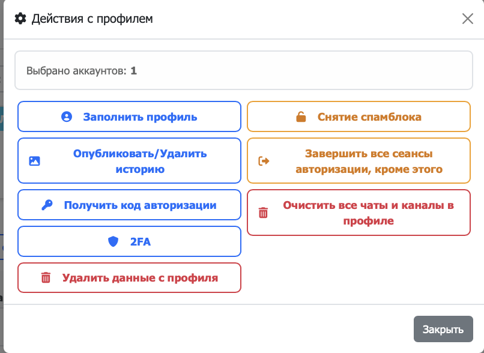
⚙️ ДЕЙСТВИЯ С ПРОФИЛЕМ
ОПИСАНИЕ:
Открывает модальное окно с набором инструментов для управления профилями выбранных аккаунтов. Это комплексный инструмент для работы с данными Telegram-аккаунтов.
ДОСТУПНЫЕ ДЕЙСТВИЯ:
- Заполнить профиль
- Автоматическое заполнение имени, фамилии, биографии и фото профиля
- Можно задать общие данные для всех выбранных аккаунтов
- Полезно для быстрой настройки новых аккаунтов
- Опубликовать/Удалить историю
- Публикация Stories (историй) в выбранных аккаунтах
- Поддержка одного файла для всех или разных файлов для каждого аккаунта
- Возможность удаления существующих историй
- Получить код авторизации
- Мониторинг и получение кодов авторизации для выбранных аккаунтов
- Полезно при восстановлении доступа или авторизации на новых устройствах
- 2FA (Двухфакторная аутентификация)
- Установка случайного пароля 2FA
- Установка собственного пароля 2FA вручную
- Удаление 2FA с аккаунтов
- Снятие спамблока
- Автоматическое взаимодействие с @SpamBot для снятия ограничений
- Поддержка различных вариантов ответов бота
- Массовое снятие спамблоков
- Завершить все сеансы авторизации, кроме этого
- Безопасное завершение всех активных сессий
- Оставляет активной только текущую сессию
- Защита от несанкционированного доступа
- Очистить все чаты и каналы в профиле
- Полная очистка истории переписок
- Удаление всех каналов и групп
- ⚠️ Внимание: действие необратимо!
- Удалить данные с профиля
- Удаление имени, фамилии, биографии, фото, stories
🔑 ПРОВЕРКА API
ОПИСАНИЕ:
Проверяет работоспособность API ключей (API ID и API Hash) для выбранных аккаунтов. Проверка выполняется путем тестового подключения к Telegram API с использованием сохраненных ключей.
ЧТО ПРОВЕРЯЕТ:
- Корректность API ID и API Hash
- Доступность API ключей для использования
- Возможность подключения к Telegram API с данными ключами
РЕЗУЛЬТАТЫ:
- ✅ "Проверено" (зеленый) - API ключи работают корректно
- ❌ "Ошибка" (красный) - проблемы с API ключами
- ⚠️ "Не проверено" (серый) - проверка не была выполнена
✓ ПРОВЕРИТЬ АККАУНТЫ
ОПИСАНИЕ:
Проверяет валидность сессий (tdata) выбранных аккаунтов. Определяет, действительны ли сохраненные сессии авторизации и можно ли использовать аккаунты для работы.
ЧТО ПРОВЕРЯЕТ:
- Валидность файлов tdata
- Активность сессий авторизации
- Возможность подключения к Telegram с текущей сессией
- Статус авторизации аккаунта
РЕЗУЛЬТАТЫ:
- ✅ "Действительна" (зеленый) - сессия активна и работает
- ❌ "Недействительна" (красный) - сессия устарела или повреждена
- ⚠️ "Не удалось проверить" - ошибка при проверке
РЕКОМЕНДАЦИИ:
- ✓ Проверяйте аккаунты после длительного простоя
- ✓ Используйте перед запуском массовых рассылок
- ✓ Если сессия недействительна - переподключите аккаунт
- ✓ Регулярная проверка помогает выявить заблокированные аккаунты
- ✓ Проверка всех аккаунтов может занять время - наберитесь терпения
📡 ПРОВЕРИТЬ ПРОКСИ
ОПИСАНИЕ:
Тестирует работоспособность прокси-серверов для выбранных аккаунтов. Проверяет доступность прокси и возможность подключения через них к Telegram.
ЧТО ПРОВЕРЯЕТ:
- Доступность прокси-сервера
- Возможность подключения к Telegram через прокси
РЕЗУЛЬТАТЫ:
- ✅ "Работает" (зеленый) - прокси функционирует нормально
- ❌ "Не работает" (красный) - прокси недоступен или неверно настроен
РЕКОМЕНДАЦИИ:
- ✓ Проверяйте прокси перед массовыми операциями
- ✓ Регулярно тестируйте прокси на работоспособность
- ✓ Заменяйте неработающие прокси сразу после обнаружения
- ✓ Используйте качественные прокси для стабильной работы
- ✓ Проверка прокси может занять время - не прерывайте процесс
- ✓ Прокси с таймаутами лучше заменить на более быстрые
- ✓ Рекомендуем использовать ГЕО прокси под ГЕО аккаунта
🔄 ПРОВЕРИТЬ НА СПАМБЛОК
ОПИСАНИЕ:
Обновляет статус спамблока для выбранных аккаунтов через взаимодействие с официальным ботом @SpamBot. Это наиболее точный способ определения реального статуса аккаунта в Telegram.
ЧТО ПРОВЕРЯЕТ:
- Наличие временных ограничений (frozen/limited)
- Наличие вечного спамблока
- Наличие геоспамблока
РЕЗУЛЬТАТЫ:
- ✅ "Нет ограничений" (зеленый) - аккаунт полностью активен
- ❄️ "Заморожен" (оранжевый) - временные ограничения до определенной даты
- 🚫 "Спамблок" (красный) - вечный спамблок
- 🌍 "ГеоСпамБлок" (синий) - блокировка при регистрации
РЕКОМЕНДАЦИИ:
- ✓ Проверяйте статус спамблока регулярно
- ✓ Используйте перед запуском массовых рассылок
- ✓ Замороженные аккаунты можно использовать после снятия ограничений
- ✓ Геоспамблок обычно получают сложные ГЕО
- ✓ Просматриваете текст сообщения от @spambot в логах, для более точного определения
🌐 УСТАНОВИТЬ ПРОКСИ
ОПИСАНИЕ:
Позволяет массово установить прокси-серверы для выбранных аккаунтов. Поддерживает различные типы прокси и автоматическое распределение по геолокациям.
ВОЗМОЖНОСТИ:
- Выбор типа прокси: SOCKS5, HTTP, MTProto
- Установка прокси из системы (если настроена)
- Автоматическое распределение прокси по GEO
- Ручной ввод параметров прокси
- Массовая установка для всех выбранных аккаунтов
ТИПЫ ПРОКСИ:
- SOCKS5 - универсальный протокол, рекомендуется
- HTTP - для базовых задач
- MTProto - специальный протокол Telegram
- Нет прокси - работа без прокси (не рекомендуется)
РЕКОМЕНДАЦИИ:
- ✓ Всегда используйте прокси для защиты аккаунтов
- ✓ Выбирайте прокси из той же страны, что и номер телефона
- ✓ Используйте качественные резидентные прокси
- ✓ Регулярно проверяйте работоспособность прокси
- ✓ Не используйте один прокси для большого количества аккаунтов
- ✓ Распределяйте аккаунты по разным прокси для безопасности
- ✓ После установки прокси проверьте его работоспособность
🏷️ УСТАНОВИТЬ СТАТУС
ОПИСАНИЕ:
Позволяет вручную установить статус для выбранных аккаунтов. Используется для маркировки аккаунтов в зависимости от их состояния и для организации работы с ними.
ДОСТУПНЫЕ СТАТУСЫ:
- Нет ограничений (✅)
- Заморожен (❄️)
- Спамблок (вечный) (🚫)
- ГеоСпамБлок (🌍)
РЕКОМЕНДАЦИИ:
- ✓ Регулярно обновляйте статусы аккаунтов
- ✓ Используйте статусы для фильтрации и организации работы
- ✓ Отслеживайте даты снятия ограничений для замороженных аккаунтов в логах
- ✓ Статусы помогают планировать работу с аккаунтами
- ✓ Сочетайте с функцией "Проверить на спамблок" для точности
🗑️ УДАЛИТЬ ВЫБРАННЫЕ
ОПИСАНИЕ:
Удаляет выбранные аккаунты из системы. Удаляются все данные аккаунта, включая tdata, настройки прокси, API ключи и другую информацию. Действие требует подтверждения и является необратимым.
ОТКРЫТЬ В DESKTOP
⚠️ Важно о Telegram Desktop !!!
Сообщения успешно отправляются через софт, но могут не отображаться в открытом окне Telegram Desktop сразу.
Для обновления информации в Telegram Desktop:
- Нажмите Ctrl+Shift+Esc (или Ctrl+Alt+Delete → Диспетчер задач)
- Найдите все процессы "telegram.exe"
- Завершите их (Правой кнопкой → Снять задачу)
- Запустите Telegram Desktop заново
После перезапуска все отправленные сообщения будут видны.
Прокси
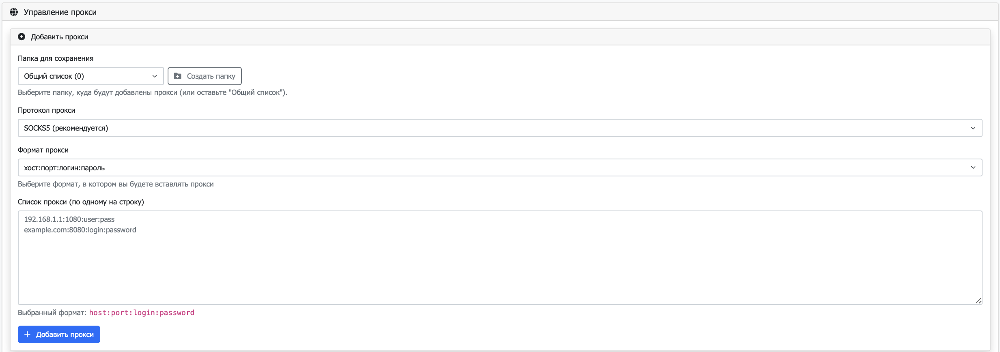
РАЗДЕЛ 1: ДОБАВЛЕНИЕ ПРОКСИ
1.1. КНОПКА "ДОБАВИТЬ ПРОКСИ" (➕)
ОПИСАНИЕ:
Массовое добавление прокси-серверов в систему. Поддерживает добавление нескольких прокси одновременно, каждый на отдельной строке.
ПАРАМЕТРЫ:
- Папка для сохранения
- Выбор папки, куда будут добавлены прокси
- Можно выбрать существующую (или создать новую) папку или "Общий список"
- Прокси можно организовать по папкам для удобства
- Протокол прокси
- SOCKS5 (рекомендуется) - универсальный протокол
- SOCKS4 - устаревший протокол
- HTTP - базовый протокол
- MTProto (Telegram) - специальный протокол для Telegram
- Формат прокси (для HTTP и SOCKS5)
- логин:пароль:хост:порт
- логин:пароль@хост:порт
- хост:порт:логин:пароль (по умолчанию)
- хост:порт@логин:пароль
- Список прокси
- Ввод прокси по одному на строку
- Поддержка различных форматов в зависимости от выбранного протокола
- Автоматический парсинг и валидация
ФОРМАТЫ ВВОДА:
Для HTTP/SOCKS5 (с форматом):
- хост:порт:логин:пароль
- 192.168.1.1:1080:user:pass
- example.com:8080:login:password
Без авторизации:
- 192.168.1.1:1080
РЕКОМЕНДАЦИИ:
- ✓ Используйте SOCKS5 для максимальной совместимости
- ✓ Проверяйте формат прокси перед добавлением
- ✓ Организуйте прокси по папкам (по странам, провайдерам и т.д.)
- ✓ Добавляйте прокси порциями для удобства проверки
- ✓ После добавления сразу проверяйте работоспособность
РАЗДЕЛ 2: ОРГАНИЗАЦИЯ ПРОКСИ
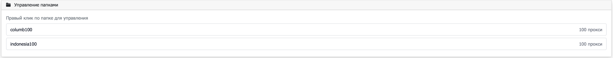
2.1. КНОПКА "СОЗДАТЬ ПАПКУ" (📁)
ОПИСАНИЕ:
Создание новой папки для организации прокси. Папки помогают структурировать прокси по различным критериям (страны, провайдеры, типы и т.д.).
ИСПОЛЬЗОВАНИЕ:
- Нажмите кнопку "Создать папку"
- Введите название папки
- Папка будет создана и появится в списке
РЕКОМЕНДАЦИИ:
- ✓ Используйте понятные названия папок (например: "Россия", "США", "Residential")
- ✓ Организуйте прокси по странам для удобства распределения
- ✓ Создавайте отдельные папки для разных типов прокси
2.2. КОНТЕКСТНОЕ МЕНЮ ПАПКИ (Правый клик)
ОПИСАНИЕ:
Доступ к действиям с папкой через правый клик по папке в списке.
ДОСТУПНЫЕ ДЕЙСТВИЯ:
- Переименовать
- Изменение названия папки
- Введите новое название в диалоговом окне
- Удалить
- Удаление папки
- Все прокси из папки будут перемещены в "Общий список"
- Требует подтверждения
РЕКОМЕНДАЦИИ:
- ✓ Используйте переименование вместо удаления и создания новой папки
- ✓ Перед удалением папки убедитесь, что прокси не нужны в текущей организации
- ✓ Удаление папки не удаляет прокси, только перемещает их
РАЗДЕЛ 3: ФИЛЬТРАЦИЯ И ОРГАНИЗАЦИЯ
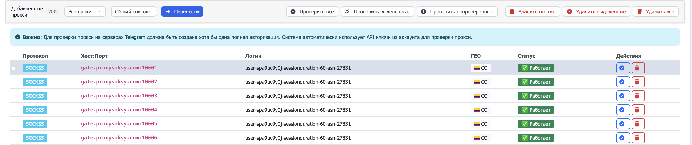
3.1. ВЫПАДАЮЩИЙ СПИСОК "ФИЛЬТР ПАПОК"
ОПИСАНИЕ:
Фильтрация отображаемых прокси по папкам. Позволяет просматривать прокси из конкретной папки или все прокси сразу.
ВАРИАНТЫ:
- Все папки - показывает все прокси из всех папок
- Общий список - показывает только прокси без папки
- [Название папки] - показывает только прокси из выбранной папки
РЕКОМЕНДАЦИИ:
- ✓ Используйте фильтры для быстрого поиска нужных прокси
- ✓ Переключайтесь между папками для проверки их содержимого
- ✓ Используйте "Все папки" для общего обзора
3.2. ВЫПАДАЮЩИЙ СПИСОК "ПЕРЕНОС В ПАПКУ"
ОПИСАНИЕ:
Выбор целевой папки для переноса выбранных прокси.
ВАРИАНТЫ:
- Общий список - перемещение прокси из папки в общий список
- [Название папки] - перемещение прокси в выбранную папку
3.3. КНОПКА "ПЕРЕНЕСТИ" (➡️)
ОПИСАНИЕ:
Перенос выбранных прокси в указанную папку. Позволяет реорганизовать структуру прокси.
ИСПОЛЬЗОВАНИЕ:
- Выберите прокси (через чекбоксы или клик по строке)
- Выберите целевую папку из выпадающего списка
- Нажмите кнопку "Перенести"
РЕКОМЕНДАЦИИ:
- ✓ Используйте для организации прокси по категориям
- ✓ Переносите проверенные прокси в соответствующие папки
- ✓ Регулярно реорганизуйте структуру для удобства работы
- ✓ Можно переносить прокси между папками или в общий список
РАЗДЕЛ 4: ПРОВЕРКА ПРОКСИ
⚠️ ВАЖНО: Для проверки прокси на серверах Telegram необходимо иметь хотя бы одну полноценно созданную tdata с сессией. Система использует API ключи из аккаунта для проверки прокси.
4.1. КНОПКА "ПРОВЕРИТЬ ВСЕ" (✓)
ОПИСАНИЕ:
Проверка работоспособности всех прокси в системе. Проверяет доступность, скорость соединения и определяет GEO (геолокацию) прокси.
ЧТО ПРОВЕРЯЕТ:
- Доступность прокси-сервера
- Скорость соединения (таймауты)
- Возможность подключения к Telegram через прокси
- Определение геолокации (GEO) прокси
РЕЗУЛЬТАТЫ:
- ✅ "Работает" (зеленый) - прокси функционирует нормально
- ❌ "Не работает" (красный) - прокси недоступен или неверно настроен
- ⏳ "Не проверен" (серый) - проверка еще не выполнялась
РЕКОМЕНДАЦИИ:
- ✓ Используйте после массового добавления прокси
- ✓ Регулярно проверяйте все прокси (раз в неделю)
- ✓ Проверка может занять время для большого количества прокси
- ✓ После проверки удаляйте неработающие прокси
- ✓ Обращайте внимание на определенную GEO - она поможет в распределении
4.2. КНОПКА "ПРОВЕРИТЬ ВЫДЕЛЕННЫЕ" (✓✓)
ОПИСАНИЕ:
Проверка работоспособности только выбранных прокси. Позволяет проверять конкретные прокси без проверки всех.
ИСПОЛЬЗОВАНИЕ:
- Выберите прокси через чекбоксы или клик по строкам
- Нажмите кнопку "Проверить выделенные"
- Дождитесь завершения проверки
РЕКОМЕНДАЦИИ:
- ✓ Используйте для проверки конкретных прокси
- ✓ Проверяйте новые прокси сразу после добавления
- ✓ Проверяйте прокси перед использованием в массовых операциях
- ✓ Можно использовать Shift+клик для выбора диапазона
4.3. КНОПКА "ПРОВЕРИТЬ НЕПРОВЕРЕННЫЕ" (❓)
ОПИСАНИЕ:
Проверка только тех прокси, которые еще не были проверены. Экономит время при работе с большим количеством прокси.
ЧТО ПРОВЕРЯЕТ:
- Только прокси со статусом "Не проверен"
- Пропускает уже проверенные прокси
РЕКОМЕНДАЦИИ:
- ✓ Используйте после добавления новых прокси
- ✓ Экономит время при работе с большим количеством прокси
- ✓ Регулярно проверяйте непроверенные прокси
- ✓ После проверки удаляйте неработающие
4.4. КНОПКА "ПРОВЕРИТЬ" (для отдельного прокси) (✓)
ОПИСАНИЕ:
Проверка работоспособности одного конкретного прокси. Находится в колонке "Действия" каждой строки прокси.
ИСПОЛЬЗОВАНИЕ:
- Нажмите кнопку "Проверить" рядом с нужным прокси
- Дождитесь завершения проверки
- Статус обновится автоматически
РЕКОМЕНДАЦИИ:
- ✓ Используйте для быстрой проверки одного прокси
- ✓ Проверяйте прокси перед назначением аккаунту
- ✓ Регулярно перепроверяйте используемые прокси
- ✓ Обращайте внимание на определенную GEO после проверки
РАЗДЕЛ 5: УДАЛЕНИЕ ПРОКСИ
5.1. КНОПКА "УДАЛИТЬ ПЛОХИЕ" (🗑️)
ОПИСАНИЕ:
Массовое удаление всех неработающих прокси из системы. Удаляет прокси со статусом "Не работает".
ЧТО УДАЛЯЕТ:
- Все прокси со статусом "Не работает"
- Прокси с ошибками подключения
- Недоступные прокси-серверы
ПОДТВЕРЖДЕНИЕ:
Требует подтверждения перед удалением.
РЕКОМЕНДАЦИИ:
- ✓ Используйте после проверки всех прокси
- ✓ Регулярно очищайте систему от неработающих прокси
- ✓ Перед удалением убедитесь, что прокси действительно не работают
- ✓ Удаление необратимо - убедитесь в необходимости
5.2. КНОПКА "УДАЛИТЬ ВЫДЕЛЕННЫЕ" (➖)
ОПИСАНИЕ:
Удаление только выбранных прокси. Позволяет удалить конкретные прокси без удаления всех.
ИСПОЛЬЗОВАНИЕ:
- Выберите прокси через чекбоксы или клик по строкам
- Нажмите кнопку "Удалить выделенные"
- Подтвердите удаление
ПОДТВЕРЖДЕНИЕ:
Требует подтверждения с указанием количества прокси.
РЕКОМЕНДАЦИИ:
- ✓ Используйте для удаления конкретных неработающих прокси
- ✓ Удаляйте прокси с истекшим сроком действия
- ✓ Удаляйте прокси, которые больше не нужны
- ✓ Можно использовать Shift+клик для выбора диапазона
- ⚠️ Внимание: удаление необратимо
5.3. КНОПКА "УДАЛИТЬ ВСЕ" (🗑️)
ОПИСАНИЕ:
Удаление всех прокси из системы. Полная очистка модуля прокси.
ПОДТВЕРЖДЕНИЕ:
Требует подтверждения с предупреждением о необратимости действия.
РЕКОМЕНДАЦИИ:
- ⚠️ ВНИМАНИЕ: Действие необратимо! Все прокси будут удалены
- ✓ Используйте только при полной очистке системы
- ✓ Перед удалением убедитесь, что прокси не используются аккаунтами
- ✓ Рекомендуется экспортировать список прокси перед удалением (если нужно)
- ✓ Используйте с осторожностью
5.4. КНОПКА "УДАЛИТЬ" (для отдельного прокси) (🗑️)
ОПИСАНИЕ:
Удаление одного конкретного прокси. Находится в колонке "Действия" каждой строки прокси.
ИСПОЛЬЗОВАНИЕ:
- Нажмите кнопку "Удалить" рядом с нужным прокси
- Подтвердите удаление
- Прокси будет удален из системы
РЕКОМЕНДАЦИИ:
- ✓ Используйте для удаления конкретного неработающего прокси
- ✓ Удаляйте прокси с истекшим сроком действия
- ✓ Удаляйте прокси, которые больше не нужны
- ⚠️ Внимание: удаление необратимо
РАЗДЕЛ 6: РАБОТА СО СПИСКОМ ПРОКСИ
6.1. ЧЕКБОКС "ВЫБРАТЬ ВСЕ"
ОПИСАНИЕ:
Выбор всех прокси в текущем отображаемом списке. Позволяет быстро выбрать все прокси для массовых операций.
ИСПОЛЬЗОВАНИЕ:
- Установите чекбокс в заголовке таблицы
- Все прокси в текущем списке будут выбраны
- Повторный клик снимает выделение
РЕКОМЕНДАЦИИ:
- ✓ Используйте для массовых операций (проверка, удаление, перенос)
- ✓ Учитывайте фильтр папок - выбираются только видимые прокси
- ✓ Комбинируйте с фильтрами для работы с конкретными группами
6.2. ВЫБОР ПРОКСИ (Клик по строке)
ОПИСАНИЕ:
Выбор прокси через клик по строке таблицы. Удобный способ выбора прокси без использования чекбоксов.
ВОЗМОЖНОСТИ:
- Одиночный клик - выбор/снятие выбора прокси
- Shift+клик - выбор диапазона прокси
- Клик по строке выделяет прокси и делает строку активной
РЕКОМЕНДАЦИИ:
- ✓ Используйте для быстрого выбора прокси
- ✓ Shift+клик удобен для выбора диапазона
- ✓ Выбранные прокси подсвечиваются синим цветом
- ✓ Можно комбинировать с чекбоксами
6.3. ИНФОРМАЦИЯ О ПРОКСИ В ТАБЛИЦЕ
ОТОБРАЖАЕМАЯ ИНФОРМАЦИЯ:
- Протокол
- Тип прокси (SOCKS5, SOCKS4, HTTP, MTProto)
- Отображается цветным бейджем
- Хост:Порт
- Адрес и порт прокси-сервера
- Отображается в формате кода
- Логин
- Имя пользователя для авторизации
- "—" если авторизация не требуется
- ГЕО
- Геолокация прокси (определяется при проверке)
- Отображается флагом и кодом страны
- "—" если GEO не определена
- Статус
- ✅ "Работает" (зеленый) - прокси функционирует
- ❌ "Не работает" (красный) - прокси недоступен
- ⏳ "Не проверен" (серый) - проверка не выполнялась
РЕКОМЕНДАЦИИ:
- ✓ Регулярно проверяйте статус прокси
- ✓ Обращайте внимание на GEO для правильного распределения
- ✓ Используйте информацию о протоколе для совместимости
Генератор параметров
Модуль "Генератор параметров" предназначен для создания уникальных параметров устройств для регистрации аккаунтов Telegram. Использует ту же логику, что и авторегистратор: модель устройства выбирается случайно из глобального пула, а язык и таймзона определяются по выбранной стране.
РАЗДЕЛ 1: ОСНОВНЫЕ НАСТРОЙКИ
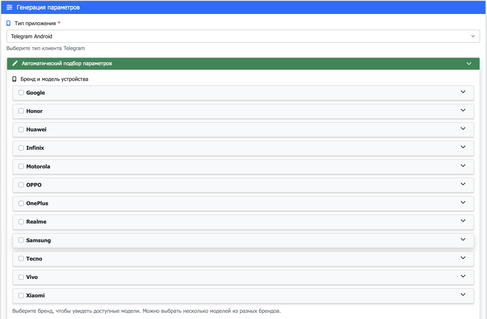
1.1. ТИП ПРИЛОЖЕНИЯ (📱)
ОПИСАНИЕ:
Выбор типа клиента Telegram, для которого будут генерироваться параметры.
ДОСТУПНЫЕ ВАРИАНТЫ:
- Telegram Android
- Стандартное приложение Telegram для Android
- Использует параметры Android устройств
- Требует выбор моделей устройств и версий Telegram
- Telegram X
- Альтернативное приложение Telegram
- Использует параметры Android устройств
- Требует выбор моделей устройств и версий Telegram X
- Telegram Desktop
- Десктопная версия Telegram
- Использует параметры Windows компьютеров
- Требует выбор версий Windows, Telegram Desktop, разрешений экрана и RAM
РЕКОМЕНДАЦИИ:
- ✓ Выбирайте тип приложения в зависимости от ваших задач
- ✓ Telegram Android - наиболее распространенный вариант
- ✓ Telegram X - для разнообразия параметров
- ✓ Telegram Desktop - для десктопных регистраций
РАЗДЕЛ 2: АВТОМАТИЧЕСКИЙ ПОДБОР ПАРАМЕТРОВ
2.1. БРЕНД И МОДЕЛЬ УСТРОЙСТВА (📱)
ОПИСАНИЕ:
Выбор брендов и моделей устройств для генерации параметров. Можно выбрать несколько моделей из разных брендов.
ИСПОЛЬЗОВАНИЕ:
- Раскройте бренд кликом по заголовку
- Выберите бренд целиком (чекбокс в заголовке)
- Выберите конкретные модели внутри бренда
- Используйте кнопку "Выбрать все модели" для быстрого выбора
ВОЗМОЖНОСТИ:
- Выбор нескольких брендов одновременно
- Выбор конкретных моделей из разных брендов
- Добавление кастомных моделей
- Просмотр характеристик моделей (Android версия, RAM, разрешение)
ДОБАВЛЕНИЕ КАСТОМНОЙ МОДЕЛИ:
- Раскройте нужный бренд
- В блоке "Добавить новую модель" введите:
- Название модели
- Версию Android (например: Android 12)
- RAM в GB (например: 8)
- Разрешение экрана (например: 1080x2400)
- Нажмите кнопку "+"
- Модель будет добавлена и автоматически выбрана
РЕКОМЕНДАЦИИ:
- ✓ Выбирайте модели, популярные в выбранной стране
- ✓ Используйте рекомендации по гео (правая панель)
- ✓ Добавляйте кастомные модели для уникальности
- ✓ Выбирайте несколько моделей для разнообразия
- ✓ Обращайте внимание на характеристики моделей
2.2. ВЕРСИЯ ANDROID (🤖)
ОПИСАНИЕ:
Версия Android автоматически подбирается для каждого устройства исходя из его класса (флагман 2024-2025, флагман 2022-2023, средний класс, бюджетный).
ИНФОРМАЦИЯ:
- Версия определяется автоматически
- Зависит от класса устройства
- Не требует ручной настройки
РЕКОМЕНДАЦИИ:
- ✓ Параметр настраивается автоматически
- ✓ Учитывается класс устройства при генерации
- ✓ Не требует вмешательства пользователя
2.3. ВЕРСИЯ TELEGRAM (✈️)
ОПИСАНИЕ:
Выбор версий Telegram для генерации параметров. Можно выбрать одну или несколько версий. Если не выбрано, версия будет выбрана случайно из списка.
ДОСТУПНЫЕ ВЕРСИИ:
- Telegram Android: 12.3.1, 12.3.0, 12.2.11, 12.2.10 и другие
- Telegram X: 0.28.1, 0.28.0, 0.27.9, 0.27.8 и другие
ДОБАВЛЕНИЕ КАСТОМНОЙ ВЕРСИИ:
- Введите версию в поле (например: 12.4.0)
- Нажмите кнопку "Добавить версию"
- Версия будет добавлена и автоматически выбрана
РЕКОМЕНДАЦИИ:
- ✓ Выбирайте актуальные версии для реалистичности
- ✓ Можно выбрать несколько версий для разнообразия
- ✓ Если не выбрано - версия выбирается случайно
- ✓ Добавляйте кастомные версии при необходимости
2.4. ПАРАМЕТРЫ DESKTOP (🖥️)
ОПИСАНИЕ:
Настройки для генерации параметров Telegram Desktop. Доступны только при выборе типа приложения "Telegram Desktop".
ВЕРСИЯ WINDOWS:
- Windows 10
- Windows 11
- Можно добавить свою версию (например: Windows 10 Pro)
ВЕРСИЯ TELEGRAM DESKTOP:
- 4.17.3, 4.16.8, 4.15.4, 4.14.9
- Можно добавить свою версию (например: 4.18.0)
РАЗРЕШЕНИЕ ЭКРАНА:
- 1920x1080, 2560x1440
- Можно добавить свое разрешение (например: 3840x2160)
- Формат: ШИРИНАxВЫСОТА
RAM (ГБ):
- 8 ГБ, 16 ГБ, 32 ГБ
- Можно добавить свой объем (например: 64 ГБ)
- Минимум: 1 ГБ, максимум: 128 ГБ
РЕКОМЕНДАЦИИ:
- ✓ Выбирайте популярные версии Windows
- ✓ Используйте стандартные разрешения экрана
- ✓ Выбирайте реалистичные объемы RAM
- ✓ Можно выбрать несколько вариантов для разнообразия
2.5. СТРАНА (🌍)
ОПИСАНИЕ:
Выбор страны для определения таймзоны и языка. При выборе страны автоматически заполняются часовой пояс, язык приложения и язык системы.
ДОСТУПНЫЕ РЕГИОНЫ:
- Азия (Казахстан, Россия, Узбекистан, Индия и др.)
- Европа (Германия, Франция, Великобритания и др.)
- Америка (США, Канада, Бразилия и др.)
- Африка (ЮАР, Кения, Нигерия и др.)
АВТОМАТИЧЕСКОЕ ЗАПОЛНЕНИЕ:
- Часовой пояс (смещение от UTC)
- Язык приложения
- Язык системы
РЕКОМЕНДАЦИИ:
- ✓ Выбирайте страну, соответствующую номеру телефона
- ✓ Используйте рекомендации по выбору устройств (правая панель)
- ✓ Страна определяет таймзону и язык автоматически
- ✓ Можно изменить язык вручную после выбора страны
2.6. ЯЗЫК ПРИЛОЖЕНИЯ (🌐)
ОПИСАНИЕ:
Язык интерфейса Telegram приложения. Автоматически заполняется при выборе страны, но можно изменить вручную.
ВАРИАНТЫ:
- Автоматический выбор (по ГЕО) - рекомендуется
- Ручной выбор из списка языков
РЕКОМЕНДАЦИИ:
- ✓ Рекомендуется использовать автоматический выбор по ГЕО
- ✓ Язык должен соответствовать выбранной стране
- ✓ Можно изменить вручную при необходимости
2.7. ЯЗЫК СИСТЕМЫ (🌐)
ОПИСАНИЕ:
Язык операционной системы устройства. Автоматически заполняется при выборе страны, но можно изменить вручную.
ВАРИАНТЫ:
- Автоматический выбор по стране - рекомендуется
- Ручной выбор из списка языков
РЕКОМЕНДАЦИИ:
- ✓ Рекомендуется использовать автоматический выбор по стране
- ✓ Язык системы должен соответствовать языку приложения
- ✓ Можно изменить вручную при необходимости
2.8. СМЕЩЕНИЕ ОТ UTC (🕐)
ОПИСАНИЕ:
Часовой пояс устройства в формате смещения от UTC. Автоматически заполняется при выборе страны.
ФОРМАТЫ:
- UTC (по умолчанию)
- +3 (для Москвы)
- -8 (для Ванкувера)
- И другие форматы смещения
РЕКОМЕНДАЦИИ:
- ✓ Автоматически заполняется при выборе страны
- ✓ Можно изменить вручную при необходимости
- ✓ Должно соответствовать выбранной стране
РАЗДЕЛ 3: НАСТРОЙКИ ГЕНЕРАЦИИ
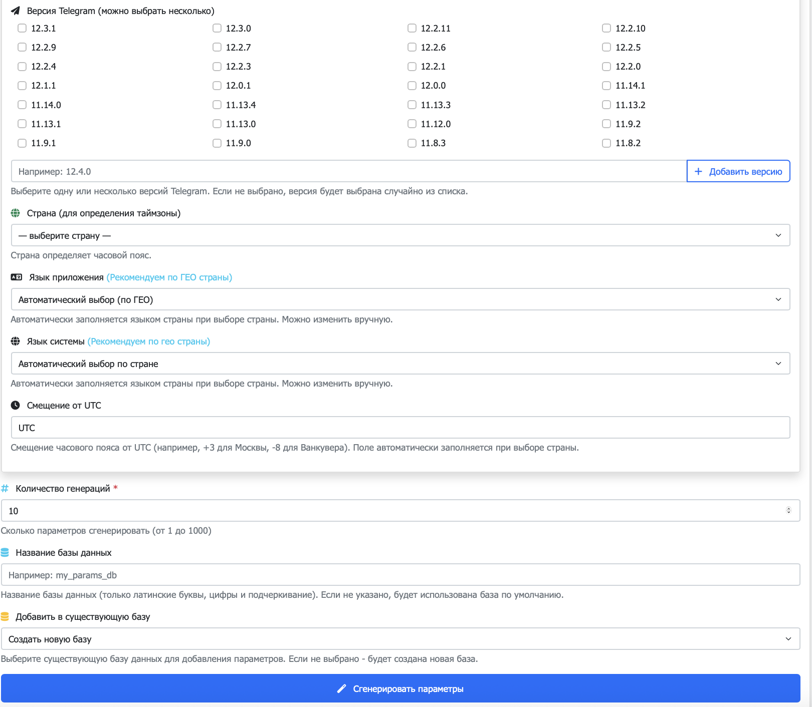
3.1. КОЛИЧЕСТВО ГЕНЕРАЦИЙ (#)
ОПИСАНИЕ:
Количество параметров, которые будут сгенерированы за один раз.
ПАРАМЕТРЫ:
- Минимум: 1
- Максимум: 1000
- По умолчанию: 10
РЕКОМЕНДАЦИИ:
- ✓ Начните с небольшого количества для тестирования
- ✓ Генерация большого количества может занять время
- ✓ Учитывайте ограничения базы данных
- ✓ Дубликаты не сохраняются автоматически
3.2. НАЗВАНИЕ БАЗЫ ДАННЫХ (💾)
ОПИСАНИЕ:
Название базы данных для сохранения сгенерированных параметров. Если не указано, будет использована база по умолчанию.
ТРЕБОВАНИЯ:
- Только латинские буквы, цифры и подчеркивание
- Не может содержать пробелы и специальные символы
- Пример: my_params_db, params_2024
РЕКОМЕНДАЦИИ:
- ✓ Используйте понятные названия
- ✓ Можно использовать даты или версии в названии
- ✓ Название должно быть уникальным
- ✓ Валидация происходит автоматически при вводе
3.3. ДОБАВИТЬ В СУЩЕСТВУЮЩУЮ БАЗУ (➕)
ОПИСАНИЕ:
Выбор существующей базы данных для добавления новых параметров. Если выбрана существующая база, новые параметры будут добавлены в неё, а не создана новая.
ВАРИАНТЫ:
- Создать новую базу (по умолчанию)
- [Название базы] (N параметров) - список существующих баз
РЕКОМЕНДАЦИИ:
- ✓ Используйте для пополнения существующих баз
- ✓ Дубликаты не сохраняются автоматически
- ✓ Проверяйте количество параметров в базе
- ✓ Можно комбинировать с указанием нового названия
РАЗДЕЛ 4: ГЕНЕРАЦИЯ И РЕЗУЛЬТАТЫ
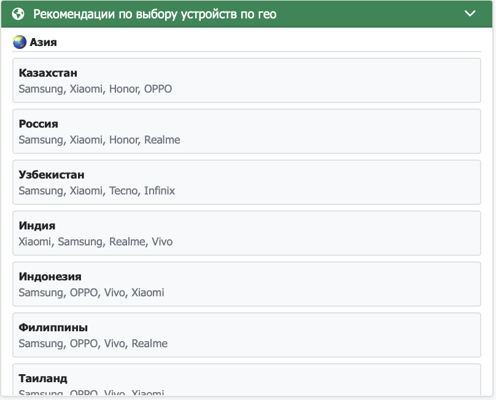
4.1. КНОПКА "СГЕНЕРИРОВАТЬ ПАРАМЕТРЫ" (✨)
ОПИСАНИЕ:
Запуск процесса генерации параметров устройств на основе выбранных настроек.
ПРОЦЕСС:
- Сбор всех выбранных параметров
- Генерация уникальных комбинаций
- Проверка на дубликаты
- Сохранение в базу данных
- Отображение результатов
РЕЗУЛЬТАТЫ:
- Сгенерировано параметров - общее количество
- Сохранено в базу - количество уникальных параметров
- Дубликатов (пропущено) - количество дубликатов
- Ошибок - количество ошибок при генерации
- База данных - путь к файлу базы данных
РЕКОМЕНДАЦИИ:
- ✓ Проверьте все настройки перед генерацией
- ✓ Дождитесь завершения процесса
- ✓ Обратите внимание на количество дубликатов
- ✓ Сохраните путь к базе данных
4.2. КНОПКА "СКАЧАТЬ БАЗУ ДАННЫХ" (📥)
ОПИСАНИЕ:
Скачивание базы данных с сгенерированными параметрами на локальный компьютер.
ИСПОЛЬЗОВАНИЕ:
- Нажмите кнопку после успешной генерации
- База данных будет скачана в формате SQLite
- Файл можно использовать в других проектах
РЕКОМЕНДАЦИИ:
- ✓ Скачивайте базу после каждой генерации
- ✓ Сохраняйте резервные копии баз данных
- ✓ Используйте базу для авторегистратора
- ✓ Проверяйте целостность файла после скачивания
4.3. КНОПКА "ПРОСМОТРЕТЬ БАЗУ ДАННЫХ" (👁️)
ОПИСАНИЕ:
Открытие базы данных в новой вкладке браузера для просмотра содержимого.
ВОЗМОЖНОСТИ:
- Просмотр всех параметров в базе
- Фильтрация и поиск
- Экспорт данных
- Статистика по типам параметров
РЕКОМЕНДАЦИИ:
- ✓ Используйте для проверки содержимого базы
- ✓ Проверяйте уникальность параметров
- ✓ Анализируйте распределение по типам
- ✓ Используйте перед использованием в авторегистраторе
5.1. КНОПКА "ОБНОВИТЬ ИНФОРМАЦИЮ" (🔄)
ОПИСАНИЕ:
Обновление информации о выбранной базе данных. Показывает статистику и детали базы.
ОТОБРАЖАЕМАЯ ИНФОРМАЦИЯ:
- Общее количество параметров в базе
- Название базы данных
- Путь к файлу базы данных
- Распределение по типам:
- Android
- Telegram X
- Desktop
РЕКОМЕНДАЦИИ:
- ✓ Обновляйте информацию после генерации
- ✓ Проверяйте статистику перед использованием
- ✓ Следите за распределением по типам
- ✓ Используйте для контроля наполнения базы
РАЗДЕЛ 6: РЕКОМЕНДАЦИИ ПО ВЫБОРУ УСТРОЙСТВ ПО ГЕО
6.1. ПАНЕЛЬ РЕКОМЕНДАЦИЙ (🌍)
ОПИСАНИЕ:
Справочная панель с рекомендациями по выбору устройств на основе массового рынка в каждой стране. Помогает выбрать подходящие бренды для конкретной страны.
ФУНКЦИОНАЛЬНОСТЬ:
- Показывает популярные бренды для каждой страны
- Подсвечивает рекомендации для выбранной страны
- Организована по регионам (Азия, Европа, Америка, Африка)
ИСПОЛЬЗОВАНИЕ:
- Выберите страну в настройках
- Рекомендации автоматически подсветятся
- Используйте рекомендации при выборе моделей устройств
РЕКОМЕНДАЦИИ:
- ✓ Используйте рекомендации для реалистичности
- ✓ Выбирайте бренды, популярные в стране
- ✓ Комбинируйте несколько брендов для разнообразия
- ✓ Учитывайте региональные особенности
Рассылка в личные сообщения
Модуль "Рассылка в ЛС" предназначен для массовой отправки сообщений в личные чаты пользователей Telegram. Система использует обычные аккаунты (не боты) для рассылки, так как Telegram запрещает ботам делать рассылки в личные сообщения.
⚠️ ВАЖНО: Используйте модуль ответственно и в разумных пределах! Соблюдайте ограничения Telegram для избежания блокировок.
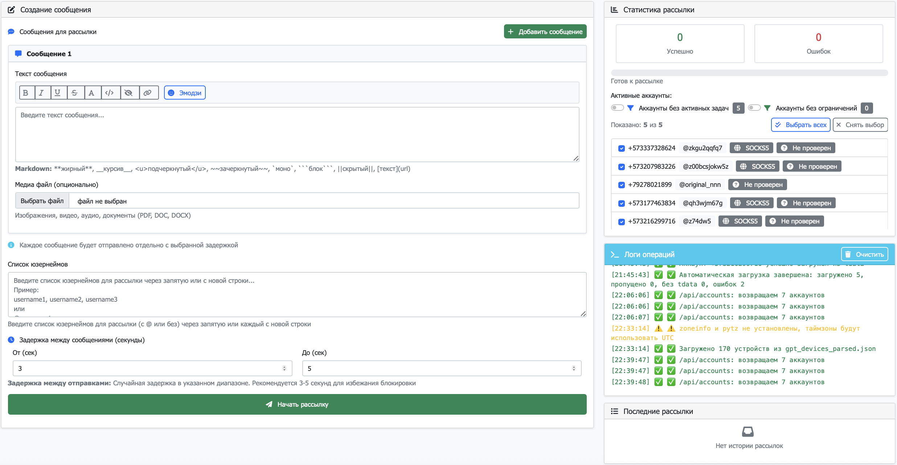
РАЗДЕЛ 1: СОЗДАНИЕ СООБЩЕНИЙ
1.1. КНОПКА "ДОБАВИТЬ СООБЩЕНИЕ" (➕)
ОПИСАНИЕ:
Добавление нового сообщения в список для рассылки. Можно создать несколько сообщений, которые будут отправляться циклически каждому получателю.
ИСПОЛЬЗОВАНИЕ:
- Нажмите кнопку "Добавить сообщение"
- Новое сообщение появится в списке
- Заполните текст и при необходимости добавьте медиа
ВОЗМОЖНОСТИ:
- Неограниченное количество сообщений
- Каждое сообщение отправляется отдельно
- Сообщения отправляются циклически (1-е, 2-е, 3-е, затем снова 1-е)
- Можно добавить медиафайл к каждому сообщению
РЕКОМЕНДАЦИИ:
- ✓ Создавайте несколько сообщений для разнообразия
- ✓ Чередуйте текстовые и медиа-сообщения
- ✓ Используйте разные форматы сообщений
- ✓ Тестируйте на небольшом количестве получателей
1.2. КНОПКА "УДАЛИТЬ СООБЩЕНИЕ" (🗑️)
ОПИСАНИЕ:
Удаление сообщения из списка рассылки. Кнопка недоступна для единственного сообщения (минимум должно остаться одно).
ИСПОЛЬЗОВАНИЕ:
- Нажмите кнопку "Удалить" в заголовке сообщения
- Сообщение будет удалено из списка
- Минимум одно сообщение должно остаться
РЕКОМЕНДАЦИИ:
- ✓ Удаляйте ненужные или ошибочные сообщения
- ✓ Проверяйте список перед началом рассылки
- ✓ Оставляйте хотя бы одно сообщение
РАЗДЕЛ 2: ФОРМАТИРОВАНИЕ ТЕКСТА
2.1. ПАНЕЛЬ ФОРМАТИРОВАНИЯ
ОПИСАНИЕ:
Панель инструментов для форматирования текста сообщений. Поддерживает различные стили форматирования Telegram.
ДОСТУПНЫЕ ИНСТРУМЕНТЫ:
- Жирный (B)
- Формат: **текст**
- Выделите текст и нажмите кнопку
- Или используйте Markdown: **текст**
- Курсив (I)
- Формат: __текст__
- Выделите текст и нажмите кнопку
- Или используйте Markdown: __текст__
- Подчеркнутый (U)
- Формат: текст
- Выделите текст и нажмите кнопку
- Или используйте HTML: текст
- Зачеркнутый (S)
- Формат: ~~текст~~
- Выделите текст и нажмите кнопку
- Или используйте Markdown: ~~текст~~
- Моноширный (Font)
- Формат: `текст`
- Выделите текст и нажмите кнопку
- Или используйте Markdown: `текст`
- Код блок (Code)
- Формат: ```текст```
- Выделите текст и нажмите кнопку
- Или используйте Markdown: ```текст```
- Скрытый текст / Спойлер (Eye-slash)
- Формат: ||текст||
- Выделите текст и нажмите кнопку
- Или используйте Markdown: ||текст||
- Ссылка (Link)
- Формат: [текст](url)
- Выделите текст и нажмите кнопку
- Введите URL в диалоговом окне
- Или используйте Markdown: [текст](url)
ИСПОЛЬЗОВАНИЕ:
- Выделите текст в поле сообщения
- Нажмите нужную кнопку форматирования
- Форматирование применится автоматически
РЕКОМЕНДАЦИИ:
- ✓ Используйте форматирование для выделения важной информации
- ✓ Комбинируйте разные стили (но не переусердствуйте)
- ✓ Проверяйте форматирование перед отправкой
- ✓ Используйте спойлеры для скрытия конфиденциальной информации
2.2. КНОПКА "ЭМОДЗИ" (😊)
ОПИСАНИЕ:
Открытие панели с популярными эмодзи для вставки в сообщение.
ВОЗМОЖНОСТИ:
- Большая коллекция популярных эмодзи
- Категории: смайлы, жесты, сердца, природа, еда, напитки, активности и др.
- Клик по эмодзи вставляет его в позицию курсора
ИСПОЛЬЗОВАНИЕ:
- Нажмите кнопку "Эмодзи"
- Панель эмодзи откроется под полем сообщения
- Кликните на нужный эмодзи
- Эмодзи вставится в позицию курсора
- Повторный клик по кнопке скрывает панель
РЕКОМЕНДАЦИИ:
- ✓ Используйте эмодзи для эмоциональности сообщений
- ✓ Не переусердствуйте с количеством эмодзи
- ✓ Выбирайте эмодзи, соответствующие контексту
- ✓ Эмодзи делают сообщения более привлекательными
РАЗДЕЛ 3: МЕДИАФАЙЛЫ
3.1. ПОЛЕ "МЕДИА ФАЙЛ" (📎)
ОПИСАНИЕ:
Добавление медиафайла к сообщению. Каждое сообщение может содержать один медиафайл.
ПОДДЕРЖИВАЕМЫЕ ФОРМАТЫ:
- Изображения: JPG, PNG, GIF, WEBP и другие
- Видео: MP4, AVI, MOV и другие
- Аудио: MP3, WAV, OGG и другие
- Документы: PDF, DOC, DOCX
ИСПОЛЬЗОВАНИЕ:
- Нажмите кнопку "Выбрать файл" или "Обзор"
- Выберите файл на компьютере
- Файл будет прикреплен к сообщению
- При отправке файл будет отправлен вместе с текстом
ОГРАНИЧЕНИЯ:
- Один файл на сообщение
- Размер файла ограничен возможностями Telegram
- Рекомендуется использовать файлы до 50 МБ
РЕКОМЕНДАЦИИ:
- ✓ Используйте качественные изображения
- ✓ Оптимизируйте размер файлов перед отправкой
- ✓ Проверяйте формат файла перед добавлением
- ✓ Можно отправлять только текст без медиа
- ✓ Медиафайл отправляется вместе с текстом (caption)
РАЗДЕЛ 4: НАСТРОЙКИ РАССЫЛКИ
4.1. ПОЛЕ "СПИСОК ЮЗЕРНЕЙМОВ" (👥)
ОПИСАНИЕ:
Ввод списка получателей рассылки. Можно вводить юзернеймы с @ или без, через запятую или каждый с новой строки.
ФОРМАТЫ ВВОДА:
- Через запятую: username1, username2, username3
- Каждый с новой строки:
- @username1
- @username2
- @username3
- Смешанный формат: можно комбинировать оба способа
ОБРАБОТКА:
- Символ @ автоматически удаляется при обработке
- Дубликаты автоматически удаляются
- Пустые строки игнорируются
- Пробелы в начале и конце удаляются
РЕКОМЕНДАЦИИ:
- ✓ Используйте список из файла (скопируйте и вставьте)
- ✓ Проверяйте корректность юзернеймов перед рассылкой
- ✓ Удаляйте несуществующие юзернеймы
- ✓ Можно использовать большие списки (тысячи получателей)
- ✓ Система автоматически обработает формат
4.2. ПОЛЯ "ЗАДЕРЖКА МЕЖДУ СООБЩЕНИЯМИ" (⏱️)
ОПИСАНИЕ:
Настройка задержки между отправкой сообщений. Используется случайная задержка в указанном диапазоне для имитации человеческого поведения.
ПАРАМЕТРЫ:
- От (сек) - минимальная задержка в секундах
- До (сек) - максимальная задержка в секундах
- Диапазон: от 1 до 3600 секунд
- Шаг: 0.5 секунды
РЕКОМЕНДАЦИИ:
- ✓ Рекомендуется: 3-5 секунд для избежания блокировки
- ✓ Минимальная задержка: не менее 1 секунды
- ✓ Для больших рассылок: 5-10 секунд
- ✓ Для безопасности: 10-15 секунд
- ✓ Случайная задержка имитирует человеческое поведение
- ⚠️ Слишком маленькая задержка может привести к блокировке
4.3. КНОПКА "НАЧАТЬ РАССЫЛКУ" (✈️)
ОПИСАНИЕ:
Запуск процесса рассылки сообщений выбранным получателям через выбранные аккаунты.
ПРОВЕРКИ ПЕРЕД ЗАПУСКОМ:
- Наличие хотя бы одного сообщения
- Наличие списка юзернеймов
- Выбор хотя бы одного аккаунта
- Корректность задержек
ПРОЦЕСС:
- Валидация всех параметров
- Загрузка сообщений и медиафайлов
- Распределение получателей между аккаунтами
- Последовательная отправка с задержками
- Отслеживание прогресса в реальном времени
РЕЗУЛЬТАТЫ:
- Успешно отправленные сообщения
- Ошибки отправки
- Детальный отчет о рассылке
- Возможность скачать отчет
РЕКОМЕНДАЦИИ:
- ✓ Проверьте все параметры перед запуском
- ✓ Убедитесь, что выбраны активные аккаунты
- ✓ Начните с небольшого списка для тестирования
- ✓ Следите за прогрессом в реальном времени
- ✓ Не закрывайте страницу во время рассылки
4.4. КНОПКА "ОСТАНОВИТЬ РАССЫЛКУ" (⏹️)
ОПИСАНИЕ:
Остановка текущей рассылки. Останавливает отправку новых сообщений, но уже отправленные сообщения остаются отправленными.
ИСПОЛЬЗОВАНИЕ:
- Нажмите кнопку "Остановить рассылку"
- Рассылка остановится после текущего сообщения
- Будет сгенерирован отчет о частично выполненной рассылке
РЕЗУЛЬТАТЫ ПОСЛЕ ОСТАНОВКИ:
- Количество успешно отправленных сообщений
- Количество ошибок
- Ссылка на скачивание отчета
- Статистика по аккаунтам
РЕКОМЕНДАЦИИ:
- ✓ Используйте при необходимости прервать рассылку
- ✓ Отчет будет доступен даже при остановке
- ✓ Можно возобновить рассылку позже с оставшимися получателями
- ✓ Проверьте причину остановки перед повторным запуском
РАЗДЕЛ 5: СТАТИСТИКА РАССЫЛКИ
5.1. СЧЕТЧИК "УСПЕШНО" (✅)
ОПИСАНИЕ:
Отображение количества успешно отправленных сообщений в реальном времени.
ОБНОВЛЕНИЕ:
- Обновляется каждую секунду во время рассылки
- Показывает актуальное количество
- Зеленый цвет для визуального выделения
РЕКОМЕНДАЦИИ:
- ✓ Следите за счетчиком для контроля прогресса
- ✓ Высокий процент успешных отправок - хороший знак
- ✓ Низкий процент может указывать на проблемы
5.2. СЧЕТЧИК "ОШИБОК" (❌)
ОПИСАНИЕ:
Отображение количества ошибок при отправке сообщений в реальном времени.
ОБНОВЛЕНИЕ:
- Обновляется каждую секунду во время рассылки
- Показывает актуальное количество ошибок
- Красный цвет для визуального выделения
ВОЗМОЖНЫЕ ПРИЧИНЫ ОШИБОК:
- Пользователь заблокировал аккаунт
- Неверный юзернейм
- Аккаунт заблокирован Telegram
- Проблемы с подключением
- Превышены лимиты отправки
РЕКОМЕНДАЦИИ:
- ✓ Анализируйте причины ошибок
- ✓ Проверяйте логи для деталей
- ✓ Удаляйте проблемные юзернеймы из списка
- ✓ Высокий процент ошибок требует внимания
5.3. ПРОГРЕСС-БАР (📊)
ОПИСАНИЕ:
Визуальное отображение прогресса рассылки в виде прогресс-бара.
ОТОБРАЖАЕМАЯ ИНФОРМАЦИЯ:
- Процент выполнения рассылки
- Текущий статус (активна/завершена)
- Количество отправленных из общего числа
- Информация об ошибках подключения
СТАТУСЫ:
- "Готов к рассылке" - рассылка не запущена
- "Рассылка активна: X из Y сообщений отправлено" - идет рассылка
- "Завершено: X сообщений отправлено" - рассылка завершена
РЕКОМЕНДАЦИИ:
- ✓ Следите за прогрессом для оценки времени
- ✓ Прогресс обновляется в реальном времени
- ✓ Используйте для планирования времени
5.4. КНОПКА "СКАЧАТЬ ОТЧЕТ" (📥)
ОПИСАНИЕ:
Скачивание детального отчета о рассылке в формате файла.
ДОСТУПНОСТЬ:
- Появляется после завершения или остановки рассылки
- Содержит полную информацию о рассылке
- Включает список успешных и неуспешных отправок
СОДЕРЖИМОЕ ОТЧЕТА:
- Общая статистика (успешно/ошибок)
- Список успешно отправленных сообщений
- Список ошибок с деталями
- Информация по каждому аккаунту
- Временные метки отправки
РЕКОМЕНДАЦИИ:
- ✓ Скачивайте отчет после каждой рассылки
- ✓ Сохраняйте отчеты для анализа
- ✓ Используйте для улучшения будущих рассылок
- ✓ Анализируйте причины ошибок
РАЗДЕЛ 6: ВЫБОР АККАУНТОВ
6.1. ФИЛЬТР "АККАУНТЫ БЕЗ АКТИВНЫХ ЗАДАЧ" (🔍)
ОПИСАНИЕ:
Фильтрация аккаунтов, у которых нет активных задач. Позволяет использовать только свободные аккаунты для рассылки.
ИСПОЛЬЗОВАНИЕ:
- Установите переключатель "Аккаунты без активных задач"
- Список аккаунтов обновится автоматически
- Показывается количество доступных аккаунтов
РЕКОМЕНДАЦИИ:
- ✓ Используйте для избежания конфликтов с другими задачами
- ✓ Освобождает аккаунты для других модулей
- ✓ Помогает организовать работу аккаунтов
- ✓ Комбинируйте с другими фильтрами
6.2. ФИЛЬТР "АККАУНТЫ БЕЗ ОГРАНИЧЕНИЙ" (✅)
ОПИСАНИЕ:
Фильтрация аккаунтов без ограничений (не заморожены, не в спамблоке, не заблокированы для ЛС). Показывает только полностью рабочие аккаунты.
ИСПОЛЬЗОВАНИЕ:
- Установите переключатель "Аккаунты без ограничений"
- Список аккаунтов обновится автоматически
- Показывается количество доступных аккаунтов
РЕКОМЕНДАЦИИ:
- ✓ Используйте для максимальной эффективности
- ✓ Избегает использования проблемных аккаунтов
- ✓ Увеличивает процент успешных отправок
- ✓ Комбинируйте с фильтром "без задач"
6.3. КНОПКА "ВЫБРАТЬ ВСЕХ" (✓✓)
ОПИСАНИЕ:
Выбор всех видимых (отфильтрованных) аккаунтов для рассылки.
ИСПОЛЬЗОВАНИЕ:
- Нажмите кнопку "Выбрать всех"
- Все видимые аккаунты будут выбраны
- Учитываются активные фильтры
РЕКОМЕНДАЦИИ:
- ✓ Используйте для быстрого выбора всех аккаунтов
- ✓ Учитывайте фильтры перед выбором
- ✓ Проверяйте количество выбранных аккаунтов
6.4. КНОПКА "СНЯТЬ ВЫБОР" (✖️)
ОПИСАНИЕ:
Снятие выбора со всех аккаунтов. Позволяет начать выбор заново.
ИСПОЛЬЗОВАНИЕ:
- Нажмите кнопку "Снять выбор"
- Выбор со всех аккаунтов будет снят
- Можно выбрать аккаунты вручную
РЕКОМЕНДАЦИИ:
- ✓ Используйте для сброса выбора
- ✓ Полезно при изменении фильтров
- ✓ Можно выбрать аккаунты вручную после сброса
6.5. ВЫБОР АККАУНТОВ (Чекбоксы)
ОПИСАНИЕ:
Ручной выбор конкретных аккаунтов для рассылки. Можно выбрать аккаунты индивидуально или использовать массовое выделение.
ВОЗМОЖНОСТИ:
- Одиночный клик - выбор/снятие выбора аккаунта
- Shift+клик - выбор диапазона аккаунтов
- Клик по строке - выбор аккаунта
- Чекбокс - выбор аккаунта
ИНФОРМАЦИЯ ОБ АККАУНТЕ:
- Номер телефона
- Username (если есть)
- Тип прокси (если настроен)
- Статус спамблока (цветной бейдж)
- Активные задачи (если есть)
СТАТУСЫ СПАМБЛОКА:
- ✅ "Нет" (зеленый) - аккаунт полностью активен
- ❄️ "Заморожен" (оранжевый) - временные ограничения
- 🚫 "Спамблок" (красный) - вечный спамблок
- 🌍 "ГеоСпамБлок" (синий) - блокировка при регистрации
- 🚫 "ЛС-blocked" (желтый) - блокировка личных сообщений
- ⚠️ "Не проверен" (серый) - статус не проверен
- ❌ "Ошибка" (красный) - ошибка проверки
РЕКОМЕНДАЦИИ:
- ✓ Выбирайте только активные аккаунты без ограничений
- ✓ Используйте Shift+клик для быстрого выбора диапазона
- ✓ Проверяйте статус спамблока перед выбором
- ✓ Избегайте аккаунтов с активными задачами
- ✓ Распределяйте нагрузку между аккаунтами
РАЗДЕЛ 7: ЛОГИ ОПЕРАЦИЙ
7.1. ПАНЕЛЬ ЛОГОВ (📋)
ОПИСАНИЕ:
Отображение логов операций рассылки в реальном времени. Показывает детальную информацию о каждой операции.
ОТОБРАЖАЕМАЯ ИНФОРМАЦИЯ:
- Временная метка операции
- Тип операции (успех/ошибка/предупреждение/информация)
- Детальное сообщение
- Иконка для быстрой идентификации
ТИПЫ ЛОГОВ:
- ✅ Успех (зеленый) - сообщение успешно отправлено
- ❌ Ошибка (красный) - ошибка при отправке
- ⚠️ Предупреждение (желтый) - предупреждение
- ℹ️ Информация (темный) - информационное сообщение
АВТОПРОКРУТКА:
- Логи автоматически прокручиваются вниз
- Всегда видна последняя операция
- Можно прокрутить вверх для просмотра истории
РЕКОМЕНДАЦИИ:
- ✓ Следите за логами для контроля процесса
- ✓ Анализируйте ошибки для улучшения
- ✓ Используйте логи для диагностики проблем
- ✓ Очищайте логи перед новой рассылкой
7.2. КНОПКА "ОЧИСТИТЬ" (🗑️)
ОПИСАНИЕ:
Очистка всех логов операций. Удаляет все записи из панели логов.
ИСПОЛЬЗОВАНИЕ:
- Нажмите кнопку "Очистить" в заголовке панели логов
- Все логи будут удалены
- Панель будет очищена
РЕКОМЕНДАЦИИ:
- ✓ Очищайте логи перед новой рассылкой
- ✓ Сохраняйте важные логи перед очисткой
- ✓ Используйте для улучшения читаемости
РАЗДЕЛ 8: ИСТОРИЯ РАССЫЛОК
8.1. ПАНЕЛЬ "ПОСЛЕДНИЕ РАССЫЛКИ" (📜)
ОПИСАНИЕ:
Отображение истории последних рассылок с возможностью скачать отчеты.
ОТОБРАЖАЕМАЯ ИНФОРМАЦИЯ:
- Дата и время рассылки
- Статус (Завершено/Ошибка)
- Количество успешно отправленных сообщений
- Количество ошибок
- Краткое описание ошибки (если есть)
- Ссылка на скачивание отчета
СТАТУСЫ:
- "Завершено" (зеленый) - рассылка успешно завершена
- "Ошибка" (желтый) - рассылка завершилась с ошибками
ИСПОЛЬЗОВАНИЕ:
- Просмотр истории рассылок
- Анализ результатов прошлых рассылок
- Скачивание отчетов о прошлых рассылках
- Отслеживание эффективности
РЕКОМЕНДАЦИИ:
- ✓ Регулярно просматривайте историю
- ✓ Анализируйте результаты для улучшения
- ✓ Сохраняйте отчеты важных рассылок
- ✓ Используйте для планирования будущих рассылок
РАЗДЕЛ 9: РАБОТА С ТЕКСТОМ
9.1. ВСТАВКА ИЗ TELEGRAM (📋)
ОПИСАНИЕ:
Автоматическое преобразование форматированного текста из Telegram при вставке. Система автоматически конвертирует HTML в Markdown.
ПОДДЕРЖИВАЕМЫЕ ФОРМАТЫ:
- Жирный текст (конвертируется в **текст**)
- Курсив (конвертируется в __текст__)
- Подчеркнутый (конвертируется в текст)
- Зачеркнутый (конвертируется в ~~текст~~)
- Моноширный (конвертируется в `текст`)
- Блок кода (конвертируется в ```блок```)
- Скрытый текст (конвертируется в ||текст||)
- Ссылки (конвертируются в [текст](url))
ИСПОЛЬЗОВАНИЕ:
- Скопируйте форматированный текст из Telegram
- Вставьте в поле сообщения (Ctrl+V / Cmd+V)
- Форматирование автоматически конвертируется
РЕКОМЕНДАЦИИ:
- ✓ Используйте для быстрого копирования из Telegram
- ✓ Форматирование сохраняется автоматически
- ✓ Можно редактировать после вставки
- ✓ Проверяйте результат после вставки
9.2. MARKDOWN СИНТАКСИС
ОПИСАНИЕ:
Поддержка Markdown синтаксиса для форматирования текста вручную.
ДОСТУПНЫЕ КОМАНДЫ:
- **текст** - жирный текст
- __текст__ - курсив
- <u>текст</u> - подчеркнутый
- ~~текст~~ - зачеркнутый
- `текст` - моноширный
- ```блок``` - блок кода
- ||текст|| - скрытый текст (спойлер)
- [текст](url) - ссылка
РЕКОМЕНДАЦИИ:
- ✓ Используйте Markdown для ручного форматирования
- ✓ Комбинируйте с панелью форматирования
- ✓ Проверяйте синтаксис перед отправкой
- ✓ Изучите Markdown для расширенных возможностей
Рассылка по группам
Модуль "Рассылка по группам" предназначен для массовой отправки сообщений в Telegram группы и каналы от имени аккаунтов. Модуль поддерживает различные режимы распределения аккаунтов и гибридную модель задержек для безопасной работы.
⚠️ ВАЖНО: Соблюдайте правила Telegram и не злоупотребляйте рассылками! Используйте модуль ответственно.
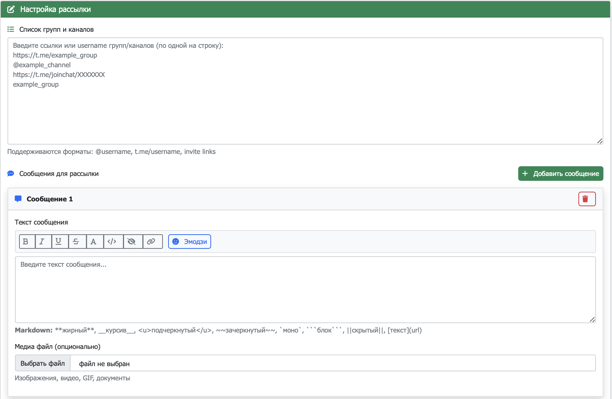
РАЗДЕЛ 1: СПИСОК ГРУПП И КАНАЛОВ
1.1. ПОЛЕ "СПИСОК ГРУПП И КАНАЛОВ" (📋)
ОПИСАНИЕ:
Ввод списка групп и каналов для рассылки. Поддерживаются различные форматы ссылок и username.
ПОДДЕРЖИВАЕМЫЕ ФОРМАТЫ:
- @username - username группы или канала
- https://t.me/username - полная ссылка
- https://t.me/joinchat/XXXXXXX - invite ссылка
- username - просто username без @
ФОРМАТ ВВОДА:
- Каждая группа/канал на новой строке
- Можно комбинировать разные форматы
- Пустые строки игнорируются
- Автоматическая обработка всех форматов
ПРИМЕР:
- https://t.me/example_group
- @example_channel
- https://t.me/joinchat/XXXXXXX
- example_group
РЕКОМЕНДАЦИИ:
- ✓ Используйте список из файла (скопируйте и вставьте)
- ✓ Проверяйте корректность ссылок перед рассылкой
- ✓ Убедитесь, что аккаунты состоят в группах
- ✓ Можно использовать большие списки (сотни групп)
- ✓ Система автоматически обработает все форматы
- ✓ Для каналов убедитесь, что аккаунты имеют права на публикацию
РАЗДЕЛ 2: СОЗДАНИЕ СООБЩЕНИЙ
2.1. КНОПКА "ДОБАВИТЬ СООБЩЕНИЕ" (➕)
ОПИСАНИЕ:
Добавление нового сообщения в список для рассылки. Можно создать несколько сообщений, которые будут отправляться с ротацией между аккаунтами.
ИСПОЛЬЗОВАНИЕ:
- Нажмите кнопку "Добавить сообщение"
- Новое сообщение появится в списке
- Заполните текст и при необходимости добавьте медиа
РОТАЦИЯ СООБЩЕНИЙ:
- Первый аккаунт отправляет первое сообщение
- Второй аккаунт отправляет второе сообщение
- И так далее по кругу
- Если сообщений меньше, чем аккаунтов, ротация продолжается с начала
ВОЗМОЖНОСТИ:
- Неограниченное количество сообщений
- Каждое сообщение отправляется отдельно
- Ротация между аккаунтами
- Можно добавить медиафайл к каждому сообщению
РЕКОМЕНДАЦИИ:
- ✓ Создавайте несколько сообщений для разнообразия
- ✓ Чередуйте текстовые и медиа-сообщения
- ✓ Используйте разные форматы сообщений
- ✓ Тестируйте на небольшом количестве групп
- ✓ Ротация сообщений делает рассылку более естественной
2.2. КНОПКА "УДАЛИТЬ СООБЩЕНИЕ" (🗑️)
ОПИСАНИЕ:
Удаление сообщения из списка рассылки. Минимум должно остаться одно сообщение.
ИСПОЛЬЗОВАНИЕ:
- Нажмите кнопку "Удалить" в заголовке сообщения
- Сообщение будет удалено из списка
- Минимум одно сообщение должно остаться
РЕКОМЕНДАЦИИ:
- ✓ Удаляйте ненужные или ошибочные сообщения
- ✓ Проверяйте список перед началом рассылки
- ✓ Оставляйте хотя бы одно сообщение
РАЗДЕЛ 3: ФОРМАТИРОВАНИЕ ТЕКСТА
3.1. ПАНЕЛЬ ФОРМАТИРОВАНИЯ
ОПИСАНИЕ:
Панель инструментов для форматирования текста сообщений. Поддерживает различные стили форматирования Telegram.
ДОСТУПНЫЕ ИНСТРУМЕНТЫ:
- Жирный (B) - Формат: **текст**
- Курсив (I) - Формат: __текст__
- Подчеркнутый (U) - Формат: текст
- Зачеркнутый (S) - Формат: ~~текст~~
- Моноширный (Font) - Формат: `текст`
- Код блок (Code) - Формат: ```текст```
- Скрытый текст / Спойлер (Eye-slash) - Формат: ||текст||
- Ссылка (Link) - Формат: [текст](url)
ИСПОЛЬЗОВАНИЕ:
- Выделите текст в поле сообщения
- Нажмите нужную кнопку форматирования
- Форматирование применится автоматически
РЕКОМЕНДАЦИИ:
- ✓ Используйте форматирование для выделения важной информации
- ✓ Комбинируйте разные стили (но не переусердствуйте)
- ✓ Проверяйте форматирование перед отправкой
- ✓ Используйте спойлеры для скрытия конфиденциальной информации
3.2. КНОПКА "ЭМОДЗИ" (😊)
ОПИСАНИЕ:
Открытие панели с популярными эмодзи для вставки в сообщение.
ВОЗМОЖНОСТИ:
- Большая коллекция популярных эмодзи
- Категории: смайлы, жесты, сердца, природа, еда, напитки, активности и др.
- Клик по эмодзи вставляет его в позицию курсора
ИСПОЛЬЗОВАНИЕ:
- Нажмите кнопку "Эмодзи"
- Панель эмодзи откроется под полем сообщения
- Кликните на нужный эмодзи
- Эмодзи вставится в позицию курсора
- Повторный клик по кнопке скрывает панель
РЕКОМЕНДАЦИИ:
- ✓ Используйте эмодзи для эмоциональности сообщений
- ✓ Не переусердствуйте с количеством эмодзи
- ✓ Выбирайте эмодзи, соответствующие контексту
- ✓ Эмодзи делают сообщения более привлекательными
РАЗДЕЛ 4: МЕДИАФАЙЛЫ
4.1. ПОЛЕ "МЕДИА ФАЙЛ" (📎)
ОПИСАНИЕ:
Добавление медиафайла к сообщению. Каждое сообщение может содержать один медиафайл.
ПОДДЕРЖИВАЕМЫЕ ФОРМАТЫ:
- Изображения: JPG, PNG, GIF, WEBP и другие
- Видео: MP4, AVI, MOV и другие
- GIF анимации
- Документы: PDF, ZIP и другие
ИСПОЛЬЗОВАНИЕ:
- Нажмите кнопку "Выбрать файл" или "Обзор"
- Выберите файл на компьютере
- Файл будет прикреплен к сообщению
- При отправке файл будет отправлен вместе с текстом
ОГРАНИЧЕНИЯ:
- Один файл на сообщение
- Размер файла ограничен возможностями Telegram
- Рекомендуется использовать файлы до 50 МБ
РЕКОМЕНДАЦИИ:
- ✓ Используйте качественные изображения
- ✓ Оптимизируйте размер файлов перед отправкой
- ✓ Проверяйте формат файла перед добавлением
- ✓ Можно отправлять только текст без медиа
- ✓ Медиафайл отправляется вместе с текстом (caption)
РАЗДЕЛ 5: НАСТРОЙКИ РАССЫЛКИ
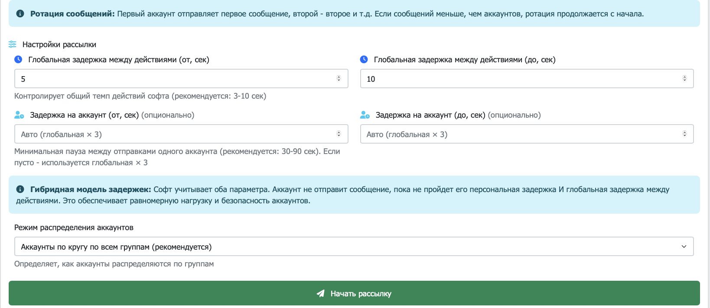
5.1. ГЛОБАЛЬНАЯ ЗАДЕРЖКА МЕЖДУ ДЕЙСТВИЯМИ (⏱️)
ОПИСАНИЕ:
Настройка глобальной задержки между действиями софта. Контролирует общий темп работы системы.
ПАРАМЕТРЫ:
- От (сек) - минимальная глобальная задержка в секундах
- До (сек) - максимальная глобальная задержка в секундах
- Диапазон: от 1 до 300 секунд
- Значение по умолчанию: 5-10 секунд
ГИБРИДНАЯ МОДЕЛЬ:
- Софт учитывает оба параметра (глобальную и per-account задержку)
- Аккаунт не отправит сообщение, пока не пройдет:
- Его персональная задержка (per-account)
- И глобальная задержка между действиями
- Оба условия должны быть выполнены перед отправкой
РЕКОМЕНДАЦИИ:
- ✓ Рекомендуется: 3-10 секунд для избежания блокировки
- ✓ Минимальная задержка: не менее 1 секунды
- ✓ Для больших рассылок: 5-15 секунд
- ✓ Для безопасности: 10-20 секунд
- ✓ Случайная задержка имитирует человеческое поведение
- ⚠️ Слишком маленькая задержка может привести к блокировке
5.2. ЗАДЕРЖКА НА АККАУНТ (👤⏱️)
ОПИСАНИЕ:
Настройка персональной задержки для каждого аккаунта. Контролирует частоту использования конкретного аккаунта.
ПАРАМЕТРЫ:
- От (сек) - минимальная задержка на аккаунт в секундах
- До (сек) - максимальная задержка на аккаунт в секундах
- Диапазон: от 1 до 600 секунд
- Опционально: если пусто, используется глобальная × 3
АВТОМАТИЧЕСКИЙ РАСЧЕТ:
- Если поле пустое, используется формула: глобальная задержка × 3
- Например: глобальная 5-10 сек → per-account 15-30 сек
- Можно задать вручную для точного контроля
РЕКОМЕНДАЦИИ:
- ✓ Рекомендуется: 30-90 секунд между отправками одного аккаунта
- ✓ Для безопасности: 60-120 секунд
- ✓ Для больших рассылок: 45-90 секунд
- ✓ Можно оставить пустым для автоматического расчета
- ✓ Персональная задержка защищает аккаунты от перегрузки
- ⚠️ Слишком маленькая задержка может привести к блокировке аккаунта
5.3. РЕЖИМ РАСПРЕДЕЛЕНИЯ АККАУНТОВ (🔄)
ОПИСАНИЕ:
Выбор режима распределения аккаунтов по группам. Определяет, как аккаунты будут работать с группами.
ДОСТУПНЫЕ РЕЖИМЫ:
- 1. "Аккаунты по кругу по всем группам" (рекомендуется)
- Каждый аккаунт отправляет сообщение в следующую группу по кругу
- Равномерное распределение нагрузки
- Максимальная эффективность
- Пример: Аккаунт 1 → Группа 1, Аккаунт 2 → Группа 2, Аккаунт 3 → Группа 3, Аккаунт 1 → Группа 4, Аккаунт 2 → Группа 5...
- 2. "Один аккаунт → все группы"
- Один аккаунт отправляет сообщения во все группы последовательно
- Затем следующий аккаунт отправляет во все группы
- Подходит для небольших списков групп
- Пример: Аккаунт 1 → все группы, затем Аккаунт 2 → все группы...
- 3. "Все аккаунты → одна группа"
- Все аккаунты отправляют сообщения в одну группу
- Затем переходят к следующей группе
- Подходит для важных групп
- Пример: Все аккаунты → Группа 1, затем все аккаунты → Группа 2...
- 4. "1 аккаунт = 1 группа (фикс)"
- Каждый аккаунт закреплен за одной группой
- Один аккаунт работает только с одной группой
- Подходит для равного количества аккаунтов и групп
- Пример: Аккаунт 1 → Группа 1, Аккаунт 2 → Группа 2...
РЕКОМЕНДАЦИИ:
- ✓ Используйте "Аккаунты по кругу" для большинства случаев
- ✓ "Один аккаунт → все группы" для небольших списков
- ✓ "Все аккаунты → одна группа" для важных групп
- ✓ "1 аккаунт = 1 группа" для равного распределения
- ✓ Выбор режима зависит от количества аккаунтов и групп
РАЗДЕЛ 6: УПРАВЛЕНИЕ РАССЫЛКОЙ
6.1. КНОПКА "НАЧАТЬ РАССЫЛКУ" (✈️)
ОПИСАНИЕ:
Запуск процесса рассылки сообщений в группы через выбранные аккаунты.
ПРОВЕРКИ ПЕРЕД ЗАПУСКОМ:
- Наличие списка групп
- Наличие хотя бы одного сообщения
- Выбор хотя бы одного аккаунта
- Корректность задержек
ПОДТВЕРЖДЕНИЕ:
- Перед запуском показывается диалог подтверждения
- Отображается информация:
- Количество групп
- Количество сообщений
- Количество аккаунтов
- Задержка (от-до)
- Режим распределения
ПРОЦЕСС:
- Валидация всех параметров
- Загрузка сообщений и медиафайлов
- Распределение групп между аккаунтами по выбранному режиму
- Последовательная отправка с задержками
- Отслеживание прогресса в реальном времени
РЕЗУЛЬТАТЫ:
- Успешно отправленные сообщения
- Ошибки отправки
- Детальный отчет о рассылке
- Возможность скачать отчет
РЕКОМЕНДАЦИИ:
- ✓ Проверьте все параметры перед запуском
- ✓ Убедитесь, что выбраны активные аккаунты
- ✓ Начните с небольшого списка для тестирования
- ✓ Следите за прогрессом в реальном времени
- ✓ Не закрывайте страницу во время рассылки
- ✓ Проверьте диалог подтверждения перед запуском
6.2. КНОПКА "ОСТАНОВИТЬ РАССЫЛКУ" (⏹️)
ОПИСАНИЕ:
Остановка текущей рассылки. Останавливает отправку новых сообщений, но уже отправленные сообщения остаются отправленными.
ИСПОЛЬЗОВАНИЕ:
- Нажмите кнопку "Остановить рассылку"
- Подтвердите остановку в диалоге
- Рассылка остановится после текущего сообщения
- Будет сгенерирован отчет о частично выполненной рассылке
РЕЗУЛЬТАТЫ ПОСЛЕ ОСТАНОВКИ:
- Количество успешно отправленных сообщений
- Количество ошибок
- Ссылка на скачивание отчета
- Статистика по аккаунтам
РЕКОМЕНДАЦИИ:
- ✓ Используйте при необходимости прервать рассылку
- ✓ Отчет будет доступен даже при остановке
- ✓ Можно возобновить рассылку позже с оставшимися группами
- ✓ Проверьте причину остановки перед повторным запуском
РАЗДЕЛ 7: СТАТИСТИКА И ПРОГРЕСС
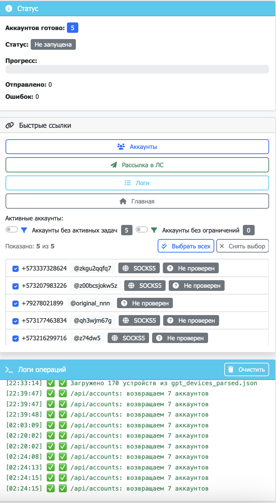
7.1. СЧЕТЧИК "АККАУНТОВ ГОТОВО" (👥)
ОПИСАНИЕ:
Отображение количества активных (авторизованных) аккаунтов, готовых к работе.
ОБНОВЛЕНИЕ:
- Обновляется при загрузке страницы
- Показывает актуальное количество активных аккаунтов
- Синий бейдж для визуального выделения
РЕКОМЕНДАЦИИ:
- ✓ Следите за количеством готовых аккаунтов
- ✓ Убедитесь, что достаточно аккаунтов для рассылки
- ✓ Больше аккаунтов = быстрее рассылка
7.2. СЧЕТЧИК "СТАТУС" (📊)
ОПИСАНИЕ:
Отображение текущего статуса рассылки.
СТАТУСЫ:
- "Не запущена" (серый) - рассылка не активна
- "Активна" (зеленый) - рассылка выполняется
ОБНОВЛЕНИЕ:
- Обновляется каждые 3 секунды во время рассылки
- Показывает актуальный статус
- Цветной бейдж для визуального выделения
РЕКОМЕНДАЦИИ:
- ✓ Следите за статусом для контроля процесса
- ✓ Зеленый статус означает активную рассылку
- ✓ Серый статус означает, что рассылка не запущена
7.3. ПРОГРЕСС-БАР (📈)
ОПИСАНИЕ:
Визуальное отображение прогресса рассылки в виде прогресс-бара с процентом.
ОТОБРАЖАЕМАЯ ИНФОРМАЦИЯ:
- Процент выполнения рассылки
- Обновляется в реальном времени
- Показывает точный прогресс
ОБНОВЛЕНИЕ:
- Обновляется каждые 3 секунды во время рассылки
- Показывает процент от общего количества групп
- Автоматически сбрасывается при завершении
РЕКОМЕНДАЦИИ:
- ✓ Следите за прогрессом для оценки времени
- ✓ Прогресс обновляется в реальном времени
- ✓ Используйте для планирования времени
7.4. СЧЕТЧИК "ОТПРАВЛЕНО" (✅)
ОПИСАНИЕ:
Отображение количества успешно отправленных сообщений в реальном времени.
ОБНОВЛЕНИЕ:
- Обновляется каждые 3 секунды во время рассылки
- Показывает актуальное количество
- Зеленый цвет для визуального выделения
РЕКОМЕНДАЦИИ:
- ✓ Следите за счетчиком для контроля прогресса
- ✓ Высокий процент успешных отправок - хороший знак
- ✓ Низкий процент может указывать на проблемы
7.5. СЧЕТЧИК "ОШИБОК" (❌)
ОПИСАНИЕ:
Отображение количества ошибок при отправке сообщений в реальном времени.
ОБНОВЛЕНИЕ:
- Обновляется каждые 3 секунды во время рассылки
- Показывает актуальное количество ошибок
- Красный цвет для визуального выделения
ВОЗМОЖНЫЕ ПРИЧИНЫ ОШИБОК:
- Аккаунт не состоит в группе
- Аккаунт не имеет прав на публикацию
- Группа не существует или недоступна
- Аккаунт заблокирован Telegram
- Проблемы с подключением
- Превышены лимиты отправки
РЕКОМЕНДАЦИИ:
- ✓ Анализируйте причины ошибок
- ✓ Следите за логами
- ✓ Удаляйте проблемные группы из списка
- ✓ Высокий процент ошибок требует внимания
- ✓ Убедитесь, что аккаунты состоят в группах
РАЗДЕЛ 8: ВЫБОР АККАУНТОВ
8.1. ФИЛЬТР "АККАУНТЫ БЕЗ АКТИВНЫХ ЗАДАЧ" (🔍)
ОПИСАНИЕ:
Фильтрация аккаунтов, у которых нет активных задач. Позволяет использовать только свободные аккаунты для рассылки.
ИСПОЛЬЗОВАНИЕ:
- Установите переключатель "Аккаунты без активных задач"
- Список аккаунтов обновится автоматически
- Показывается количество доступных аккаунтов
РЕКОМЕНДАЦИИ:
- ✓ Используйте для избежания конфликтов с другими задачами
- ✓ Освобождает аккаунты для других модулей
- ✓ Помогает организовать работу аккаунтов
- ✓ Комбинируйте с другими фильтрами
8.2. ФИЛЬТР "АККАУНТЫ БЕЗ ОГРАНИЧЕНИЙ" (✅)
ОПИСАНИЕ:
Фильтрация аккаунтов без ограничений (не заморожены, не в спамблоке, не заблокированы). Показывает только полностью рабочие аккаунты.
ИСПОЛЬЗОВАНИЕ:
- Установите переключатель "Аккаунты без ограничений"
- Список аккаунтов обновится автоматически
- Показывается количество доступных аккаунтов
РЕКОМЕНДАЦИИ:
- ✓ Используйте для максимальной эффективности
- ✓ Избегает использования проблемных аккаунтов
- ✓ Увеличивает процент успешных отправок
- ✓ Комбинируйте с фильтром "без задач"
8.3. КНОПКА "ВЫБРАТЬ ВСЕХ" (✓✓)
ОПИСАНИЕ:
Выбор всех видимых (отфильтрованных) аккаунтов для рассылки.
ИСПОЛЬЗОВАНИЕ:
- Нажмите кнопку "Выбрать всех"
- Все видимые аккаунты будут выбраны
- Учитываются активные фильтры
РЕКОМЕНДАЦИИ:
- ✓ Используйте для быстрого выбора всех аккаунтов
- ✓ Учитывайте фильтры перед выбором
- ✓ Проверяйте количество выбранных аккаунтов
8.4. КНОПКА "СНЯТЬ ВЫБОР" (✖️)
ОПИСАНИЕ:
Снятие выбора со всех аккаунтов. Позволяет начать выбор заново.
ИСПОЛЬЗОВАНИЕ:
- Нажмите кнопку "Снять выбор"
- Выбор со всех аккаунтов будет снят
- Можно выбрать аккаунты вручную
РЕКОМЕНДАЦИИ:
- ✓ Используйте для сброса выбора
- ✓ Полезно при изменении фильтров
- ✓ Можно выбрать аккаунты вручную после сброса
8.5. ВЫБОР АККАУНТОВ (Чекбоксы)
ОПИСАНИЕ:
Ручной выбор конкретных аккаунтов для рассылки. Можно выбрать аккаунты индивидуально или использовать массовое выделение.
ВОЗМОЖНОСТИ:
- Одиночный клик - выбор/снятие выбора аккаунта
- Shift+клик - выбор диапазона аккаунтов
- Клик по строке - выбор аккаунта
- Чекбокс - выбор аккаунта
ИНФОРМАЦИЯ ОБ АККАУНТЕ:
- Номер телефона
- Username (если есть)
- Тип прокси (если настроен)
- Статус спамблока (цветной бейдж)
- Активные задачи (если есть)
СТАТУСЫ СПАМБЛОКА:
- ✅ "Нет" (зеленый) - аккаунт полностью активен
- ❄️ "Заморожен" (оранжевый) - временные ограничения
- 🚫 "Спамблок" (красный) - вечный спамблок
- 🌍 "ГеоСпамБлок" (синий) - блокировка при регистрации
- ⚠️ "Не проверен" (серый) - статус не проверен
- ❌ "Ошибка" (красный) - ошибка проверки
РЕКОМЕНДАЦИИ:
- ✓ Выбирайте только активные аккаунты без ограничений
- ✓ Используйте Shift+клик для быстрого выбора диапазона
- ✓ Проверяйте статус спамблока перед выбором
- ✓ Избегайте аккаунтов с активными задачами
- ✓ Распределяйте нагрузку между аккаунтами
РАЗДЕЛ 9: ЛОГИ ОПЕРАЦИЙ
9.1. ПАНЕЛЬ ЛОГОВ (📋)
ОПИСАНИЕ:
Отображение логов операций рассылки в реальном времени.
РЕКОМЕНДАЦИИ:
- ✓ Следите за логами
9.2. КНОПКА "ОЧИСТИТЬ" (🗑️)
ОПИСАНИЕ:
Очистка всех логов операций.
РАЗДЕЛ 10: РЕЗУЛЬТАТЫ РАССЫЛКИ
10.1. ПАНЕЛЬ "РЕЗУЛЬТАТЫ РАССЫЛКИ" (📊)
ОПИСАНИЕ:
Отображение результатов рассылки после завершения или остановки.
ОТОБРАЖАЕМАЯ ИНФОРМАЦИЯ:
- Всего групп - общее количество групп в списке
- Успешно - количество успешно отправленных сообщений
- Ошибок - количество ошибок при отправке
ВИЗУАЛИЗАЦИЯ:
- Каждая метрика в отдельной карточке
- Цветовое выделение (синий, зеленый, красный)
- Крупные числа для быстрого восприятия
ДОСТУПНОСТЬ:
- Появляется автоматически после завершения рассылки
- Скрывается во время активной рассылки
- Показывается при остановке рассылки
РЕКОМЕНДАЦИИ:
- ✓ Анализируйте результаты для улучшения
- ✓ Сравнивайте успешные и неуспешные отправки
- ✓ Используйте для планирования будущих рассылок
- ✓ Обращайте внимание на процент ошибок
10.2. КНОПКА "СКАЧАТЬ ОТЧЕТ" (📥)
ОПИСАНИЕ:
Скачивание детального отчета о рассылке в формате файла.
ДОСТУПНОСТЬ:
- Появляется после завершения или остановки рассылки
- Содержит полную информацию о рассылке
- Включает список успешных и неуспешных отправок
СОДЕРЖИМОЕ ОТЧЕТА:
- Общая статистика (успешно/ошибок)
- Список успешно отправленных сообщений
- Список ошибок с деталями
- Информация по каждому аккаунту
- Информация по каждой группе
- Временные метки отправки
РЕКОМЕНДАЦИИ:
- ✓ Скачивайте отчет после каждой рассылки
- ✓ Сохраняйте отчеты для анализа
- ✓ Используйте для улучшения будущих рассылок
- ✓ Анализируйте причины ошибок
- ✓ Отчет помогает понять эффективность рассылки
РАЗДЕЛ 11: БЫСТРЫЕ ССЫЛКИ
11.1. ПАНЕЛЬ "БЫСТРЫЕ ССЫЛКИ" (🔗)
ОПИСАНИЕ:
Быстрый доступ к другим модулям и разделам системы.
ДОСТУПНЫЕ ССЫЛКИ:
- Аккаунты - переход в менеджер аккаунтов
- Рассылка в ЛС - переход в модуль рассылки в личные сообщения
- Логи - переход в раздел логов системы
- Главная - переход на главную страницу (Hub)
РЕКОМЕНДАЦИИ:
- ✓ Используйте для быстрой навигации
- ✓ Удобно переключаться между модулями
- ✓ Помогает организовать работу
Парсер
Этот модуль собирает участников из групп Telegram для дальнейшей работы (рассылки, инвайты и т.п.).
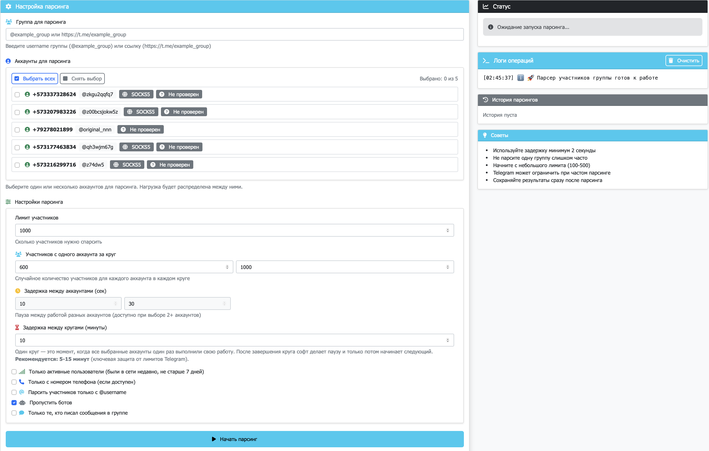
1. ГРУППА
1.1. ПОЛЕ "ГРУППА ДЛЯ ПАРСИНГА"
ОПИСАНИЕ:
Введите @username группы или полную ссылку https://t.me/...
РЕКОМЕНДАЦИИ:
- ✓ Рекомендуется парсить открытые / знакомые вам чаты
- ✓ Не злоупотребляйте запросами
- ✓ Проверяйте корректность ссылки перед запуском
2. АККАУНТЫ ДЛЯ ПАРСИНГА
2.1. СПИСОК АККАУНТОВ
ОПИСАНИЕ:
Выберите один или несколько авторизованных аккаунтов, которые будут парсить участников. При нескольких аккаунтах нагрузка распределяется между ними по кругу.
2.2. КНОПКИ "ВЫБРАТЬ ВСЕХ / СНЯТЬ ВЫБОР"
ОПИСАНИЕ:
Быстро выделить или снять выделение со всех доступных аккаунтов.
РЕКОМЕНДАЦИИ:
- ✓ Для небольших задач (до 2–3 тыс. участников) достаточно 1 аккаунта
- ✓ Для больших задач подключайте 2–3 аккаунта, но не все сразу, чтобы не ловить лимиты
3. ОСНОВНЫЕ НАСТРОЙКИ ПАРСИНГА
3.1. ЛИМИТ УЧАСТНИКОВ
ОПИСАНИЕ:
Сколько всего участников нужно собрать.
РЕКОМЕНДАЦИИ:
- ✓ Пример: 200–1000 участников — безопасный старт
- ✓ Не ставьте лимиты сильно выше реальной задачи
- ✓ Если лимит общий = 200, а «с аккаунта за круг» = 600–1000 — софт сам обрежет до 200
3.2. УЧАСТНИКОВ С ОДНОГО АККАУНТА ЗА КРУГ (от / до)
ОПИСАНИЕ:
Сколько участников один аккаунт берёт за одну «итерацию» (ОДИН запрос к API). Значение выбирается случайно в этом диапазоне.
ПРИМЕР:
- От 600 до 1000
РЕКОМЕНДАЦИИ:
- ✓ Используйте разумные значения для избежания лимитов
- ✓ Софт автоматически обрежет до общего лимита, если нужно
4. ЗАДЕРЖКИ
4.1. ЗАДЕРЖКА МЕЖДУ АККАУНТАМИ (сек) (от / до)
ОПИСАНИЕ:
Пауза между работой разных аккаунтов внутри одного круга. Работает, когда выбрано 2+ аккаунтов.
РЕКОМЕНДАЦИИ:
- ✓ Рекомендуется: 10–30 секунд
- ✓ Используйте для распределения нагрузки между аккаунтами
4.2. ЗАДЕРЖКА МЕЖДУ КРУГАМИ (минуты)
ОПИСАНИЕ:
Пауза между циклами, когда все аккаунты один раз отработали. Это главный защитный механизм от лимитов Telegram.
РЕКОМЕНДАЦИИ:
- ✓ Рекомендуется: 5–15 минут
- ✓ Это основной механизм защиты от блокировок
- ✓ Не уменьшайте слишком сильно, чтобы не получить лимиты
5. РЕЖИМ "ТОЛЬКО ТЕ, КТО ПИСАЛ СООБЩЕНИЯ"
5.1. ЧЕКБОКС "ТОЛЬКО ТЕ, КТО ПИСАЛ СООБЩЕНИЯ В ГРУППЕ"
ОПИСАНИЕ:
В этом режиме парсер сначала анализирует сообщения, собирает авторов, и возвращает только тех, кто реально писал.
ПРИ ВКЛЮЧЕНИИ ПОЯВЛЯЮТСЯ ДОПОЛНИТЕЛЬНЫЕ ПОЛЯ:
- «Глубина проверки сообщений (общая)»
- Сколько последних сообщений смотреть по всему чату (например, 3000)
- «Кол-во сообщений с одного аккаунта за круг» (от / до)
- Сколько сообщений за один раз проверяет один аккаунт
- Софт идёт по сообщениям подряд, без пропусков (акк1 — первые сообщения диапазона, акк2 — следующие и т.д.)
РЕКОМЕНДАЦИИ:
- ✓ Используйте этот режим, если нужны более «живые» пользователи, которые что‑то писали в чате
- ✓ Не ставьте слишком большую глубину на маленьких группах, чтобы не тратить лишние запросы
6. ФИЛЬТРЫ
ОПИСАНИЕ:
Все фильтры можно комбинировать. В итоговый список попадают только те, кто подходит под ВСЕ выбранные условия.
6.1. "ТОЛЬКО АКТИВНЫЕ ПОЛЬЗОВАТЕЛИ (были в сети недавно, не старше 7 дней)"
ОПИСАНИЕ:
Оставляет только тех, кто был онлайн не позднее 7 дней назад. Убирает статусы «LastWeek» и «LastMonth», а также слишком старые `LastSeenOffline`.
6.2. "ТОЛЬКО С НОМЕРОМ ТЕЛЕФОНА (если доступен)"
ОПИСАНИЕ:
Оставляет только тех, у кого есть открытый телефон. Телефон будет записан в формате `+7...`.
6.3. "ПАРСИТЬ УЧАСТНИКОВ ТОЛЬКО С @username"
ОПИСАНИЕ:
Оставляет только тех, у кого есть `username`. Работает и в обычном режиме, и в режиме «Только те, кто писал сообщения».
6.4. "ПРОПУСТИТЬ БОТОВ"
ОПИСАНИЕ:
Убирает все аккаунты, у которых `bot = True`.
ПРИМЕРЫ КОМБИНАЦИЙ:
- Только реальные люди с username:
- Включить: `Пропустить ботов` + `Парсить участников только с @username`
- Активные лиды для рассылки в ЛС:
- Включить: `Только активные` + `Только с номером телефона` (опционально) + `Пропустить ботов`
7. КАК РАБОТАЕТ ПАРСИНГ (КРАТКО)
ПРОЦЕСС:
- Вы выбираете группу, аккаунты, лимиты и фильтры
- Софт по кругу обходит аккаунты и делает по одному запросу к API на аккаунт за круг, соблюдая задержки
- Сначала собираются «сырые» участники из Telegram
- Затем к каждому участнику применяются все включённые фильтры
- В UI показываются:
- Всего спарсено — сколько пользователей прошло все фильтры
- С username — сколько с `@username`
- С телефоном — сколько с номером
- Результаты можно сразу выгрузить в CSV / TXT / JSON
РЕКОМЕНДАЦИИ ПО БЕЗОПАСНОСТИ
- ✓ Не запускайте парсер слишком часто по одной и той же группе
- ✓ Держите разумные задержки между кругами (5–15 минут)
- ✓ Не включайте все фильтры сразу без необходимости — это может сильно уменьшить итоговое количество
- ✓ Всегда сначала протестируйте на маленьком лимите (100–200 участников), прежде чем запускать большие задачи
Парсер ЛС
Этот модуль собирает пользователей из личных сообщений (диалогов) выбранных аккаунтов Telegram. Парсер проходит по всем диалогам аккаунта и извлекает контакты, с которыми есть история переписки.
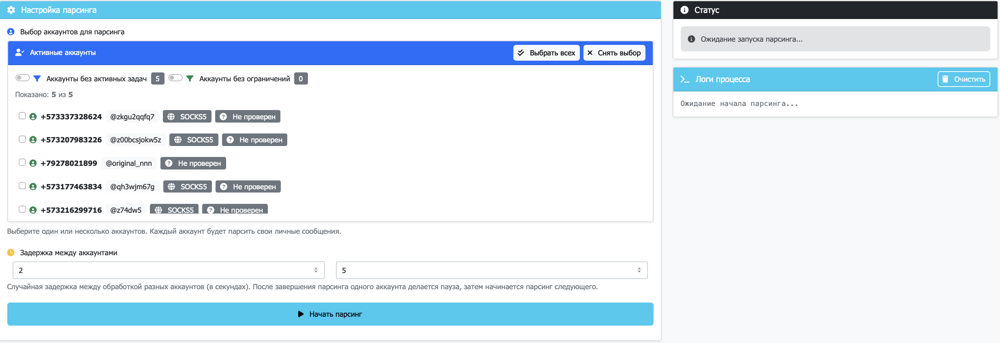
ПРИНЦИП РАБОТЫ
- Вы выбираете один или несколько аккаунтов для парсинга
- Софт подключается к каждому аккаунту и получает список всех диалогов (личных сообщений)
- Из каждого диалога извлекается информация о пользователе:
- User ID (обязательно)
- Username (если есть)
- Автоматически пропускаются:
- Боты
- Сам аккаунт (себя)
- Группы и каналы (только личные диалоги с пользователями)
- Результаты группируются и показываются в интерфейсе
- После завершения можно скачать результаты в формате TXT
НАСТРОЙКИ
1. ВЫБОР АККАУНТОВ ДЛЯ ПАРСИНГА
1.1. СПИСОК АККАУНТОВ
ОПИСАНИЕ:
Выберите один или несколько авторизованных аккаунтов, которые будут парсить свои личные сообщения. Каждый аккаунт парсит только свои диалоги (тех, с кем он переписывался).
1.2. КНОПКИ "ВЫБРАТЬ ВСЕХ / СНЯТЬ ВЫБОР"
ОПИСАНИЕ:
Быстро выделить или снять выделение со всех доступных аккаунтов.
РЕКОМЕНДАЦИИ:
- ✓ Для одного аккаунта парсинг обычно занимает несколько секунд или минут (зависит от количества диалогов)
- ✓ При выборе нескольких аккаунтов они обрабатываются последовательно с задержкой между ними
2. ЗАДЕРЖКА МЕЖДУ АККАУНТАМИ
2.1. ПОЛЯ "ОТ (СЕК)" / "ДО (СЕК)"
ОПИСАНИЕ:
Случайная задержка между обработкой разных аккаунтов (в секундах). После завершения парсинга одного аккаунта делается пауза, затем начинается парсинг следующего.
ПО УМОЛЧАНИЮ:
- 2-5 секунд
РЕКОМЕНДАЦИИ:
- ✓ Для 1-2 аккаунтов можно оставить минимальные задержки (2-5 сек)
- ✓ При большом количестве аккаунтов (5+) увеличьте задержку до 5-10 секунд для безопасности
РЕЗУЛЬТАТЫ ПАРСИНГА
После завершения парсинга отображаются статистика:
- Всего найдено — общее количество уникальных пользователей из всех диалогов
- С username — сколько пользователей имеют @username
- Только ID — сколько пользователей без username (только ID)
ПРИМЕЧАНИЕ:
- Если один и тот же пользователь есть в диалогах нескольких аккаунтов, он считается один раз (уникальные пользователи)
- Результаты можно скачать в формате TXT для дальнейшего использования
КАК РАБОТАЕТ ПАРСИНГ (ПОШАГОВО)
- Вы выбираете аккаунты и настраиваете задержку
- Нажимаете «Начать парсинг»
- Софт последовательно подключается к каждому выбранному аккаунту:
- Получает список всех диалогов аккаунта
- Проходит по каждому диалогу
- Извлекает информацию о пользователе (ID, username)
- Пропускает ботов, группы, каналы и самого себя
- После обработки одного аккаунта делается пауза (задержка)
- Затем обрабатывается следующий аккаунт
- Все найденные пользователи собираются в общий список (без дублей)
- По завершении показываются результаты и кнопка «Скачать результаты (TXT)»
ПРОГРЕСС ПАРСИНГА
Во время работы отображается:
- Прогресс-бар с процентом выполнения (обработано аккаунтов / всего аккаунтов)
- Статистика в реальном времени:
- Всего найдено
- С username
- Только ID
- Логи процесса с информацией о каждом этапе
После завершения блок прогресса автоматически скрывается, остаются только финальные результаты.
РЕКОМЕНДАЦИИ ПО БЕЗОПАСНОСТИ
- ✓ Не запускайте парсинг слишком часто с одних и тех же аккаунтов
- ✓ Используйте разумные задержки между аккаунтами (особенно при большом количестве)
- ✓ Парсинг личных сообщений — относительно безопасная операция, но не злоупотребляйте
- ✓ Если у аккаунта очень много диалогов (тысячи), парсинг может занять больше времени
ОТЛИЧИЯ ОТ ПАРСЕРА УЧАСТНИКОВ
- Парсер участников собирает пользователей из групп/каналов
- Парсер ЛС собирает пользователей из личных диалогов аккаунта
- В парсере ЛС нет фильтров (активность, телефон и т.п.) — собираются все контакты из диалогов
- Парсер ЛС работает быстрее, так как не нужно делать запросы к группам
ПРИМЕНЕНИЕ
Парсер ЛС полезен для:
- Сбора контактов из личных переписок для рассылок
- Создания базы контактов из диалогов аккаунта
- Анализа списка людей, с которыми велась переписка
- Экспорта контактов для дальнейшей работы в других модулях
Фильтрация базы
Модуль "Фильтрация базы" предназначен для фильтрации пользователей по признакам профиля (бот/username/телефон/фото) и формирования готовых файлов .txt и .csv.
⚠️ ВАЖНО: Фильтры по боту/фото/телефону требуют запросов к Telegram и могут ловить FloodWait. Для больших баз используйте несколько аккаунтов.
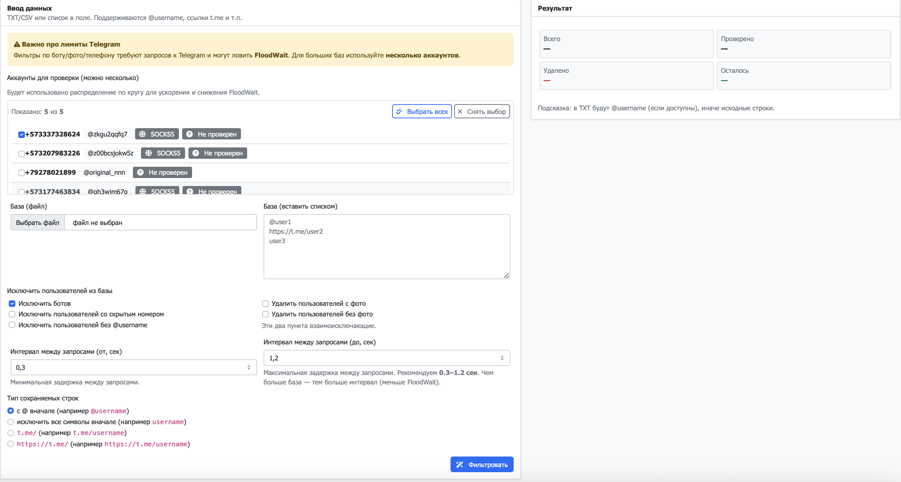
РАЗДЕЛ 1: ВВОД ДАННЫХ
1.1. ПОЛЕ "БАЗА (ФАЙЛ)" (📁)
ОПИСАНИЕ:
Загрузка базы пользователей из файла.
ПОДДЕРЖИВАЕМЫЕ ФОРМАТЫ:
- .txt - текстовый файл
- .csv - табличный файл
ФОРМАТ ДАННЫХ:
- @username
- https://t.me/username
- t.me/username
- username (без символов)
РЕКОМЕНДАЦИИ:
- ✓ Используйте файлы с одним пользователем на строку
- ✓ Поддерживаются различные форматы ссылок
- ✓ Система автоматически нормализует данные
1.2. ПОЛЕ "БАЗА (ВСТАВИТЬ СПИСКОМ)" (📝)
ОПИСАНИЕ:
Ввод базы пользователей в текстовое поле.
ФОРМАТ ВВОДА:
- Каждый пользователь на новой строке
- Поддерживаются @username, ссылки t.me и т.п.
- Можно комбинировать разные форматы
ПРИМЕР:
- @user1
- https://t.me/user2
- user3
РЕКОМЕНДАЦИИ:
- ✓ Используйте для небольших баз
- ✓ Можно скопировать из любого источника
- ✓ Система автоматически обработает все форматы
РАЗДЕЛ 2: ВЫБОР АККАУНТОВ
2.1. ФИЛЬТР "АККАУНТЫ БЕЗ АКТИВНЫХ ЗАДАЧ" (🔍)
ОПИСАНИЕ:
Фильтрация аккаунтов, у которых нет активных задач.
РЕКОМЕНДАЦИИ:
- ✓ Используйте для избежания конфликтов с другими задачами
2.2. ФИЛЬТР "АККАУНТЫ БЕЗ ОГРАНИЧЕНИЙ" (✅)
ОПИСАНИЕ:
Фильтрация аккаунтов без ограничений (не заморожены, не в спамблоке).
РЕКОМЕНДАЦИИ:
- ✓ Используйте для максимальной эффективности
2.3. КНОПКИ "ВЫБРАТЬ ВСЕХ" / "СНЯТЬ ВЫБОР" (✓✓ / ✖️)
ОПИСАНИЕ:
Массовый выбор или снятие выбора со всех аккаунтов.
РЕКОМЕНДАЦИИ:
- ✓ Используйте для быстрого выбора всех аккаунтов
- ✓ Нагрузка распределяется между аккаунтами по кругу
2.4. ВЫБОР АККАУНТОВ (Чекбоксы)
ОПИСАНИЕ:
Ручной выбор конкретных аккаунтов для фильтрации.
ИНФОРМАЦИЯ ОБ АККАУНТЕ:
- Номер телефона
- Username (если есть)
- Тип прокси (если настроен)
- Статус спамблока
- Активные задачи (если есть)
РЕКОМЕНДАЦИИ:
- ✓ Выбирайте только активные аккаунты без ограничений
- ✓ Используйте несколько аккаунтов для больших баз
- ✓ Распределение по кругу ускоряет процесс и снижает FloodWait
РАЗДЕЛ 3: ФИЛЬТРЫ ИСКЛЮЧЕНИЯ
3.1. ЧЕКБОКС "ИСКЛЮЧИТЬ БОТОВ" (🤖)
ОПИСАНИЕ:
Исключение ботов из результатов фильтрации.
РЕКОМЕНДАЦИИ:
- ✓ Включено по умолчанию
- ✓ Используйте для получения только реальных пользователей
3.2. ЧЕКБОКС "ИСКЛЮЧИТЬ ПОЛЬЗОВАТЕЛЕЙ СО СКРЫТЫМ НОМЕРОМ" (📱)
ОПИСАНИЕ:
Исключение пользователей со скрытым номером телефона.
РЕКОМЕНДАЦИИ:
- ✓ Используйте для получения контактов
- ✓ Требует запросов к Telegram
3.3. ЧЕКБОКС "ИСКЛЮЧИТЬ ПОЛЬЗОВАТЕЛЕЙ БЕЗ @USERNAME" (📝)
ОПИСАНИЕ:
Исключение пользователей без @username.
РЕКОМЕНДАЦИИ:
- ✓ Используйте для рассылок в ЛС
- ✓ Уменьшает количество результатов
3.4. ЧЕКБОКС "УДАЛИТЬ ПОЛЬЗОВАТЕЛЕЙ С ФОТО" (🖼️)
ОПИСАНИЕ:
Исключение пользователей с фотографией профиля.
РЕКОМЕНДАЦИИ:
- ✓ Используйте для получения пользователей без фото
- ✓ Взаимоисключающий с "Удалить пользователей без фото"
- ✓ Требует запросов к Telegram
3.5. ЧЕКБОКС "УДАЛИТЬ ПОЛЬЗОВАТЕЛЕЙ БЕЗ ФОТО" (🖼️)
ОПИСАНИЕ:
Исключение пользователей без фотографии профиля.
РЕКОМЕНДАЦИИ:
- ✓ Используйте для получения пользователей с фото
- ✓ Взаимоисключающий с "Удалить пользователей с фото"
- ✓ Требует запросов к Telegram
РАЗДЕЛ 4: НАСТРОЙКИ ЗАДЕРЖЕК
4.1. ПОЛЯ "ИНТЕРВАЛ МЕЖДУ ЗАПРОСАМИ" (⏱️)
ОПИСАНИЕ:
Случайная задержка между запросами к Telegram API.
ПАРАМЕТРЫ:
- От: 0-60 секунд (шаг 0.1)
- До: 0-60 секунд (шаг 0.1)
- Значение по умолчанию: 0.3-1.2 секунды
РЕКОМЕНДАЦИИ:
- ✓ Рекомендуется: 0.3-1.2 секунды
- ✓ Чем больше база — тем больше интервал (меньше FloodWait)
- ✓ Увеличивайте для больших баз
- ⚠️ Слишком маленькая задержка может привести к FloodWait
РАЗДЕЛ 5: ФОРМАТ ВЫВОДА
5.1. РАДИОКНОПКИ "ТИП СОХРАНЯЕМЫХ СТРОК" (📄)
ОПИСАНИЕ:
Выбор формата сохранения результатов.
ДОСТУПНЫЕ ФОРМАТЫ:
- 1. "с @ вначале" (например @username)
- Сохраняет username с символом @
- Значение по умолчанию
- 2. "исключить все символы вначале" (например username)
- Сохраняет только username без символов
- 3. "t.me/" (например t.me/username)
- Сохраняет в формате t.me/username
- 4. "https://t.me/" (например https://t.me/username)
- Сохраняет в формате полной ссылки
РЕКОМЕНДАЦИИ:
- ✓ Выбирайте формат в зависимости от дальнейшего использования
- ✓ Для рассылок в ЛС используйте формат с @
- ✓ Для ссылок используйте t.me/ или https://t.me/
РАЗДЕЛ 6: УПРАВЛЕНИЕ ФИЛЬТРАЦИЕЙ
6.1. КНОПКА "ФИЛЬТРОВАТЬ" (✨)
ОПИСАНИЕ:
Запуск процесса фильтрации базы.
ПРОВЕРКИ ПЕРЕД ЗАПУСКОМ:
- Выбор хотя бы одного аккаунта
- Наличие базы (файл или текст)
ПРОЦЕСС:
- Валидация всех параметров
- Загрузка базы
- Нормализация данных (автоматически)
- Распределение между аккаунтами по кругу
- Проверка каждого пользователя по фильтрам
- Формирование результатов
РЕКОМЕНДАЦИИ:
- ✓ Проверьте все параметры перед запуском
- ✓ Используйте несколько аккаунтов для больших баз
- ✓ Не закрывайте страницу во время фильтрации
6.2. КНОПКА "ОТМЕНА" (⏹️)
ОПИСАНИЕ:
Остановка текущей фильтрации.
РЕКОМЕНДАЦИИ:
- ✓ Используйте при необходимости прервать фильтрацию
- ✓ Результаты сохраняются даже при остановке
РАЗДЕЛ 7: СТАТИСТИКА И РЕЗУЛЬТАТЫ
7.1. СЧЕТЧИКИ СТАТИСТИКИ (📊)
ОПИСАНИЕ:
Отображение статистики фильтрации в реальном времени.
ОТОБРАЖАЕМЫЕ МЕТРИКИ:
- Всего - общее количество пользователей в базе
- Проверено - количество проверенных пользователей
- Удалено - количество исключенных пользователей
- Осталось - количество пользователей после фильтрации
ОБНОВЛЕНИЕ:
- Обновляется каждые 2 секунды во время фильтрации
- Показывает актуальную статистику
РЕКОМЕНДАЦИИ:
- ✓ Следите за статистикой для контроля процесса
- ✓ Используйте для оценки результатов
7.2. ПОЛЕ "ТЕКУЩИЙ" (👤)
ОПИСАНИЕ:
Отображение текущего обрабатываемого пользователя и этапа.
РЕКОМЕНДАЦИИ:
- ✓ Показывает прогресс обработки
- ✓ Помогает понять, на каком этапе находится фильтрация
РАЗДЕЛ 8: ЛОГИ ПРОЦЕССА
8.1. ПАНЕЛЬ "ЛОГ ПРОЦЕССА" (📋)
ОПИСАНИЕ:
Отображение логов процесса фильтрации в реальном времени.
РЕКОМЕНДАЦИИ:
- ✓ Следите за логами
РАЗДЕЛ 9: СКАЧИВАНИЕ РЕЗУЛЬТАТОВ
9.1. КНОПКА "СКАЧАТЬ TXT" (📥)
ОПИСАНИЕ:
Скачивание отфильтрованной базы в формате .txt.
ФОРМАТ:
- Один пользователь на строку
- @username (если доступен), иначе исходная строка
- Формат зависит от выбранного типа сохраняемых строк
РЕКОМЕНДАЦИИ:
- ✓ Используйте для простого просмотра
- ✓ Подходит для большинства задач
9.2. КНОПКА "СКАЧАТЬ CSV" (📊)
ОПИСАНИЕ:
Скачивание отфильтрованной базы в формате .csv.
ФОРМАТ:
- Табличный формат
- Подходит для работы в Excel
ДОСТУПНОСТЬ:
- Появляется после завершения фильтрации
- Содержит только отфильтрованные данные
РЕКОМЕНДАЦИИ:
- ✓ Используйте для работы в табличных редакторах
- ✓ Удобно для анализа данных
- ✓ Скачивайте результаты сразу после фильтрации
- ✓ Сохраняйте файлы для дальнейшего использования
Исключение баз
📋 НАЗНАЧЕНИЕ
Модуль формирует "очищенную" основную базу: из неё удаляются все пользователи, которые встречаются в базе исключений.
✅ Работает полностью текстово, БЕЗ аккаунтов и Telegram API.
✅ Мгновенная обработка любых объемов данных.
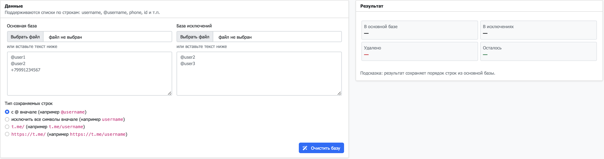
ФУНКЦИИ И ВОЗМОЖНОСТИ
1. ВВОД ДАННЫХ
📄 Основная база
- Загрузка файла (.txt или .csv)
- Вставка списка в текстовое поле
🚫 База исключений
- Загрузка файла (.txt или .csv)
- Вставка списка в текстовое поле
Поддерживаемые форматы (для обеих баз):
- @username
- https://t.me/username
- t.me/username
- username (без символов)
- ID: 123456789
- +79001234567 (номер телефона)
- 7824079731 (чистый ID)
Модуль автоматически:
- Нормализует все форматы (убирает @, t.me/, приводит к нижнему регистру)
- Удаляет дубликаты в основной базе
- Сравнивает элементы независимо от формата
2. ПРОЦЕСС ИСКЛЮЧЕНИЯ
Алгоритм работы:
1. Нормализация основной базы
- Удаление дубликатов
- Приведение всех форматов к единому виду
2. Нормализация базы исключений
- Приведение всех форматов к единому виду
- Создание множества для быстрого поиска
3. Сравнение и исключение
- Для каждого элемента основной базы проверяется, есть ли он в базе исключений (после нормализации)
- Если найден — элемент удаляется
- Если не найден — элемент остается
4. Форматирование результата
- Результат форматируется согласно выбранному типу строк
- Сохраняется порядок элементов из основной базы
3. ФОРМАТ ВЫВОДА
Выберите формат сохраняемых строк в результатах:
- с @ вначале → @username
- исключить все символы вначале → username
- t.me/ → t.me/username
- https://t.me/ → https://t.me/username
⚠️ ВАЖНО: ID и номера телефонов всегда сохраняются в исходном виде, независимо от выбранного формата.
ПРИМЕРЫ ИСПОЛЬЗОВАНИЯ
ПРИМЕР 1: Базовое исключение
Основная база:
- @user1
- @user2
- @user3
- @user4
- @user5
База исключений:
- @user2
- @user4
Результат (формат: с @ вначале):
- @user1
- @user3
- @user5
Удалено: 2 элемента (user2, user4)
ПРИМЕР 2: Разные форматы
Основная база:
- @Spodlivaeva
- https://t.me/korolna
- t.me/original_nnn
- @woem_woem
- 7824079731
База исключений:
- korolna
- @woem_woem
- 7824079731
Результат (формат: с @ вначале):
- @Spodlivaeva
- @original_nnn
Удалено: 3 элемента
- korolna (совпал с https://t.me/korolna)
- @woem_woem
- 7824079731
ПРИМЕР 3: Большие базы
- Основная база: 10,000 элементов
- База исключений: 2,000 элементов
- Результат: ~8,000 элементов (зависит от пересечений)
✅ Обработка происходит мгновенно, независимо от размера баз.
ОСОБЕННОСТИ РАБОТЫ
✅ АВТОМАТИЧЕСКАЯ НОРМАЛИЗАЦИЯ
- Все форматы (@username, t.me/username, https://t.me/username) приводятся к единому виду для сравнения
- Регистр не учитывается (case-insensitive)
- Символы @, t.me/, https://t.me/ автоматически удаляются
✅ УДАЛЕНИЕ ДУБЛИКАТОВ
- В основной базе автоматически удаляются дубликаты
- Каждый элемент встречается в результате только один раз
✅ СОХРАНЕНИЕ ПОРЯДКА
- Результат сохраняет порядок элементов из основной базы
- Удаленные элементы просто пропускаются
✅ ОБРАБОТКА ID И ТЕЛЕФОНОВ
- ID и номера телефонов сохраняются в исходном виде
- Форматирование применяется только к username
✅ ПРОИЗВОДИТЕЛЬНОСТЬ
- Работает полностью текстово, без запросов к API
- Мгновенная обработка любых объемов данных
- Не требует аккаунтов Telegram
ПРОЦЕСС РАБОТЫ
- Загрузите основную базу (файл или вставьте список)
- Загрузите базу исключений (файл или вставьте список)
- Выберите формат вывода
- Нажмите "Очистить базу"
📊 После обработки отображается статистика:
- В основной базе (количество элементов)
- В исключениях (количество элементов)
- Удалено (сколько элементов было исключено)
- Осталось (сколько элементов осталось в результате)
📥 После завершения доступен:
- Скачать очищенную базу (TXT файл)
СТАТИСТИКА
После обработки отображается:
📊 В основной базе
- Общее количество элементов в основной базе
- После удаления дубликатов
📊 В исключениях
- Общее количество элементов в базе исключений
📊 Удалено
- Количество элементов, которые были найдены в обеих базах и исключены из результата
📊 Осталось
- Количество элементов в очищенной базе
- Формула: Осталось = В основной базе - Удалено
РЕЗУЛЬТАТ
📄 TXT файл:
- Список элементов очищенной базы
- Формат зависит от выбранного типа строк
- Готов к использованию для рассылок
- Сохраняет порядок из основной базы
ВАЖНЫЕ ЗАМЕЧАНИЯ
✅ ПРЕИМУЩЕСТВА
- Работает без аккаунтов Telegram
- Мгновенная обработка
- Поддержка любых форматов данных
- Автоматическая нормализация
- Удаление дубликатов
⚠️ ОГРАНИЧЕНИЯ
- Сравнение происходит только по текстовому совпадению
- Не проверяет реальное существование пользователей в Telegram
- ID и телефоны сравниваются как строки (точное совпадение)
💡 РЕКОМЕНДАЦИИ
- Используйте для очистки баз от уже обработанных пользователей
- Подходит для исключения черных списков
- Можно использовать для удаления дубликатов между базами
- Идеально для подготовки чистых баз перед рассылками
Проверка ссылок
📋 НАЗНАЧЕНИЕ
Модуль проверяет валидность Telegram-ссылок через HTTP-запросы и анализ HTML-страниц без авторизации аккаунта.
✅ Работает полностью автоматически, БЕЗ аккаунтов Telegram.
✅ Определяет тип объекта (User, Bot, Channel, Group).
✅ Определяет доступность (Публичная/Приватная).
✅ Формирует детальный CSV-отчет.
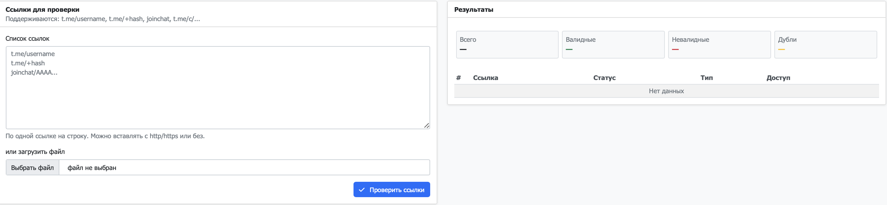
ФУНКЦИИ И ВОЗМОЖНОСТИ
1. ВВОД ДАННЫХ
- Загрузка файла (.txt или .csv)
- Вставка списка в текстовое поле
Поддерживаемые форматы ссылок:
- t.me/username
- https://t.me/username
- http://t.me/username
- telegram.me/username
- t.me/+hash (приватные ссылки)
- t.me/joinchat/AAAA... (приватные группы)
- t.me/c/1234567890/123 (посты из каналов)
⚠️ Можно вставлять ссылки с http/https или без.
2. ПРОВЕРКА ССЫЛОК
Модуль выполняет:
1. Нормализация ссылок
- Приведение всех форматов к единому виду
- Удаление дубликатов
2. HTTP-запрос к Telegram
- Отправка GET-запроса на https://t.me/...
- Анализ HTML-страницы
- Проверка статуса ответа (200, 404, 500)
3. Анализ содержимого
- Поиск маркеров валидности в HTML
- Определение типа объекта
- Определение доступности (публичная/приватная)
4. Определение типа объекта
- User — пользователь
- Bot — бот
- Channel — канал
- Group — группа
3. СТАТУСЫ ПРОВЕРКИ
✅ Валидная
- Ссылка существует и доступна
- Объект найден в Telegram
- HTML-страница содержит корректные данные
❌ Невалидная
- Ссылка не существует (404)
- Объект удален или недоступен
- Неверный формат ссылки
- Ошибка сервера (500+)
- Ссылка указывает на контакт-заглушку без публичных данных
4. ТИПЫ ОБЪЕКТОВ
👤 User
- Обычный пользователь Telegram
- Определяется по отсутствию маркеров канала/группы/бота
🤖 Bot
- Telegram-бот
- Определяется по наличию "bot" в username или маркерам бота
📢 Channel
- Канал (публичный или приватный)
- Определяется по наличию слова "subscribers" (подписчики)
👥 Group
- Группа (публичная или приватная)
- Определяется по наличию слова "members" (участники)
5. ДОСТУПНОСТЬ
🌐 Публичная
- Ссылка доступна без авторизации
- Можно открыть в браузере
- Примеры: t.me/username, t.me/channelname
🔒 Приватная
- Требуется авторизация или приглашение
- Нельзя открыть без доступа
- Примеры: t.me/+hash, t.me/joinchat/AAAA...
ПРОЦЕСС РАБОТЫ
- Загрузите список ссылок (файл или вставьте текст)
- Нажмите "Проверить ссылки"
- Дождитесь завершения проверки
📊 После проверки отображается статистика:
- Всего (количество проверенных ссылок)
- Валидные (количество валидных ссылок)
- Невалидные (количество невалидных ссылок)
- Дубли (количество дубликатов, которые были пропущены)
📋 Результаты отображаются в таблице:
- Ссылка (исходная ссылка)
- Статус (Валидная/Невалидная)
- Тип (User/Bot/Channel/Group)
- Доступ (Публичная/Приватная)
📥 После завершения доступен:
- Скачать CSV-отчет (детальный отчет со всеми данными)
ПРИМЕРЫ ИСПОЛЬЗОВАНИЯ
ПРИМЕР 1: Проверка пользователей
Входные данные:
- t.me/username1
- https://t.me/username2
- t.me/username3
Результат:
- ✅ t.me/username1 — Валидная, User, Публичная
- ✅ https://t.me/username2 — Валидная, User, Публичная
- ❌ t.me/username3 — Невалидная, —, Публичная
ПРИМЕР 2: Проверка каналов и групп
Входные данные:
- t.me/channel_name
- t.me/group_name
- t.me/joinchat/AAAA...
Результат:
- ✅ t.me/channel_name — Валидная, Channel, Публичная
- ✅ t.me/group_name — Валидная, Group, Публичная
- ✅ t.me/joinchat/AAAA... — Валидная, Group, Приватная
ПРИМЕР 3: Проверка ботов
Входные данные:
- t.me/my_bot
- t.me/anotherbot
Результат:
- ✅ t.me/my_bot — Валидная, Bot, Публичная
- ✅ t.me/anotherbot — Валидная, Bot, Публичная
ОТЧЕТ
📊 CSV файл содержит:
- Ссылка — исходная ссылка
- Статус — Валидная/Невалидная
- Тип — User/Bot/Channel/Group
- Доступ — Публичная/Приватная
Формат: CSV (разделитель — запятая)
Кодировка: UTF-8
Готов к открытию в Excel, Google Sheets и т.д.
ОСОБЕННОСТИ РАБОТЫ
✅ АВТОМАТИЧЕСКАЯ НОРМАЛИЗАЦИЯ
- Все форматы ссылок приводятся к единому виду
- Поддержка http/https и без протокола
- Автоматическое удаление дубликатов
✅ ПРОВЕРКА БЕЗ АВТОРИЗАЦИИ
- Работает через обычные HTTP-запросы
- Не требует аккаунтов Telegram
- Не требует авторизации в Telegram
✅ ДЕТЕКТИРОВАНИЕ ТИПА
- Автоматическое определение типа объекта
- Анализ HTML-структуры страницы
- Поиск специфичных маркеров для каждого типа
✅ ОБРАБОТКА ОШИБОК
- Обработка сетевых ошибок
- Обработка таймаутов (12 секунд)
- Определение невалидных ссылок по различным признакам
✅ ПРОИЗВОДИТЕЛЬНОСТЬ
- Быстрая проверка (зависит от количества ссылок)
- Параллельная обработка не требуется
- Оптимизированные HTTP-запросы
ВАЖНЫЕ ЗАМЕЧАНИЯ
✅ ПРЕИМУЩЕСТВА
- Работает без аккаунтов Telegram
- Быстрая проверка больших списков
- Детальная информация о каждой ссылке
- Автоматическое определение типа объекта
⚠️ ОГРАНИЧЕНИЯ
- Проверка только публичных данных
- Приватные ссылки могут показывать "Валидная" без деталей
- Зависит от доступности t.me
- Не проверяет реальную активность объекта
💡 РЕКОМЕНДАЦИИ
- Используйте для валидации баз перед рассылками
- Подходит для очистки баз от невалидных ссылок
- Можно использовать для категоризации ссылок по типам
- Идеально для подготовки списков для других модулей
ТЕХНИЧЕСКИЕ ДЕТАЛИ
🔧 МЕТОД ПРОВЕРКИ
- HTTP GET-запрос к https://t.me/{normalized}
- Таймаут: 12 секунд
- User-Agent: Mozilla/5.0 (Chrome)
- Анализ HTML-структуры страницы
🔍 КРИТЕРИИ ВАЛИДНОСТИ
- HTTP статус 200
- Наличие маркеров валидной страницы в HTML
- Отсутствие маркеров ошибки (404, not found)
- Для публичных ссылок — наличие публичных данных
🔍 КРИТЕРИИ ТИПА ОБЪЕКТА
- Bot: наличие "bot" в username или маркеры бота
- Channel: наличие слова "subscribers" в описании
- Group: наличие слова "members" в описании
- User: отсутствие маркеров других типов
Массовое создание групп
Модуль "Массовое создание групп" предназначен для создания групп параллельно от нескольких аккаунтов с едиными настройками.
⚠️ ВАЖНО: Самые "дорогие" операции: установка username, установка фото, закреп сообщения. Если делать много групп подряд без пауз — возможны длинные ожидания и ошибки (FloodWait).
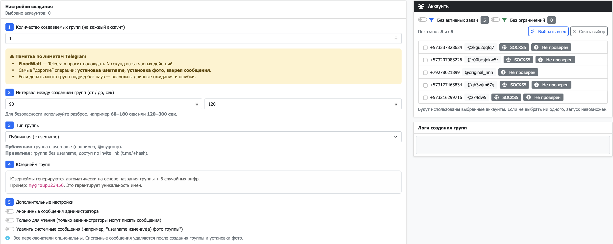
РАЗДЕЛ 1: ОСНОВНЫЕ НАСТРОЙКИ
1.1. ПОЛЕ "КОЛИЧЕСТВО СОЗДАВАЕМЫХ ГРУПП" (📊)
ОПИСАНИЕ:
Количество групп, которое будет создано каждым выбранным аккаунтом.
ПАРАМЕТРЫ:
- Диапазон: от 1 до 10
- Значение по умолчанию: 1
РАСЧЕТ:
- Общее количество = количество групп × количество аккаунтов
- Пример: 3 группы × 5 аккаунтов = 15 групп всего
РЕКОМЕНДАЦИИ:
- ✓ Начните с 1 группы для тестирования
- ✓ Увеличивайте постепенно
- ✓ Учитывайте лимиты Telegram
1.2. ПОЛЯ "ИНТЕРВАЛ МЕЖДУ СОЗДАНИЕМ ГРУПП" (⏱️)
ОПИСАНИЕ:
Случайная задержка между созданием групп одним аккаунтом.
ПАРАМЕТРЫ:
- От: 0-3600 секунд
- До: 0-3600 секунд
- Значение по умолчанию: 90-120 секунд
РЕКОМЕНДАЦИИ:
- ✓ Для безопасности используйте разброс: 60-180 сек или 120-300 сек
- ✓ Увеличивайте задержку для больших объемов
- ✓ Случайная задержка имитирует человеческое поведение
- ⚠️ Слишком маленькая задержка может привести к FloodWait
1.3. ВЫПАДАЮЩИЙ СПИСОК "ТИП ГРУППЫ" (👥)
ОПИСАНИЕ:
Выбор типа создаваемых групп.
ДОСТУПНЫЕ ТИПЫ:
- 1. "Публичная (с username)"
- Группа с username (например, @mygroup)
- Юзернеймы генерируются автоматически
- Формат: название + 6 случайных цифр (например, mygroup123456)
- 2. "Приватная (с invite link)"
- Группа без username
- Доступ по invite link (t.me/+hash)
РЕКОМЕНДАЦИИ:
- ✓ Публичная - для открытых групп с username
- ✓ Приватная - для закрытых групп с invite link
- ✓ Юзернеймы генерируются автоматически для уникальности
РАЗДЕЛ 2: ДОПОЛНИТЕЛЬНЫЕ НАСТРОЙКИ
2.1. ЧЕКБОКС "АНОНИМНЫЕ СООБЩЕНИЯ АДМИНИСТРАТОРА" (👤)
ОПИСАНИЕ:
Включение возможности отправлять анонимные сообщения от имени администратора.
РЕКОМЕНДАЦИИ:
- ✓ Используйте для скрытия авторства сообщений
- ✓ Опциональная настройка
2.2. ЧЕКБОКС "ТОЛЬКО ДЛЯ ЧТЕНИЯ" (🔒)
ОПИСАНИЕ:
Ограничение группы: только администраторы могут писать сообщения.
РЕКОМЕНДАЦИИ:
- ✓ Используйте для информационных групп
- ✓ Участники смогут только читать сообщения
2.3. ЧЕКБОКС "УДАЛИТЬ СИСТЕМНЫЕ СООБЩЕНИЯ" (🗑️)
ОПИСАНИЕ:
Автоматическое удаление системных сообщений (например, "username изменил(а) фото группы").
РЕКОМЕНДАЦИИ:
- ✓ Используйте для чистоты группы
- ✓ Удаляются после создания группы и установки фото
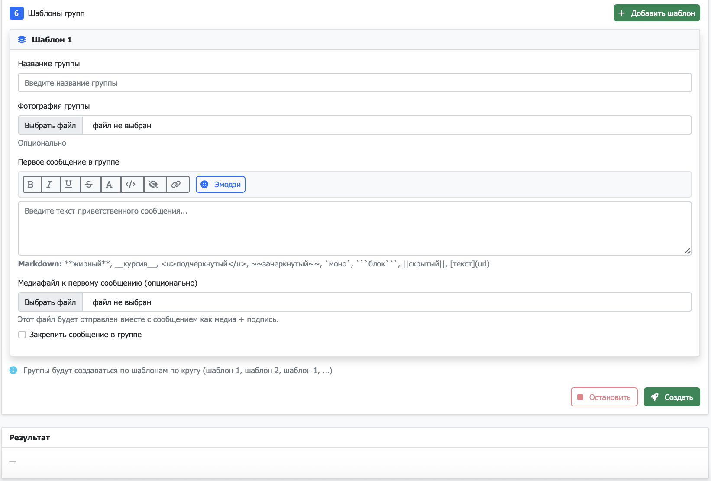
РАЗДЕЛ 3: ШАБЛОНЫ ГРУПП
3.1. КНОПКА "ДОБАВИТЬ ШАБЛОН" (➕)
ОПИСАНИЕ:
Добавление нового шаблона группы в список.
РОТАЦИЯ ШАБЛОНОВ:
- Группы создаются по шаблонам по кругу
- Шаблон 1, шаблон 2, шаблон 1, шаблон 2...
- Если шаблонов меньше, чем групп, ротация продолжается с начала
РЕКОМЕНДАЦИИ:
- ✓ Создавайте несколько шаблонов для разнообразия
- ✓ Каждый шаблон применяется циклически
- ✓ Минимум один шаблон обязателен
3.2. КНОПКА "УДАЛИТЬ ШАБЛОН" (🗑️)
ОПИСАНИЕ:
Удаление шаблона из списка. Минимум должен остаться один шаблон.
РЕКОМЕНДАЦИИ:
- ✓ Удаляйте ненужные шаблоны
- ✓ Минимум один шаблон должен остаться
3.3. ПОЛЕ "НАЗВАНИЕ ГРУППЫ" (📝)
ОПИСАНИЕ:
Название создаваемой группы.
РЕКОМЕНДАЦИИ:
- ✓ Введите уникальное название
- ✓ Название используется для генерации username (для публичных групп)
3.4. ПОЛЕ "ФОТОГРАФИЯ ГРУППЫ" (🖼️)
ОПИСАНИЕ:
Загрузка фотографии профиля группы.
ПОДДЕРЖИВАЕМЫЕ ФОРМАТЫ:
- Изображения: JPG, PNG, GIF, WEBP и другие
РЕКОМЕНДАЦИИ:
- ✓ Опционально
- ✓ Используйте качественные изображения
- ⚠️ Установка фото - "дорогая" операция (может вызвать FloodWait)
3.5. ПОЛЕ "ПЕРВОЕ СООБЩЕНИЕ В ГРУППЕ" (💬)
ОПИСАНИЕ:
Текст приветственного сообщения, которое будет отправлено в группу после создания.
ФОРМАТИРОВАНИЕ:
- Поддерживается Markdown форматирование
- Панель форматирования (жирный, курсив, подчеркнутый, зачеркнутый, моноширный, код, спойлер, ссылка)
- Эмодзи пикер
РЕКОМЕНДАЦИИ:
- ✓ Используйте для приветствия участников
- ✓ Можно оставить пустым
- ✓ Форматирование делает сообщение более привлекательным
3.6. ПОЛЕ "МЕДИАФАЙЛ К ПЕРВОМУ СООБЩЕНИЮ" (📎)
ОПИСАНИЕ:
Прикрепление медиафайла к первому сообщению.
ПОДДЕРЖИВАЕМЫЕ ФОРМАТЫ:
- Изображения: JPG, PNG, GIF, WEBP
- Видео: MP4, AVI, MOV
- Аудио: MP3, WAV, OGG
РЕКОМЕНДАЦИИ:
- ✓ Опционально
- ✓ Файл отправляется вместе с сообщением как медиа + подпись
- ✓ Используйте для визуального оформления группы
3.7. ЧЕКБОКС "ЗАКРЕПИТЬ СООБЩЕНИЕ В ГРУППЕ" (📌)
ОПИСАНИЕ:
Закрепление первого сообщения в группе.
РЕКОМЕНДАЦИИ:
- ✓ Используйте для важных сообщений
- ⚠️ Закреп сообщения - "дорогая" операция (может вызвать FloodWait)
РАЗДЕЛ 4: ФОРМАТИРОВАНИЕ ТЕКСТА
4.1. ПАНЕЛЬ ФОРМАТИРОВАНИЯ
ОПИСАНИЕ:
Панель инструментов для форматирования текста сообщения.
ДОСТУПНЫЕ ИНСТРУМЕНТЫ:
- Жирный (B) - **текст**
- Курсив (I) - __текст__
- Подчеркнутый (U) - <u>текст</u>
- Зачеркнутый (S) - ~~текст~~
- Моноширный (Font) - `текст`
- Код блок (Code) - ```текст```
- Скрытый текст / Спойлер (Eye-slash) - ||текст||
- Ссылка (Link) - [текст](url)
РЕКОМЕНДАЦИИ:
- ✓ Используйте форматирование для выделения важной информации
- ✓ Комбинируйте разные стили (но не переусердствуйте)
4.2. КНОПКА "ЭМОДЗИ" (😊)
ОПИСАНИЕ:
Открытие панели с популярными эмодзи для вставки в сообщение.
РЕКОМЕНДАЦИИ:
- ✓ Используйте эмодзи для эмоциональности сообщений
- ✓ Не переусердствуйте с количеством эмодзи
РАЗДЕЛ 5: ВЫБОР АККАУНТОВ
5.1. ФИЛЬТР "БЕЗ АКТИВНЫХ ЗАДАЧ" (🔍)
ОПИСАНИЕ:
Фильтрация аккаунтов, у которых нет активных задач.
РЕКОМЕНДАЦИИ:
- ✓ Используйте для избежания конфликтов с другими задачами
5.2. ФИЛЬТР "БЕЗ ОГРАНИЧЕНИЙ" (✅)
ОПИСАНИЕ:
Фильтрация аккаунтов без ограничений (не заморожены, не в спамблоке).
РЕКОМЕНДАЦИИ:
- ✓ Используйте для максимальной эффективности
5.3. КНОПКИ "ВЫБРАТЬ ВСЕХ" / "СНЯТЬ ВЫБОР" (✓✓ / ✖️)
ОПИСАНИЕ:
Массовый выбор или снятие выбора со всех аккаунтов.
РЕКОМЕНДАЦИИ:
- ✓ Используйте для быстрого выбора всех аккаунтов
- ✓ Группы создаются параллельно от всех выбранных аккаунтов
5.4. ВЫБОР АККАУНТОВ (Чекбоксы)
ОПИСАНИЕ:
Ручной выбор конкретных аккаунтов для создания групп.
ИНФОРМАЦИЯ ОБ АККАУНТЕ:
- Номер телефона
- Username (если есть)
- Тип прокси (если настроен)
- Статус спамблока
- Активные задачи (если есть)
РЕКОМЕНДАЦИИ:
- ✓ Выбирайте только активные аккаунты без ограничений
- ✓ Используйте несколько аккаунтов для параллельного создания
- ✓ Избегайте аккаунтов с активными задачами
РАЗДЕЛ 6: УПРАВЛЕНИЕ СОЗДАНИЕМ
6.1. КНОПКА "СОЗДАТЬ" (🚀)
ОПИСАНИЕ:
Запуск процесса массового создания групп.
ПРОВЕРКИ ПЕРЕД ЗАПУСКОМ:
- Выбор хотя бы одного аккаунта
- Наличие хотя бы одного шаблона
- Корректность всех параметров
ПРОЦЕСС:
- Валидация всех параметров
- Загрузка шаблонов и медиафайлов
- Параллельное создание групп от всех аккаунтов
- Применение шаблонов по кругу
- Отслеживание прогресса в реальном времени
РЕЗУЛЬТАТЫ:
- Список созданных групп с ссылками
- Статистика по каждому аккаунту
- Ошибки (если есть)
- Отчет в формате .txt
РЕКОМЕНДАЦИИ:
- ✓ Проверьте все параметры перед запуском
- ✓ Начните с небольшого количества для тестирования
- ✓ Не закрывайте страницу во время создания
- ✓ Следите за логами для контроля процесса
6.2. КНОПКА "ОСТАНОВИТЬ" (⏹️)
ОПИСАНИЕ:
Остановка текущего процесса создания групп.
РЕКОМЕНДАЦИИ:
- ✓ Используйте при необходимости прервать создание
- ✓ Уже созданные группы останутся созданными
РАЗДЕЛ 7: РЕЗУЛЬТАТЫ И СТАТИСТИКА
7.1. ПАНЕЛЬ "РЕЗУЛЬТАТ" (📊)
ОПИСАНИЕ:
Отображение результатов создания групп.
ОТОБРАЖАЕМАЯ ИНФОРМАЦИЯ:
- Статус операции (успех/ошибка)
- Результаты по каждому аккаунту
- Ссылки на созданные группы
- Ошибки (если есть)
ФОРМАТ:
- Список аккаунтов с результатами
- Ссылки на созданные группы (кликабельные)
- Детали ошибок
РЕКОМЕНДАЦИИ:
- ✓ Проверяйте результаты после создания
- ✓ Сохраняйте ссылки на созданные группы
- ✓ Анализируйте ошибки для улучшения
7.2. КНОПКА "СКАЧАТЬ TXT" (📥)
ОПИСАНИЕ:
Скачивание отчета о созданных группах в формате .txt.
СОДЕРЖИМОЕ ОТЧЕТА:
- Список всех созданных групп
- Ссылки на группы
- Информация по каждому аккаунту
- Статистика создания
РЕКОМЕНДАЦИИ:
- ✓ Скачивайте отчет после создания
- ✓ Сохраняйте для дальнейшего использования
- ✓ Используйте для управления созданными группами
РАЗДЕЛ 8: ЛОГИ СОЗДАНИЯ ГРУПП
8.1. ПАНЕЛЬ "ЛОГИ СОЗДАНИЯ ГРУПП" (📋)
ОПИСАНИЕ:
Отображение логов процесса создания групп в реальном времени.
РЕКОМЕНДАЦИИ:
- ✓ Следите за логами
Массовое создание каналов
Модуль "Массовое создание каналов" предназначен для создания каналов параллельно от нескольких аккаунтов с едиными настройками.
⚠️ ВАЖНО: Самые "дорогие" операции: установка username, установка фото, закреп сообщений. Если делать много каналов подряд без пауз — возможны длинные ожидания и ошибки (FloodWait).
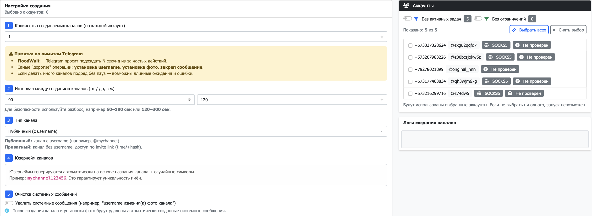
РАЗДЕЛ 1: ОСНОВНЫЕ НАСТРОЙКИ
1.1. ПОЛЕ "КОЛИЧЕСТВО СОЗДАВАЕМЫХ КАНАЛОВ" (📊)
ОПИСАНИЕ:
Количество каналов, которое будет создано каждым выбранным аккаунтом.
ПАРАМЕТРЫ:
- Диапазон: от 1 до 10
- Значение по умолчанию: 1
РАСЧЕТ:
- Общее количество = количество каналов × количество аккаунтов
- Пример: 3 канала × 5 аккаунтов = 15 каналов всего
РЕКОМЕНДАЦИИ:
- ✓ Начните с 1 канала для тестирования
- ✓ Увеличивайте постепенно
- ✓ Учитывайте лимиты Telegram
1.2. ПОЛЯ "ИНТЕРВАЛ МЕЖДУ СОЗДАНИЕМ КАНАЛОВ" (⏱️)
ОПИСАНИЕ:
Случайная задержка между созданием каналов одним аккаунтом.
ПАРАМЕТРЫ:
- От: 0-3600 секунд
- До: 0-3600 секунд
- Значение по умолчанию: 90-120 секунд
РЕКОМЕНДАЦИИ:
- ✓ Для безопасности используйте разброс: 60-180 сек или 120-300 сек
- ✓ Увеличивайте задержку для больших объемов
- ✓ Случайная задержка имитирует человеческое поведение
- ⚠️ Слишком маленькая задержка может привести к FloodWait
1.3. ВЫПАДАЮЩИЙ СПИСОК "ТИП КАНАЛА" (📺)
ОПИСАНИЕ:
Выбор типа создаваемых каналов.
ДОСТУПНЫЕ ТИПЫ:
- 1. "Публичный (с username)"
- Канал с username (например, @mychannel)
- Юзернеймы генерируются автоматически
- Формат: название + случайные символы (например, mychannel123456)
- 2. "Приватный (с invite link)"
- Канал без username
- Доступ по invite link (t.me/+hash)
РЕКОМЕНДАЦИИ:
- ✓ Публичный - для открытых каналов с username
- ✓ Приватный - для закрытых каналов с invite link
- ✓ Юзернеймы генерируются автоматически для уникальности
РАЗДЕЛ 2: ДОПОЛНИТЕЛЬНЫЕ НАСТРОЙКИ
2.1. ЧЕКБОКС "УДАЛИТЬ СИСТЕМНЫЕ СООБЩЕНИЯ" (🗑️)
ОПИСАНИЕ:
Автоматическое удаление системных сообщений (например, "username изменил(а) фото канала").
РЕКОМЕНДАЦИИ:
- ✓ Используйте для чистоты канала
- ✓ Удаляются после создания канала и установки фото
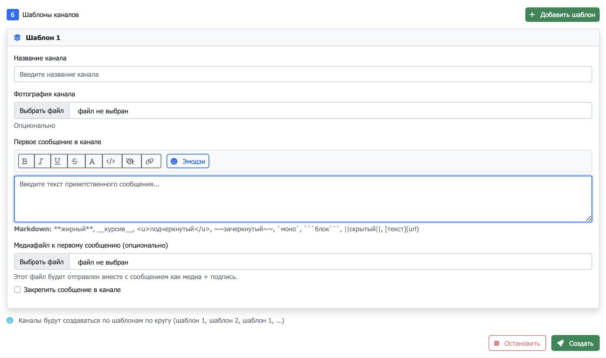
РАЗДЕЛ 3: ШАБЛОНЫ КАНАЛОВ
3.1. КНОПКА "ДОБАВИТЬ ШАБЛОН" (➕)
ОПИСАНИЕ:
Добавление нового шаблона канала в список.
РОТАЦИЯ ШАБЛОНОВ:
- Каналы создаются по шаблонам по кругу
- Шаблон 1, шаблон 2, шаблон 1, шаблон 2...
- Если шаблонов меньше, чем каналов, ротация продолжается с начала
РЕКОМЕНДАЦИИ:
- ✓ Создавайте несколько шаблонов для разнообразия
- ✓ Каждый шаблон применяется циклически
- ✓ Минимум один шаблон обязателен
3.2. КНОПКА "УДАЛИТЬ ШАБЛОН" (🗑️)
ОПИСАНИЕ:
Удаление шаблона из списка. Минимум должен остаться один шаблон.
РЕКОМЕНДАЦИИ:
- ✓ Удаляйте ненужные шаблоны
- ✓ Минимум один шаблон должен остаться
3.3. ПОЛЕ "НАЗВАНИЕ КАНАЛА" (📝)
ОПИСАНИЕ:
Название создаваемого канала.
РЕКОМЕНДАЦИИ:
- ✓ Введите уникальное название
- ✓ Название используется для генерации username (для публичных каналов)
3.4. ПОЛЕ "ФОТОГРАФИЯ КАНАЛА" (🖼️)
ОПИСАНИЕ:
Загрузка фотографии профиля канала.
ПОДДЕРЖИВАЕМЫЕ ФОРМАТЫ:
- Изображения: JPG, PNG, GIF, WEBP и другие
РЕКОМЕНДАЦИИ:
- ✓ Опционально
- ✓ Используйте качественные изображения
- ⚠️ Установка фото - "дорогая" операция (может вызвать FloodWait)
3.5. ПОЛЕ "ПЕРВОЕ СООБЩЕНИЕ В КАНАЛЕ" (💬)
ОПИСАНИЕ:
Текст приветственного сообщения, которое будет отправлено в канал после создания.
ФОРМАТИРОВАНИЕ:
- Поддерживается Markdown форматирование
- Панель форматирования (жирный, курсив, подчеркнутый, зачеркнутый, моноширный, код, спойлер, ссылка)
- Эмодзи пикер
РЕКОМЕНДАЦИИ:
- ✓ Используйте для приветствия подписчиков
- ✓ Можно оставить пустым
- ✓ Форматирование делает сообщение более привлекательным
3.6. ПОЛЕ "МЕДИАФАЙЛ К ПЕРВОМУ СООБЩЕНИЮ" (📎)
ОПИСАНИЕ:
Прикрепление медиафайла к первому сообщению.
ПОДДЕРЖИВАЕМЫЕ ФОРМАТЫ:
- Изображения: JPG, PNG, GIF, WEBP
- Видео: MP4, AVI, MOV
- Аудио: MP3, WAV, OGG
РЕКОМЕНДАЦИИ:
- ✓ Опционально
- ✓ Файл отправляется вместе с сообщением как медиа + подпись
- ✓ Используйте для визуального оформления канала
3.7. ЧЕКБОКС "ЗАКРЕПИТЬ СООБЩЕНИЕ В КАНАЛЕ" (📌)
ОПИСАНИЕ:
Закрепление первого сообщения в канале.
РЕКОМЕНДАЦИИ:
- ✓ Используйте для важных сообщений
- ⚠️ Закреп сообщения - "дорогая" операция (может вызвать FloodWait)
РАЗДЕЛ 4: ФОРМАТИРОВАНИЕ ТЕКСТА
4.1. ПАНЕЛЬ ФОРМАТИРОВАНИЯ
ОПИСАНИЕ:
Панель инструментов для форматирования текста сообщения.
ДОСТУПНЫЕ ИНСТРУМЕНТЫ:
- Жирный (B) - **текст**
- Курсив (I) - __текст__
- Подчеркнутый (U) - <u>текст</u>
- Зачеркнутый (S) - ~~текст~~
- Моноширный (Font) - `текст`
- Код блок (Code) - ```текст```
- Скрытый текст / Спойлер (Eye-slash) - ||текст||
- Ссылка (Link) - [текст](url)
РЕКОМЕНДАЦИИ:
- ✓ Используйте форматирование для выделения важной информации
- ✓ Комбинируйте разные стили (но не переусердствуйте)
4.2. КНОПКА "ЭМОДЗИ" (😊)
ОПИСАНИЕ:
Открытие панели с популярными эмодзи для вставки в сообщение.
РЕКОМЕНДАЦИИ:
- ✓ Используйте эмодзи для эмоциональности сообщений
- ✓ Не переусердствуйте с количеством эмодзи
РАЗДЕЛ 5: ВЫБОР АККАУНТОВ
5.1. ФИЛЬТР "БЕЗ АКТИВНЫХ ЗАДАЧ" (🔍)
ОПИСАНИЕ:
Фильтрация аккаунтов, у которых нет активных задач.
РЕКОМЕНДАЦИИ:
- ✓ Используйте для избежания конфликтов с другими задачами
5.2. ФИЛЬТР "БЕЗ ОГРАНИЧЕНИЙ" (✅)
ОПИСАНИЕ:
Фильтрация аккаунтов без ограничений (не заморожены, не в спамблоке).
РЕКОМЕНДАЦИИ:
- ✓ Используйте для максимальной эффективности
5.3. КНОПКИ "ВЫБРАТЬ ВСЕХ" / "СНЯТЬ ВЫБОР" (✓✓ / ✖️)
ОПИСАНИЕ:
Массовый выбор или снятие выбора со всех аккаунтов.
РЕКОМЕНДАЦИИ:
- ✓ Используйте для быстрого выбора всех аккаунтов
- ✓ Каналы создаются параллельно от всех выбранных аккаунтов
5.4. ВЫБОР АККАУНТОВ (Чекбоксы)
ОПИСАНИЕ:
Ручной выбор конкретных аккаунтов для создания каналов.
ИНФОРМАЦИЯ ОБ АККАУНТЕ:
- Номер телефона
- Username (если есть)
- Тип прокси (если настроен)
- Статус спамблока
- Активные задачи (если есть)
РЕКОМЕНДАЦИИ:
- ✓ Выбирайте только активные аккаунты без ограничений
- ✓ Используйте несколько аккаунтов для параллельного создания
- ✓ Избегайте аккаунтов с активными задачами
РАЗДЕЛ 6: УПРАВЛЕНИЕ СОЗДАНИЕМ
6.1. КНОПКА "СОЗДАТЬ" (🚀)
ОПИСАНИЕ:
Запуск процесса массового создания каналов.
ПРОВЕРКИ ПЕРЕД ЗАПУСКОМ:
- Выбор хотя бы одного аккаунта
- Наличие хотя бы одного шаблона
- Корректность всех параметров
ПРОЦЕСС:
- Валидация всех параметров
- Загрузка шаблонов и медиафайлов
- Параллельное создание каналов от всех аккаунтов
- Применение шаблонов по кругу
- Отслеживание прогресса в реальном времени
РЕЗУЛЬТАТЫ:
- Список созданных каналов с ссылками
- Статистика по каждому аккаунту
- Ошибки (если есть)
- Отчет в формате .txt
РЕКОМЕНДАЦИИ:
- ✓ Проверьте все параметры перед запуском
- ✓ Начните с небольшого количества для тестирования
- ✓ Не закрывайте страницу во время создания
- ✓ Следите за логами для контроля процесса
6.2. КНОПКА "ОСТАНОВИТЬ" (⏹️)
ОПИСАНИЕ:
Остановка текущего процесса создания каналов.
РЕКОМЕНДАЦИИ:
- ✓ Используйте при необходимости прервать создание
- ✓ Уже созданные каналы останутся созданными
РАЗДЕЛ 7: РЕЗУЛЬТАТЫ И СТАТИСТИКА
7.1. ПАНЕЛЬ "РЕЗУЛЬТАТ" (📊)
ОПИСАНИЕ:
Отображение результатов создания каналов.
ОТОБРАЖАЕМАЯ ИНФОРМАЦИЯ:
- Статус операции (успех/ошибка)
- Результаты по каждому аккаунту
- Ссылки на созданные каналы
- Ошибки (если есть)
ФОРМАТ:
- Список аккаунтов с результатами
- Ссылки на созданные каналы (кликабельные)
- Детали ошибок
РЕКОМЕНДАЦИИ:
- ✓ Проверяйте результаты после создания
- ✓ Сохраняйте ссылки на созданные каналы
- ✓ Анализируйте ошибки для улучшения
7.2. КНОПКА "СКАЧАТЬ TXT" (📥)
ОПИСАНИЕ:
Скачивание отчета о созданных каналах в формате .txt.
СОДЕРЖИМОЕ ОТЧЕТА:
- Список всех созданных каналов
- Ссылки на каналы
- Информация по каждому аккаунту
- Статистика создания
РЕКОМЕНДАЦИИ:
- ✓ Скачивайте отчет после создания
- ✓ Сохраняйте для дальнейшего использования
- ✓ Используйте для управления созданными каналами
РАЗДЕЛ 8: ЛОГИ СОЗДАНИЯ КАНАЛОВ
8.1. ПАНЕЛЬ "ЛОГИ СОЗДАНИЯ КАНАЛОВ" (📋)
ОПИСАНИЕ:
Отображение логов процесса создания каналов в реальном времени.
РЕКОМЕНДАЦИИ:
- ✓ Следите за логами
Массовое создание ботов
📋 НАЗНАЧЕНИЕ
Модуль автоматически создает Telegram-ботов через BotFather от выбранных аккаунтов по заранее заданным шаблонам (имя, фото, bio).
Подходит для массового запуска сеток ботов под разные проекты.
⚠️ ВАЖНО: Модуль работает через официальный BotFather, соблюдайте лимиты и политику Telegram.
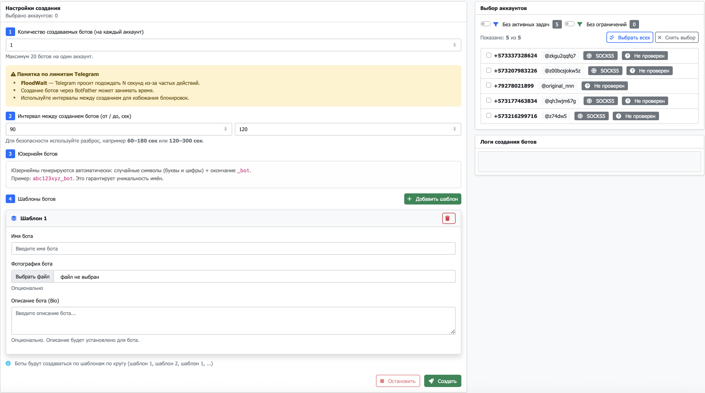
ОСНОВНЫЕ НАСТРОЙКИ
1. КОЛИЧЕСТВО БОТОВ НА АККАУНТ
ОПИСАНИЕ:
Сколько ботов будет создано КАЖДЫМ выбранным аккаунтом.
ПАРАМЕТРЫ:
- Диапазон: от 1 до 20
РЕКОМЕНДАЦИИ:
- ✓ Начните с небольшого количества для тестирования
- ✓ Учитывайте лимиты Telegram
- ✓ Используйте несколько аккаунтов для распределения нагрузки
2. ИНТЕРВАЛ МЕЖДУ СОЗДАНИЕМ БОТОВ (ОТ / ДО, СЕК)
ОПИСАНИЕ:
Пауза между созданием ботов для ОДНОГО аккаунта.
РЕКОМЕНДАЦИИ:
- ✓ Рекомендуется использовать разброс (например 60–180 сек)
- ✓ Это уменьшает риск FloodWait и ограничений
- ✓ Случайная задержка имитирует человеческое поведение
- ⚠️ Слишком маленькая задержка может привести к FloodWait
3. ШАБЛОНЫ БОТОВ
ОПИСАНИЕ:
Для каждого шаблона задаются параметры бота.
ПАРАМЕТРЫ ШАБЛОНА:
- Имя бота (обязательно) — отображаемое имя, НЕ username
- Фото бота (опционально) — изображение профиля бота
- Описание (Bio) (опционально) — краткое описание бота
РОТАЦИЯ ШАБЛОНОВ:
- Можно создать несколько шаблонов
- При создании ботов шаблоны используются по кругу
- Шаблон 1, Шаблон 2, Шаблон 1, Шаблон 2, ...
РЕКОМЕНДАЦИИ:
- ✓ Создавайте несколько шаблонов для разнообразия
- ✓ Каждый шаблон применяется циклически
- ✓ Минимум один шаблон обязателен
- ✓ Используйте уникальные имена для каждого шаблона
4. USERNAME БОТА
ОПИСАНИЕ:
Username генерируется автоматически системой.
ПРАВИЛА ГЕНЕРАЦИИ:
- ВСЕГДА начинается с буквы (ограничение Telegram)
- Формат: `буква + [буквы/цифры/_] + "_bot"`
- Длина не более 32 символов
- Если username занят или невалиден — модуль пробует другой
РЕКОМЕНДАЦИИ:
- ✓ Username генерируется автоматически, не требует ручного ввода
- ✓ Система автоматически проверяет доступность username
- ✓ При занятости username модуль автоматически пробует другой вариант
АККАУНТЫ И ЛОГИ
ВЫБОР АККАУНТОВ
ОПИСАНИЕ:
В правом блоке «Выбор аккаунтов» отображаются аккаунты, доступные для модуля.
ФИЛЬТРЫ:
- Без активных задач — фильтрация аккаунтов, у которых нет активных задач
- Без ограничений — фильтрация аккаунтов без ограничений (не заморожены, не в спамблоке)
КНОПКИ УПРАВЛЕНИЯ:
- «Выбрать всех» — выделяет все видимые аккаунты
- «Снять выбор» — убирает выделение со всех
РЕКОМЕНДАЦИИ:
- ✓ Используйте фильтры для отбора лучших аккаунтов
- ✓ Выбирайте только активные аккаунты без ограничений
- ✓ Используйте несколько аккаунтов для параллельного создания
- ✓ Избегайте аккаунтов с активными задачами
ЛОГИ СОЗДАНИЯ БОТОВ
ОПИСАНИЕ:
Ниже расположен блок «Логи создания ботов», который в реальном времени показывает процесс создания.
ОТОБРАЖАЕМАЯ ИНФОРМАЦИЯ:
- Запуск/завершение для каждого аккаунта
- Паузы между аккаунтами (`⏳ Пауза перед запуском аккаунта ...`)
- Создание каждого бота (имя, попытки username)
- Все ошибки и предупреждения
РЕКОМЕНДАЦИИ:
- ✓ Следите за логами для контроля процесса
- ✓ Логи показывают все ошибки BotFather и проблемы с username/лимитами
- ✓ Используйте логи для диагностики проблем
КАК РАБОТАТЬ
- Выберите аккаунты, с которых будут создаваться боты
- Задайте:
- Количество ботов на один аккаунт
- Интервал между созданием ботов (от / до, сек)
- Создайте один или несколько шаблонов ботов:
- Имя (обязательно)
- Фото (опционально)
- Bio (опционально)
- Нажмите «Создать»
- Наблюдайте за процессом:
- Статус и результат — в блоке «Результат»
- Детальные логи — в блоке «Логи создания ботов»
- После завершения можно скачать TXT-отчет
РЕЗУЛЬТАТЫ И ОТЧЕТ
ПАНЕЛЬ "РЕЗУЛЬТАТ"
ОПИСАНИЕ:
Отображение результатов создания ботов в реальном времени.
ОТОБРАЖАЕМАЯ ИНФОРМАЦИЯ:
- Статус операции (успех/ошибка)
- Результаты по каждому аккаунту
- Список созданных ботов с username и токенами
- Ошибки (если есть)
КНОПКА "СКАЧАТЬ TXT"
ОПИСАНИЕ:
Скачивание отчета о созданных ботах в формате .txt.
СОДЕРЖИМОЕ ОТЧЕТА:
- Количество шаблонов
- Количество аккаунтов
- Количество ботов на аккаунт
- Использованный интервал задержек
- Список всех созданных ботов в формате:
- `Аккаунт создатель - username бота - токен (ID:TOKEN)`
- Список ошибок (если были)
РЕКОМЕНДАЦИИ:
- ✓ Скачивайте отчет после завершения работы
- ✓ Сохраняйте токены ботов для дальнейшего использования
- ✓ Используйте отчет для управления созданными ботами
РЕКОМЕНДАЦИИ
БЕЗОПАСНОСТЬ И ЛИМИТЫ
- ⚠️ Не создавайте слишком много ботов подряд с одного аккаунта — Telegram может ограничить действия или выдать FloodWait
- ✓ Используйте несколько аккаунтов и большие интервалы
- ✓ Следите за логами: они показывают все ошибки BotFather и проблемы с username/лимитами
- ✓ Проверяйте, что аккаунты не в спамблоке и без жестких ограничений
ОПТИМИЗАЦИЯ СОЗДАНИЯ
- ✓ Используйте несколько аккаунтов для параллельного создания
- ✓ Создавайте несколько шаблонов для разнообразия
- ✓ Настройте задержки в зависимости от объема (рекомендуется 60–180 сек)
- ✓ Сохраняйте отчеты после создания
РАБОТА С АККАУНТАМИ
- ✓ Выбирайте только активные аккаунты
- ✓ Используйте фильтры для отбора лучших аккаунтов
- ✓ Параллельное создание ускоряет процесс
- ✓ Избегайте аккаунтов с активными задачами
- ✓ Распределяйте нагрузку между аккаунтами
ШАБЛОНЫ БОТОВ
- ✓ Создавайте несколько шаблонов для разнообразия
- ✓ Шаблоны применяются циклически
- ✓ Каждый шаблон может иметь свое имя, фото, bio
- ✓ Используйте качественные изображения для фото бота
USERNAME БОТОВ
- ✓ Username генерируется автоматически
- ✓ Всегда начинается с буквы (ограничение Telegram)
- ✓ Формат: буква + [буквы/цифры/_] + "_bot"
- ✓ Длина не более 32 символов
- ✓ При занятости username модуль автоматически пробует другой вариант
Инвайтер
ЗАЧЕМ НУЖЕН
Модуль "Инвайтер" приглашает пользователей по списку username в вашу Telegram‑группу.
ВОЗМОЖНОСТИ:
- Использует выбранные аккаунты и распределяет нагрузку между ними
- Показывает прогресс, логи в реальном времени
- Сохраняет отчёты
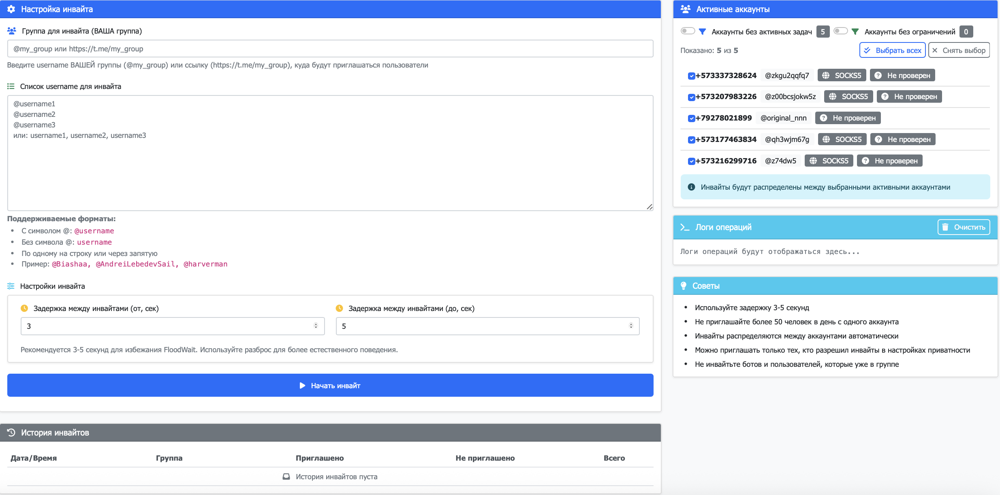
ЧТО УМЕЕТ
ВВОД ДАННЫХ
- Принимает список username (с @ или без, построчно или через запятую)
- Добавляет в указанную группу (@group или https://t.me/group)
НАСТРОЙКИ
- Настраивает задержку между инвайтами (от/до, сек), чтобы снизить риск FloodWait
- Выбирает аккаунты для работы и фильтрует их (без задач / без ограничений)
ЛОГИ И ПРОГРЕСС
- Ведет логи: запуск, попытки инвайта, ошибки (FloodWait, приватность), паузы
- Показывает прогресс и итоговые цифры: приглашено, не приглашено, всего
- Сохраняет историю запусков
ЭКСПОРТ РЕЗУЛЬТАТОВ
- Экспортирует результаты в CSV / TXT / JSON
КАК ЗАПУСТИТЬ
1. ПОДГОТОВКА
Убедитесь, что выбранные аккаунты имеют доступ к группе.
2. ЗАПОЛНЕНИЕ ФОРМЫ
- Группа для инвайта — укажите группу (@group или https://t.me/group)
- Список username — введите список пользователей (с @ или без, построчно или через запятую)
- Задержка между инвайтами — рекомендуем 3–5 сек
3. ВЫБОР АККАУНТОВ
Выберите аккаунты в правой панели (можно "Выбрать всех").
ФИЛЬТРЫ:
- Без активных задач — фильтрация аккаунтов, у которых нет активных задач
- Без ограничений — фильтрация аккаунтов без ограничений (не заморожены, не в спамблоке)
4. АВТОМАТИЧЕСКОЕ ДОБАВЛЕНИЕ АККАУНТОВ
Модуль сам попробует добавить выбранные аккаунты в целевую группу, если они ещё не состоят в ней.
⚠️ ВАЖНО: Для приватных групп нужна действующая инвайт‑ссылка.
5. ЗАПУСК
Нажмите «Начать инвайт».
Во время работы:
- Смотрите прогресс в реальном времени
- Следите за логами "Логи операций"
6. РЕЗУЛЬТАТЫ
После завершения:
- Проверьте блок «Результаты» (кто приглашён / не приглашён и почему)
- Скачайте отчёт, если нужно (CSV / TXT / JSON)
СОВЕТЫ ПО БЕЗОПАСНОСТИ
ЛИМИТЫ И ЗАДЕРЖКИ
- ⚠️ Не делайте слишком много приглашений с одного аккаунта (30–50 в день безопаснее)
- ✓ Используйте несколько аккаунтов и задержки, чтобы избежать блокировок
- ✓ Рекомендуемая задержка: 3–5 секунд между инвайтами
ПРИВАТНОСТЬ ПОЛЬЗОВАТЕЛЕЙ
- ✓ Учитывайте приватность: часть пользователей может запретить инвайты
- ✓ Такие пользователи будут отображаться в списке "не приглашено" с соответствующей причиной
МОНИТОРИНГ И ОПТИМИЗАЦИЯ
- ✓ Проверяйте логи — они подскажут реальные причины ошибок и оптимальные настройки
- ✓ Следите за ошибками FloodWait — при их появлении увеличивайте задержки
- ✓ Используйте несколько аккаунтов для распределения нагрузки
РЕЗУЛЬТАТЫ И ОТЧЕТЫ
ПАНЕЛЬ "РЕЗУЛЬТАТЫ"
ОТОБРАЖАЕМАЯ ИНФОРМАЦИЯ:
- Приглашено — количество успешно приглашенных пользователей
- Не приглашено — количество пользователей, которых не удалось пригласить
- Всего — общее количество пользователей в списке
- Детали по каждому пользователю (статус, причина ошибки если есть)
ЭКСПОРТ ОТЧЕТОВ
ДОСТУПНЫЕ ФОРМАТЫ:
- CSV — для работы в Excel и других табличных редакторах
- TXT — текстовый формат для простого просмотра
- JSON — структурированный формат для программной обработки
СОДЕРЖИМОЕ ОТЧЕТА:
- Список всех пользователей из исходного списка
- Статус приглашения для каждого пользователя
- Причины ошибок (если есть)
- Общая статистика
ЛОГИ ОПЕРАЦИЙ
ОТОБРАЖАЕМАЯ ИНФОРМАЦИЯ:
- Запуск процесса инвайта
- Попытки инвайта для каждого пользователя
- Успешные приглашения
- Ошибки (FloodWait, приватность пользователя, недоступность группы и т.д.)
- Паузы между инвайтами
- Завершение работы
РЕКОМЕНДАЦИИ:
- ✓ Следите за логами в реальном времени для контроля процесса
- ✓ Анализируйте ошибки для оптимизации настроек
- ✓ Используйте логи для диагностики проблем
Инвайт через администраторов
ЗАЧЕМ НУЖЕН
Модуль "Инвайт через администраторов" приглашает пользователей в группу через временную выдачу админки.
ВОЗМОЖНОСТИ:
- Работает циклами и распределяет инвайты по выбранным аккаунтам
- Показывает прогресс, логи и формирует отчет
- Автоматическая выдача/снятие админки через ботов
- Параллельная работа нескольких инвайтеров
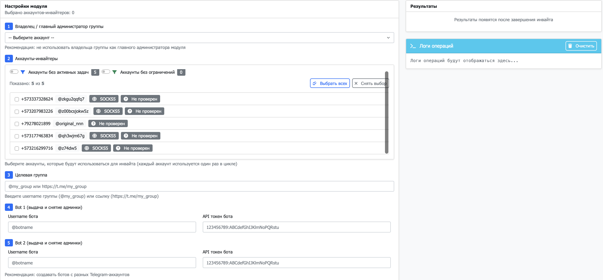
ЧТО ДЕЛАЕТ КАЖДЫЙ ШАГ (1–12)
1. ВЛАДЕЛЕЦ / ГЛАВНЫЙ АДМИНИСТРАТОР
ОПИСАНИЕ:
Аккаунт, который управляет группой и выдает права ботам/инвайтерам.
РЕКОМЕНДАЦИИ:
- ✓ Используйте аккаунт с правами владельца или главного администратора
- ✓ Убедитесь, что аккаунт имеет доступ к целевой группе
2. АККАУНТЫ-ИНВАЙТЕРЫ
ОПИСАНИЕ:
Те, кто непосредственно приглашает пользователей. Каждый аккаунт используется один раз в цикле.
ВОЗМОЖНОСТИ:
- Можно фильтровать (без задач / без ограничений)
- Можно выбирать массово ("Выбрать всех")
РЕКОМЕНДАЦИИ:
- ✓ Используйте 2–3 аккаунта минимум, чтобы распределить нагрузку
- ✓ Выбирайте только активные аккаунты без ограничений
- ✓ Избегайте аккаунтов с активными задачами
3. ЦЕЛЕВАЯ ГРУППА
ОПИСАНИЕ:
Куда приглашать пользователей.
ФОРМАТ:
- @group
- https://t.me/group
РЕКОМЕНДАЦИИ:
- ✓ Убедитесь, что группа существует и доступна
- ✓ Для приватных групп заранее добавьте ботов и права вручную, если нужно
4. BOT 1
ОПИСАНИЕ:
Бот для выдачи/снятия админки.
ТРЕБУЕМЫЕ ДАННЫЕ:
- Username бота
- API токен
РЕКОМЕНДАЦИИ:
- ✓ Используйте бота, созданного через @BotFather
- ✓ Убедитесь, что бот добавлен в группу
- ✓ Проверьте, что у бота есть необходимые права
5. BOT 2
ОПИСАНИЕ:
Второй бот для тех же операций (рекомендуется иметь два).
РЕКОМЕНДАЦИИ:
- ✓ Рекомендуется использовать два бота для надежности
- ✓ Если один бот недоступен, система автоматически переключится на второй
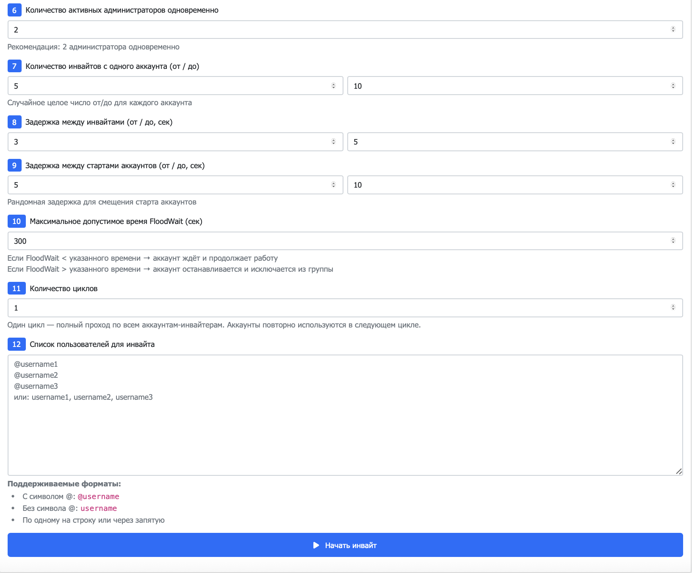
6. КОЛИЧЕСТВО АКТИВНЫХ АДМИНИСТРАТОРОВ
ОПИСАНИЕ:
Сколько аккаунтов-инвайтеров одновременно работают с админкой.
РЕКОМЕНДАЦИИ:
- ✓ Начните с небольшого количества (2–3 аккаунта)
- ✓ При большом FloodWait снижайте количество активных админов
- ✓ Увеличивайте постепенно, если все работает стабильно
7. ИНВАЙТОВ С ОДНОГО АККАУНТА (ОТ/ДО)
ОПИСАНИЕ:
Сколько пользователей приглашает каждый аккаунт в одном цикле.
РЕКОМЕНДАЦИИ:
- ✓ Ставьте небольшие лимиты инвайтов на аккаунт
- ✓ Рекомендуется: 5–15 инвайтов с одного аккаунта
- ✓ Используйте разброс (от/до) для имитации естественного поведения
8. ЗАДЕРЖКА МЕЖДУ ИНВАЙТАМИ (ОТ/ДО)
ОПИСАНИЕ:
Интервал между приглашениями, чтобы снизить риск FloodWait.
РЕКОМЕНДАЦИИ:
- ✓ Ставьте задержку 10–25 сек
- ✓ Используйте разброс (от/до) для случайности
- ✓ При большом FloodWait увеличивайте задержку
9. ЗАДЕРЖКА МЕЖДУ СТАРТАМИ АККАУНТОВ (ОТ/ДО)
ОПИСАНИЕ:
Рандомная задержка, чтобы разнести старт инвайтеров по времени.
РЕКОМЕНДАЦИИ:
- ✓ Используйте разброс 5–15 секунд
- ✓ Это помогает избежать одновременного старта всех аккаунтов
- ✓ Снижает риск блокировок
10. МАКСИМАЛЬНЫЙ FLOODWAIT (СЕК)
ОПИСАНИЕ:
Если FloodWait меньше заданного — аккаунт ждет и продолжает. Если больше — аккаунт исключается из текущего цикла.
РЕКОМЕНДАЦИИ:
- ✓ Рекомендуется: 60–120 секунд
- ✓ При большом FloodWait снижайте скорость и количество активных админов
- ✓ Слишком маленькое значение может привести к исключению аккаунтов из работы
11. КОЛИЧЕСТВО ЦИКЛОВ
ОПИСАНИЕ:
Сколько раз прогонять список аккаунтов-инвайтеров.
РЕКОМЕНДАЦИИ:
- ✓ Начните с 1–2 циклов для тестирования
- ✓ Увеличивайте постепенно
- ✓ Учитывайте общее количество пользователей для инвайта
12. СПИСОК ПОЛЬЗОВАТЕЛЕЙ ДЛЯ ИНВАЙТА
ОПИСАНИЕ:
Список username по одному в строке или через запятую.
ФОРМАТ:
- По одному в строке
- Через запятую
- С @ или без
РЕКОМЕНДАЦИИ:
- ✓ Используйте один формат для всего списка
- ✓ Проверьте список на дубликаты перед запуском
ФУНКЦИОНАЛ И ВОЗМОЖНОСТИ
АВТОМАТИЧЕСКАЯ ВЫДАЧА/СНЯТИЕ АДМИНКИ
- Система автоматически выдает админку аккаунтам-инвайтерам через ботов
- После завершения работы админка автоматически снимается
- Работает с двумя ботами для надежности
ПАРАЛЛЕЛЬНАЯ РАБОТА
- Несколько инвайтеров могут работать одновременно
- Нагрузка распределяется между аккаунтами
- Каждый аккаунт используется один раз в цикле
ГИБКИЕ НАСТРОЙКИ
- Гибкие задержки и лимиты инвайтов
- Настройка количества активных администраторов
- Контроль максимального FloodWait
- Множественные циклы работы
МОНИТОРИНГ И ОТЧЕТЫ
- Логи в реальном времени
- Итоговый отчет (TXT) с результатами
- Отображение прогресса работы
КАК РАБОТАТЬ
- Заполните шаги 1–12:
- Укажите владельца/главного администратора
- Настройте ботов (Bot 1 и Bot 2)
- Укажите целевую группу
- Настройте параметры работы (количество активных админов, лимиты, задержки)
- Введите список пользователей для инвайта
- Выберите аккаунты-инвайтеры в правой панели
- Нажмите «Начать инвайт»
- Следите за логами и прогрессом в реальном времени
- После завершения скачайте отчет (TXT)
РЕКОМЕНДАЦИИ
НАСТРОЙКА АККАУНТОВ
- ✓ Используйте 2–3 аккаунта минимум, чтобы распределить нагрузку
- ✓ Выбирайте только активные аккаунты без ограничений
- ✓ Избегайте аккаунтов с активными задачами
НАСТРОЙКА ЗАДЕРЖЕК И ЛИМИТОВ
- ✓ Ставьте задержку 10–25 сек между инвайтами
- ✓ Используйте небольшие лимиты инвайтов на аккаунт (5–15)
- ✓ При большом FloodWait снижайте скорость и количество активных админов
РАБОТА С ГРУППАМИ
- ✓ Для приватных групп заранее добавьте ботов и права вручную, если нужно
- ✓ Убедитесь, что владелец/главный администратор имеет доступ к группе
- ✓ Проверьте, что боты добавлены в группу и имеют необходимые права
МОНИТОРИНГ И ОПТИМИЗАЦИЯ
- ✓ Следите за логами в реальном времени
- ✓ Анализируйте ошибки FloodWait
- ✓ При частых ошибках увеличивайте задержки и уменьшайте количество активных админов
- ✓ Регулярно проверяйте результаты работы
РЕЗУЛЬТАТЫ И ОТЧЕТЫ
ПАНЕЛЬ "РЕЗУЛЬТАТЫ"
ОТОБРАЖАЕМАЯ ИНФОРМАЦИЯ:
- Статус работы каждого аккаунта-инвайтера
- Количество успешно приглашенных пользователей
- Количество ошибок
- Детали по каждому пользователю
ЛОГИ ОПЕРАЦИЙ
ОТОБРАЖАЕМАЯ ИНФОРМАЦИЯ:
- Запуск процесса инвайта
- Выдача админки аккаунтам-инвайтерам
- Попытки инвайта для каждого пользователя
- Успешные приглашения
- Ошибки (FloodWait, приватность пользователя и т.д.)
- Снятие админки после завершения работы
- Завершение циклов
ЭКСПОРТ ОТЧЕТА
ФОРМАТ: TXT
СОДЕРЖИМОЕ ОТЧЕТА:
- Настройки работы (количество циклов, активных админов, лимиты)
- Список всех пользователей из исходного списка
- Статус приглашения для каждого пользователя
- Аккаунт, который пригласил пользователя
- Причины ошибок (если есть)
- Общая статистика
РЕКОМЕНДАЦИИ:
- ✓ Скачивайте отчет после завершения работы
- ✓ Сохраняйте отчеты для анализа и оптимизации
- ✓ Используйте отчеты для отслеживания результатов
Массовая подписка
ЧТО ДЕЛАЕТ
Модуль "Массовая подписка" подписывает выбранные аккаунты на список каналов/групп (публичные и приватные).
ВОЗМОЖНОСТИ:
- Поддерживает invite-ссылки для приватных каналов/групп: `https://t.me/+...` или `https://t.me/joinchat/...`
- Показывает прогресс, логи и формирует отчёт
- Работает с публичными и приватными каналами/группами
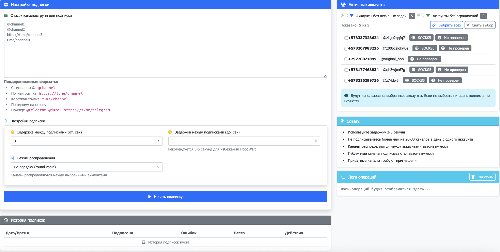
ОСНОВНЫЕ ПОЛЯ (ШАГИ)
1. СПИСОК КАНАЛОВ/ГРУПП
ОПИСАНИЕ:
Список каналов/групп для подписки, по одному на строку.
ПОДДЕРЖИВАЕМЫЕ ФОРМАТЫ:
- Публичные каналы/группы:
- @channel
- https://t.me/channel
- Приватные каналы/группы:
- https://t.me/+invite (invite-ссылка с плюсом)
- https://t.me/joinchat/... (invite-ссылка через joinchat)
⚠️ ВАЖНО: Для приватных каналов/групп используйте только полную invite-ссылку. Простая ссылка без invite не сработает.
РЕКОМЕНДАЦИИ:
- ✓ Используйте один формат для всего списка
- ✓ Для приватных используйте корректную invite-ссылку, иначе будет «Канал не найден»
- ✓ Проверьте список на дубликаты перед запуском
2. ЗАДЕРЖКА МЕЖДУ ПОДПИСКАМИ (ОТ/ДО, СЕК)
ОПИСАНИЕ:
Рандомная задержка в диапазоне для снижения риска FloodWait.
РЕКОМЕНДАЦИИ:
- ✓ Рекомендуется: 3–5 секунд
- ✓ Держите задержку 3–5+ секунд
- ✓ При FloodWait увеличивайте диапазон
- ✓ Случайная задержка имитирует человеческое поведение
3. РЕЖИМ РАСПРЕДЕЛЕНИЯ
ОПИСАНИЕ:
Способ распределения каналов/групп между аккаунтами.
ДОСТУПНЫЕ РЕЖИМЫ:
- Round-robin (по порядку) — каналы распределяются по порядку между аккаунтами
- Random (случайный) — каналы распределяются случайным образом
РЕКОМЕНДАЦИИ:
- ✓ Round-robin — для равномерного распределения
- ✓ Random — для более естественного поведения
4. ВЫБОР АККАУНТОВ
ОПИСАНИЕ:
Аккаунты должны быть активными и авторизованными. Без выбора аккаунтов подписка не запустится.
ТРЕБОВАНИЯ:
- Аккаунты должны быть авторизованы
- Аккаунты должны быть без блокировок подписки
- Необходимо выбрать хотя бы один аккаунт
ФИЛЬТРЫ:
- Без активных задач — фильтрация аккаунтов, у которых нет активных задач
- Без ограничений — фильтрация аккаунтов без ограничений (не заморожены, не в спамблоке)
РЕКОМЕНДАЦИИ:
- ✓ Используйте фильтры для отбора лучших аккаунтов
- ✓ Выбирайте только активные аккаунты без ограничений
- ✓ Используйте несколько аккаунтов для распределения нагрузки
КАК ЗАПУСТИТЬ
- Заполните список каналов/групп (для приватных — полная invite-ссылка)
- Укажите задержку от/до (рекомендуется 3–5 сек)
- Выберите режим распределения (round-robin или random)
- Выберите аккаунты в правой панели
- Нажмите «Начать подписку» и следите за логами/прогрессом
- После завершения — скачайте отчёт при необходимости
РЕКОМЕНДАЦИИ
ЛИМИТЫ И БЕЗОПАСНОСТЬ
- ⚠️ Не подписывайте слишком много каналов подряд одним аккаунтом (20–30 в день безопаснее)
- ✓ Используйте несколько аккаунтов для распределения нагрузки
- ✓ Соблюдайте рекомендуемые задержки между подписками
РАБОТА С ПРИВАТНЫМИ КАНАЛАМИ/ГРУППАМИ
- ✓ Для приватных используйте корректную invite-ссылку (`https://t.me/+...` / `https://t.me/joinchat/...`)
- ⚠️ Простая ссылка без invite не сработает — будет «Канал не найден»
- ✓ Проверяйте актуальность invite-ссылок перед добавлением
НАСТРОЙКА ЗАДЕРЖЕК
- ✓ Держите задержку 3–5+ секунд
- ✓ При FloodWait увеличивайте диапазон
- ✓ Используйте разброс (от/до) для случайности
МОНИТОРИНГ И ОПТИМИЗАЦИЯ
- ✓ Следите за логами: там видно FloodWait, уже подписан, приватная ссылка недействительна и т.п.
- ✓ Анализируйте ошибки для оптимизации настроек
- ✓ Регулярно проверяйте результаты работы
ЧТО ВАЖНО ЗНАТЬ
ФОРМАТЫ ССЫЛОК
- Публичные: @channel или https://t.me/channel
- Приватные: только через invite (`+` или `joinchat`), простая ссылка без invite не сработает
ТРЕБОВАНИЯ К АККАУНТАМ
- Аккаунты должны быть авторизованы
- Аккаунты должны быть без блокировок подписки
- Рекомендуется использовать аккаунты без активных задач
РЕЗУЛЬТАТЫ И ОТЧЕТЫ
ПАНЕЛЬ "РЕЗУЛЬТАТЫ"
ОТОБРАЖАЕМАЯ ИНФОРМАЦИЯ:
- Статус подписки для каждого канала/группы
- Количество успешно подписанных каналов/групп
- Количество ошибок
- Детали по каждому каналу/группе (успех/ошибка, причина)
ЛОГИ ОПЕРАЦИЙ
ОТОБРАЖАЕМАЯ ИНФОРМАЦИЯ:
- Запуск процесса подписки
- Попытки подписки для каждого канала/группы
- Успешные подписки
- Ошибки (FloodWait, уже подписан, приватная ссылка недействительна, канал не найден и т.д.)
- Завершение работы
ЭКСПОРТ ОТЧЕТА
ФОРМАТ: TXT
СОДЕРЖИМОЕ ОТЧЕТА:
- Настройки работы (задержки, режим распределения)
- Список всех каналов/групп из исходного списка
- Статус подписки для каждого канала/группы
- Аккаунт, который подписался на канал/группу
- Причины ошибок (если есть)
- Общая статистика
РЕКОМЕНДАЦИИ:
- ✓ Скачивайте отчет после завершения работы
- ✓ Сохраняйте отчеты для анализа и оптимизации
- ✓ Используйте отчеты для отслеживания результатов
Масслайкинг
1. НАЗНАЧЕНИЕ
Модуль ставит реакции (лайки) на посты в каналах и группах с нескольких аккаунтов сразу. Подходит для лёгкого "подогрева" постов и создания активности.
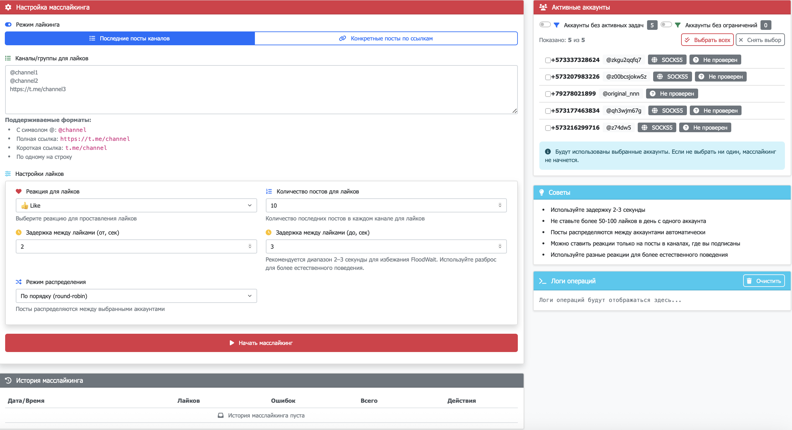
2. РЕЖИМЫ РАБОТЫ
ПОСЛЕДНИЕ ПОСТЫ КАНАЛОВ
ОПИСАНИЕ:
Указываете список каналов/групп, модуль берёт последние N постов и ставит на них реакции.
КАК РАБОТАЕТ:
- Вводите список каналов/групп (по одному на строку)
- Указываете количество последних постов для каждого канала
- Модуль автоматически находит последние посты и ставит на них реакции
ФОРМАТЫ ССЫЛОК:
- @channel
- https://t.me/channel
КОНКРЕТНЫЕ ПОСТЫ ПО ССЫЛКАМ
ОПИСАНИЕ:
Указываете точные ссылки на посты (в том числе приватных каналов по формату https://t.me/c/ID/POST), каждый аккаунт ставит реакцию на каждый указанный пост.
ФОРМАТЫ ССЫЛОК:
- https://t.me/channel/123 (публичный канал)
- https://t.me/c/ID/POST (приватный канал)
РЕКОМЕНДАЦИИ:
- ✓ Используйте для точного таргетинга конкретных постов
- ✓ Подходит для работы с приватными каналами
- ✓ Каждый аккаунт ставит реакцию на каждый указанный пост
3. ОСНОВНЫЕ НАСТРОЙКИ
РЕАКЦИЯ
ОПИСАНИЕ:
Выбираете эмодзи для реакции или "случайная".
ДОСТУПНЫЕ ВАРИАНТЫ:
- 👍 (лайк)
- ❤️ (сердце)
- 🔥 (огонь)
- 😍 (влюбленные глаза)
- И другие эмодзи-реакции
- Случайная — система выбирает реакцию случайным образом
РЕКОМЕНДАЦИИ:
- ✓ Используйте разные реакции, чтобы поведение выглядело естественно
- ✓ Режим "случайная" создает более естественное поведение
КОЛИЧЕСТВО ПОСТОВ
ОПИСАНИЕ:
Сколько последних постов брать из каждого канала (в режиме "Последние посты каналов").
РЕКОМЕНДАЦИИ:
- ✓ Начните с небольшого количества (1–5 постов)
- ✓ Увеличивайте постепенно
- ✓ Учитывайте лимиты Telegram
ЗАДЕРЖКА МЕЖДУ ЛАЙКАМИ (ОТ / ДО, СЕК)
ОПИСАНИЕ:
Случайная пауза между реакциями в заданном диапазоне.
РЕКОМЕНДАЦИИ:
- ✓ Рекомендуется: 2–3 секунды
- ✓ Используйте разброс (от/до) для случайности
- ✓ При FloodWait увеличивайте диапазон
- ✓ Случайная задержка имитирует человеческое поведение
РЕЖИМ РАСПРЕДЕЛЕНИЯ
ОПИСАНИЕ:
Способ распределения постов между аккаунтами.
ДОСТУПНЫЕ РЕЖИМЫ:
- По порядку (round-robin) — посты равномерно распределяются между аккаунтами
- Случайный порядок — аккаунты выбираются случайно
РЕКОМЕНДАЦИИ:
- ✓ Round-robin — для равномерного распределения нагрузки
- ✓ Случайный порядок — для более естественного поведения
ВЫБОР АККАУНТОВ
ОПИСАНИЕ:
Справа выбираете, какие аккаунты участвуют. Если ни один не выбран — модуль не запустится.
ТРЕБОВАНИЯ:
- Аккаунты должны быть авторизованы
- Аккаунты должны быть подписаны на канал/группу, где ставятся реакции
- Необходимо выбрать хотя бы один аккаунт
ФИЛЬТРЫ:
- Без активных задач — фильтрация аккаунтов, у которых нет активных задач
- Без ограничений — фильтрация аккаунтов без ограничений (не заморожены, не в спамблоке)
РЕКОМЕНДАЦИИ:
- ✓ Используйте фильтры для отбора лучших аккаунтов
- ✓ Выбирайте только активные аккаунты без ограничений
- ✓ Используйте несколько аккаунтов для распределения нагрузки
- ✓ Убедитесь, что аккаунты подписаны на каналы/группы
4. КАК ПОЛЬЗОВАТЬСЯ
- Выберите режим:
- "Последние посты каналов" — вставьте список каналов/групп
- "Конкретные посты по ссылкам" — вставьте ссылки на посты
- Настройте реакцию, количество постов и задержку (от/до)
- Выберите режим распределения (по порядку или случайный)
- Справа отметьте галочками аккаунты, которые должны лайкать
- Нажмите "Начать масслайкинг" и следите за прогрессом и логами
- При необходимости можно остановить модуль кнопкой "Остановить"
5. ЛОГИ И РЕЗУЛЬТАТЫ
ПРОГРЕСС МАССЛАЙКИНГА
ОТОБРАЖАЕМАЯ ИНФОРМАЦИЯ:
- Сколько лайков поставлено
- Сколько ошибок
- Сколько постов всего
РЕЗУЛЬТАТЫ
ОТОБРАЖАЕМАЯ ИНФОРМАЦИЯ:
- Итоговая статистика
- Какие аккаунты использовались
- Детали по каждому посту (успех/ошибка)
ЛОГИ ОПЕРАЦИЙ
ОТОБРАЖАЕМАЯ ИНФОРМАЦИЯ:
- Запуск процесса масслайкинга
- Попытки постановки реакций для каждого поста
- Успешные реакции
- Ошибки (FloodWait, Invalid channel object, Cannot find any entity и т.д.)
- Задержки между действиями
- Завершение работы
РЕКОМЕНДАЦИИ:
- ✓ Следите за логами в реальном времени для контроля процесса
- ✓ Анализируйте ошибки для оптимизации настроек
- ✓ Используйте логи для диагностики проблем
6. РЕКОМЕНДАЦИИ И ЛИМИТЫ
ЛИМИТЫ И БЕЗОПАСНОСТЬ
- ⚠️ Не ставьте слишком много лайков с одного аккаунта подряд (ориентир: до 50–100 в день)
- ✓ Используйте задержки и разные реакции, чтобы поведение выглядело естественно
- ✓ Используйте несколько аккаунтов для распределения нагрузки
ТРЕБОВАНИЯ К АККАУНТАМ
- ⚠️ Аккаунты должны быть подписаны на канал/группу, где ставятся реакции, иначе будет ошибка
- ✓ Проверяйте подписки аккаунтов перед запуском
- ✓ Используйте только активные аккаунты без ограничений
ОПТИМИЗАЦИЯ РАБОТЫ
- ✓ При частых ошибках FloodWait увеличьте задержку и уменьшите нагрузку (меньше постов или аккаунтов)
- ✓ Используйте разные реакции для разнообразия
- ✓ Настройте режим распределения в зависимости от целей
7. ЧТО ДЕЛАТЬ ПРИ ОШИБКАХ
ОШИБКИ "INVALID CHANNEL OBJECT" ИЛИ "CANNOT FIND ANY ENTITY"
ПРИЧИНЫ:
- Аккаунт не состоит в канале/группе
- Ссылка на канал/пост указана неправильно
- Канал/группа недоступна или удалена
РЕШЕНИЕ:
- ✓ Убедитесь, что аккаунт реально состоит в канале/группе
- ✓ Проверьте правильность ссылки на канал/пост
- ✓ Для приватных каналов используйте правильный формат ссылки (https://t.me/c/ID/POST)
ОШИБКИ FLOODWAIT
ПРИЧИНЫ:
- Слишком частые действия
- Недостаточная задержка между лайками
- Слишком большая нагрузка на аккаунт
РЕШЕНИЕ:
- ✓ Либо ждите окончания FloodWait
- ✓ Либо увеличивайте задержки и уменьшайте объём действий
- ✓ Используйте больше аккаунтов для распределения нагрузки
- ✓ Уменьшите количество постов на аккаунт
Участие в опросах
ЗАЧЕМ НУЖЕН
Модуль "Участие в опросах" автоматически голосует в Telegram‑опросах по указанным ссылкам.
ВОЗМОЖНОСТИ:
- Использует выбранные аккаунты и распределяет между ними нагрузку
- Показывает прогресс, логи в реальном времени
- Сохраняет историю запусков
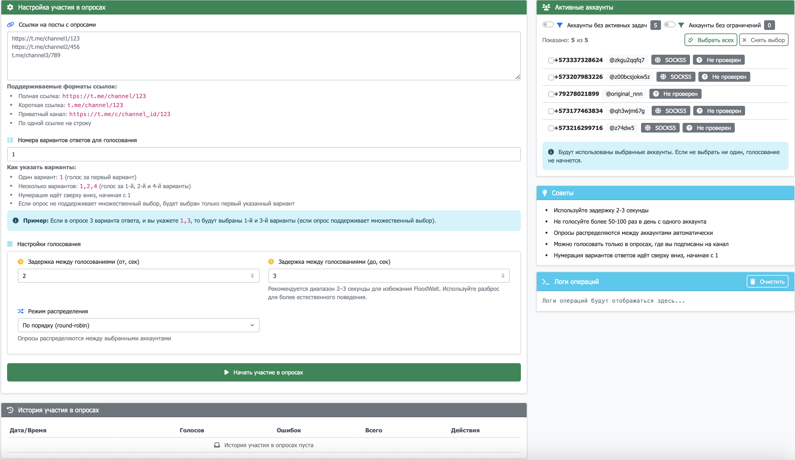
ЧТО УМЕЕТ
ПРИЕМ ССЫЛОК НА ОПРОСЫ
ОПИСАНИЕ:
Принимает список ссылок на посты с опросами (по одной ссылке на строку).
ПОДДЕРЖИВАЕМЫЕ ФОРМАТЫ:
- Открытые каналы:
- https://t.me/channel/123
- t.me/channel/123
- Приватные каналы:
- https://t.me/c/ID/123
ГОЛОСОВАНИЕ ЗА ВАРИАНТЫ ОТВЕТА
ОПИСАНИЕ:
Голосует за указанные варианты ответа в опросе.
ФОРМАТЫ УКАЗАНИЯ ВАРИАНТОВ:
- Один вариант: «1» — голос за первый вариант
- Несколько вариантов: «1,2,4» — голос за первый, второй и четвертый варианты
ВАЖНО:
- Номера идут сверху вниз, начиная с 1
- Если сам опрос не поддерживает несколько вариантов, модуль возьмёт только первый номер из списка
НАСТРОЙКА ЗАДЕРЖКИ
ОПИСАНИЕ:
Настраивает задержку между голосами как диапазон «от / до» в секундах.
РЕКОМЕНДАЦИИ:
- ✓ Рекомендуем 2–3 секунды
- ✓ Используйте разброс для случайности
- ✓ При FloodWait увеличивайте диапазон
РЕЖИМ РАСПРЕДЕЛЕНИЯ
ОПИСАНИЕ:
Распределяет опросы между аккаунтами.
ДОСТУПНЫЕ РЕЖИМЫ:
- По порядку (round-robin) — опросы равномерно распределяются между аккаунтами
- Случайно — аккаунты выбираются случайным образом
ЛОГИРОВАНИЕ
ОПИСАНИЕ:
Ведет логи: какие опросы обрабатываются, каким аккаунтом, какие ошибки происходят.
КАК ЗАПУСТИТЬ
1. ПОДГОТОВКА
- Убедитесь, что аккаунты, которые вы выбрали, подписаны на нужные каналы с опросами
- Проверьте, что ссылки на опросы открываются в браузере/Telegram
2. ЗАПОЛНЕНИЕ ФОРМЫ МОДУЛЯ
- Ссылки на опросы — вставьте ссылки на посты с опросами (каждая — с новой строки)
- Номера вариантов ответов — укажите номера (например «1» или «1,3»)
- Задержка между голосованиями — задайте «от» и «до» в секундах (рекомендуем 2–3)
- Режим распределения — выберите: по порядку или случайно
3. ВЫБОР АККАУНТОВ
Выберите аккаунты в правой панели (можно «Выбрать всех» и при необходимости отфильтровать по задачам/ограничениям).
ФИЛЬТРЫ:
- Без активных задач — фильтрация аккаунтов, у которых нет активных задач
- Без ограничений — фильтрация аккаунтов без ограничений (не заморожены, не в спамблоке)
4. ЗАПУСК
Нажмите «Начать участие в опросах».
Во время работы:
- Следите за блоком «Прогресс участия в опросах» (сколько голосов/ошибок/всего)
- В блоке «Логи операций» видно, какой аккаунт голосует и какие ошибки возникают
5. РЕЗУЛЬТАТЫ
После завершения:
- Смотрите блок «Результаты» — итоговые цифры и списки успешных / неуспешных голосов
- При необходимости откройте детали запуска и экспортируйте отчёт (CSV / TXT / JSON)
СОВЕТЫ И ОГРАНИЧЕНИЯ
НАСТРОЙКА ЗАДЕРЖЕК
- ⚠️ Не ставьте слишком маленькую задержку (0.5–1 сек) — это повышает риск FloodWait/ограничений Telegram
- ✓ Безопаснее использовать диапазон 2–4 секунды и несколько аккаунтов, чем одного без пауз
- ✓ Используйте разброс (от/до) для случайности
РАБОТА С АККАУНТАМИ
- ⚠️ Не перегружайте одни и те же аккаунты: большое количество голосов за короткое время может вызвать лимиты
- ✓ Используйте несколько аккаунтов для распределения нагрузки
- ✓ Выбирайте только активные аккаунты без ограничений
- ✓ Убедитесь, что аккаунты подписаны на каналы с опросами
ОБРАБОТКА ОШИБОК
- ✓ Если видите ошибки в логах (FloodWait, приватность, нет доступа к каналу) — скорректируйте список ссылок, задержки или набор аккаунтов
- ✓ Анализируйте логи для оптимизации настроек
- ✓ При частых ошибках FloodWait увеличивайте задержки
РЕЗУЛЬТАТЫ И ОТЧЕТЫ
ПРОГРЕСС УЧАСТИЯ В ОПРОСАХ
ОТОБРАЖАЕМАЯ ИНФОРМАЦИЯ:
- Сколько голосов поставлено
- Сколько ошибок
- Сколько опросов всего
РЕЗУЛЬТАТЫ
ОТОБРАЖАЕМАЯ ИНФОРМАЦИЯ:
- Итоговые цифры
- Списки успешных / неуспешных голосов
- Детали по каждому опросу (успех/ошибка, причина)
- Какие аккаунты использовались
ЛОГИ ОПЕРАЦИЙ
ОТОБРАЖАЕМАЯ ИНФОРМАЦИЯ:
- Запуск процесса участия в опросах
- Какие опросы обрабатываются
- Каким аккаунтом голосуется
- Успешные голосования
- Ошибки (FloodWait, приватность, нет доступа к каналу и т.д.)
- Завершение работы
ЭКСПОРТ ОТЧЕТОВ
ДОСТУПНЫЕ ФОРМАТЫ:
- CSV — для работы в Excel и других табличных редакторах
- TXT — текстовый формат для простого просмотра
- JSON — структурированный формат для программной обработки
СОДЕРЖИМОЕ ОТЧЕТА:
- Настройки работы (задержки, режим распределения)
- Список всех опросов из исходного списка
- Статус голосования для каждого опроса
- Аккаунт, который голосовал
- Выбранные варианты ответов
- Причины ошибок (если есть)
- Общая статистика
РЕКОМЕНДАЦИИ:
- ✓ Скачивайте отчеты после завершения работы
- ✓ Сохраняйте отчеты для анализа и оптимизации
- ✓ Используйте отчеты для отслеживания результатов
Чекер номеров
Описание работы модуля "Чекер номеров" будет здесь.
Авторегистратор
Описание работы модуля "Авторегистратор" будет здесь.
Автоответчик
Описание работы модуля "Автоответчик" будет здесь.
Перехватчик
Описание работы модуля "Перехватчик" будет здесь.
Прогрев аккаунтов
Описание работы модуля "Прогрев аккаунтов" будет здесь.
Клонер каналов
Описание работы модуля "Клонер каналов" будет здесь.
Клонер чатов
Описание работы модуля "Клонер чатов" будет здесь.
Репортёр
Описание работы модуля "Репортёр" будет здесь.
Отложенный постинг
Описание работы модуля "Отложенный постинг" будет здесь.